AM
.png)
A, A1
B, B1
თქვენი რეკლამის ადგილი
აირჩიეთ კატეგორია:
#214

„საგზაო მოძრაობის შესახებ“ საქართველოს კანონის 24-ე მუხლის მე-4 პუნქტის თანახმად, ქვეითთა ბილიკის, ტროტუარისა და გზისპირის არარსებობის ან მათი გამოყენების შეუძლებლობის შემთხვევაში ქვეითს შეუძლია გადაადგილდეს გზის სავალ ნაწილზე. თუ არსებობს ველობილიკი და მოძრაობის ინტენსივობა ამის საშუალებას იძლევა, ქვეითს უფლება აქვთ გადაადგილდეს მასზე, თუმცა არ უნდა გაართულოს ველოსიპედებისა და მოპედების მოძრაობა. ამავე მუხლის მე-6 პუნქტის თანახმად, ამ მუხლის მე -2, მე-4 და მე-5 პუნქტებით გათვალისწინებულ შემთხვევებში ქვეითი გზის სავალ ნაწილზე გადაადგილებისას უნდა იმყოფებო დეს სავალი ნაწილის კიდესთან რაც შეიძლება ახლოს.
#334
„საგზაო მოძრაობის შესახებ“ საქართველოს კანონის მე-21-ე მუხლის მე-13 პუნქტის თანახმად, მძღოლს ეკრძალება მოძრაობა მუშა სამუხრუჭო სისტემის, საჭის მექანიზმის, სატრანსპორტო საშუალებათა შემადგენლობაში მისაბმელი მოწყობილობის გაუმართაობისას, აგრეთვე დღე-ღამის ბნელ დროს ერთდროულად მწყობრიდან გამოსული (ჩამქრალი) ახლო და შორი განათების ფარებით (ან მათი არარსებობისას) ან/და უკანა საგაბარიტო სინათლეებით იმ გზაზე, რომელზედაც არ არის ხელოვნური განათება ან არასაკმარისი ხილვადობაა. მძღოლის მხარეს არსებული მინასაწმენდის უმოქმედობისას აკრძალულია მექანიკური სატრანსპორტო საშუალების მართვა ნისლის, წვიმისა და თოვის დროს.
#335
„საგზაო მოძრაობის შესახებ“ საქართველოს კანონის 27-ე მუხლის პირველი პუნქტის „დ“ ქვეპუნქტის თანახმად, საგზაო-სატრანსპორტო შემთხვევაში მონაწილე მძღოლი ვალდებულია მიიღოს ზომები საგზაო-სატრანსპორტო შემთხვევის ადგილზე მოძრაობის უსაფრთხოების უზრუნველსაყოფად, მოერიდოს შემთხვევის ადგილზე რაიმეს შეცვლას ან იმ ნაკვალევის განადგურებას, რომელიც შესაძლოა სასარგებლო იყოს პასუხისმგებლობის დასადგენად, ჩაიწეროს თვითმხილველთა გვარები.
#390
„საგზაო მოძრაობის შესახებ“ საქართველოს კანონის 5-ე მუხლის მე-15 პუნქტის თანახმად, გზის სავალი ნაწილი (სავალი ნაწილი) არის გზის ელემენტი, რომელიც განკუთვნილია ურელსო სატრანსპორტო საშუალების მოძრაობისათვის (გარდა ტროტუარისა, გვერდულისა, ველობილიკისა და ქვეითთა ბილიკისა). ამავე მუხლის მე-12 პუნქტის თანახმად, გზა არის მოძრაობისათვის გახსნილი გზის ან ქუჩის მთელი ზედაპირი. გზას შეიძლება ჰქონდეს როგორც ერთი სავალი ნაწილი, ასევე რამოდენიმე, გამოყოფი ზოლით მკვეთრად გამიჯნული, ან სხვადასხვა დონეზე არსებული სავალი ნაწილები. ეს ტერმინი შეიძლება მოიცავდეს ტრამვაის ლიანდაგს, ტროტუარს, გვერდულას, გამყოფ ზოლსა და ველობილიკს.
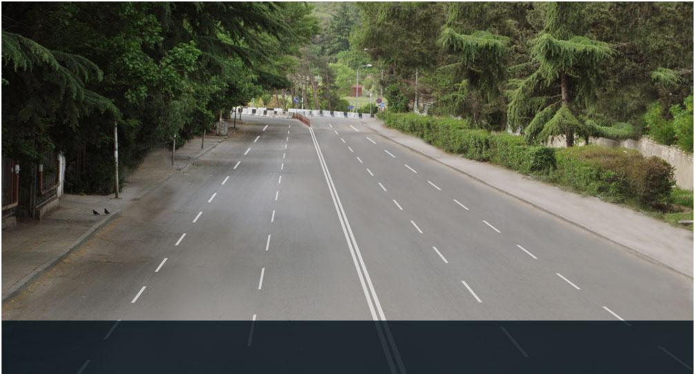
#391
„საგზაო მოძრაობის შესახებ“ საქართველოს კანონის 5-ე მუხლის მე-15 პუნქტის თანახმად, გზის სავალი ნაწილი (სავალი ნაწილი) არის გზის ელემენტი, რომელიც განკუთვნილია ურელსო სატრანსპორტო საშუალების მოძრაობისათვის (გარდა ტროტუარისა, გვერდულისა, ველობილიკისა და ქვეითთა ბილიკისა). ამავე მუხლის მე-12 პუნქტის თანახმად, გზა არის მოძრაობისათვის გახსნილი გზის ან ქუჩის მთელი ზედაპირი. გზას შეიძლება ჰქონდეს როგორც ერთი სავალი ნაწილი, ასევე რამოდენიმე, გამოყოფი ზოლით მკვეთრად გამიჯნული, ან სხვადასხვა დონეზე არსებული სავალი ნაწილები. ეს ტერმინი შეიძლება მოიცავდეს ტრამვაის ლიანდაგს, ტროტუარს, გვერდულას, გამყოფ ზოლსა და ველობილიკს.
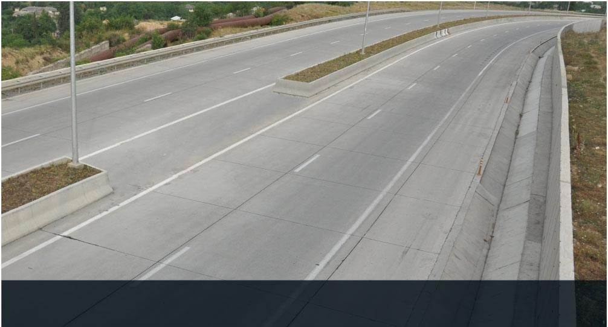
#878
„საგზაო მოძრაობის შესახებ“ საქართველოს კანონის 25-ე მუხლის მე-6 პუნქტის თანახმად, მძღოლი არ უნდა შევიდეს ქვეითთა გადასასვლელზე, თუ წინასწარ არ დაურწმუნდება, რომ ის იძულებული არ გახდება გაჩერდეს მასზე.
#879
„საგზაო მოძრაობის შესახებ“ საქართველოს კანონის 5-ე მუხლის 84-ე პუნქტის თანახმად, უპირატესობა (პრიორიტეტი) – საგზაო მოძრაობის მონაწილის უფლება, სხვა საგზაო მოძრაობის მონაწილეებთან შედარებით პირველმა იმოძრაოს დასახული მიმართულებით.
#883
„საგზაო მოძრაობის შესახებ“ საქართველოს კანონის 5-ე მუხლის მე-7 პუნქტის თანახმად, არასაკმარისი ხილვადობა – გვირაბში გავლისას, დღე-ღამის ბნელ დროს, ნისლის, წვიმის, თოვის და სხვა ბუნებრივი მოვლენების დროს გზის ხილვადობის 300 მეტრზე ნაკლებ მანძილზე შემცირება.
#884
„საგზაო მოძრაობის შესახებ“ საქართველოს კანონის 5-ე მუხლის მე-9 პუნქტის თანახმად, გამყოფი ზოლი – კონსტრუქციულად გამოყოფილი გზის ელემენტი, რომელიც ყოფს მომიჯნავე სავალ ნაწილებს და არ არის განკუთვნილი მასზე ურელსო სატრანსპორტო საშუალების მოძრაობისათვის.
#888
„საგზაო მოძრაობის შესახებ“ საქართველოს კანონის 5-ე მუხლის მე-13 პუნქტის თანახმად, გზაჯვარედინი - ერთ დონეზე გზების კვეთა, შეერთება ან განშტოება, ასეთი კვეთით, შეერთებით ან განშტოებით წარმოქმნილი ტერიტორიების ჩათვლით. გზაჯვარედინად არ ითვლება მიმდებარე ტერიტორიებიდან გამომავალი გამოსასვლელების გზებთან კვეთა.
#902
„საგზაო მოძრაობის შესახებ“ საქართველოს კანონის 5-ე მუხლის 45-ე პუნქტის თანახმად, „მოძრაობის ზოლი“ - გრძივი საგზაო მონიშვნის საშუალებით მონიშნული ან მოუნიშნავი ნებისმიერი ზოლი იმ გრძივი ზოლებიდან, რომლებადაც შეიძლება დაიყოს სავალი ნაწილი, მაგრამ რომელსაც აქვს მოტოციკლისაგან განსხვავებული საავტომობილო ტრანსპორტის ერთ რიგში მოძრაობისათვის საკმარისი სიგანე.
#918
„საგზაო მოძრაობის შესახებ“ საქართველოს კანონის 5-ე მუხლის 89-ე პუნქტის თანახმად, „შეზღუდული ხილვადობა“ - გარემოება, რომლის დროსაც მოკლე მოსახვევი, აღმართის დასასრული, გამწვანება, გზისპირა ნაგებობა ან გზაზე არსებული დაბრკოლება მოძრაობის მიმართულებით გზის ხილვადობას ისე ამცირებს, რომ აღნიშნულ გზის მონაკვეთზე ნებადართული მაქსიმალური სიჩქარით მოძრაობამ შეიძლება საფრთხე წარმოშვას.
#949
„საგზაო მოძრაობის შესახებ“ საქართველოს კანონის 31-ე მუხლის მე-3 პუნქტის თანახმად, ორმხრივმოძრაობიან გზაზე, რომელსაც აქვს გამყოფი ზოლი, საპირისპირო მიმართულების მოძრაობის მხარედ ითვლება გამყოფი ზოლის მარცხნივ არსებული სავალი ნაწილი.
#961
„საგზაო მოძრაობის შესახებ“ საქართველოს კანონის 36-ე მუხლის მე-8 პუნქტის თანახმად, თუ მძღოლი ვერ განსაზღვრავს გზაზე საფრის არსებობას (სიბნელის, თოვლის, ტალახის გამო ან სხვა მიზეზით) და არც პრიორიტეტის ნიშნებია, ითვლება, რომ იგი მეორეხარისხოვან გზაზე იმყოფება.
#962
„საგზაო მოძრაობის შესახებ“ საქართველოს კანონის 28-ე მუხლის მე-5 პუნქტის თანახმად, თუ გზაზე დროებით გადასატან სადგარზე ან საგზაო სამუშაოების მწარმოებელი ორგანიზაციის ავტომობილზე დაყენებულია საგზაო ნიშანი (შემდგომ − დროებითი საგზაო ნიშანი), რომლის მოთხოვნები ეწინააღმდეგება იმავე გზის მონაკვეთზე სტაციონარულად დაყენებული საგზაო ნიშნის მოთხოვნებს, მძღოლი ვალდებულია შეასრულოს დროებითი საგზაო ნიშნის მოთხოვნები.
#1340
თუ გაზონზე ან ტროტუარზე მყოფ მოთამაშე ბავშვებს სატრანსპორტო საშუალების წინ გზის სავალ ნაწილზე გადმოუვარდათ ბურთი, მძღოლმა უნდა გაითვალისწინოს, რომ ბავშვები შეიძლება გამოიქცნენ გზის სავალ ნაწილზე ბურთის ასაღებად.
#1341
თუ სატრანსპორტო საშუალება უახლოვდება ტროტუარზე მოთამაშე ბავშვებს, მძღოლმა უნდა შეანელოს სიჩქარე და მზად იყოს დამუხრუჭებისთვის.
#829
„საგზაო მოძრაობის შესახებ“ საქართველოს კანონის მე-21-ე მუხლის მე-13 პუნქტის თანახმად, მძღოლს ეკრძალება მოძრაობა მუშა სამუხრუჭო სისტემის, საჭის მექანიზმის, სატრანსპორტო საშუალებათა შემადგენლობაში მისაბმელი მოწყობილობის გაუმართაობისას, აგრეთვე დღე-ღამის ბნელ დროს ერთდროულად მწყობრიდან გამოსული (ჩამქრალი) ახლო და შორი განათების ფარებით (ან მათი არარსებობისას) ან/და უკანა საგაბარიტო სინათლეებით იმ გზაზე, რომელზედაც არ არის ხელოვნური განათება ან არასაკმარისი ხილვადობაა. მძღოლის მხარეს არსებული მინასაწმენდის უმოქმედობისას აკრძალულია მექანიკური სატრანსპორტო საშუალების მართვა ნისლის, წვიმისა და თოვის დროს.
#940
„საგზაო მოძრაობის შესახებ“ საქართველოს კანონის მე-21-ე მუხლის მე-13 პუნქტის თანახმად, მძღოლს ეკრძალება მოძრაობა მუშა სამუხრუჭო სისტემის, საჭის მექანიზმის, სატრანსპორტო საშუალებათა შემადგენლობაში მისაბმელი მოწყობილობის გაუმართაობისას, აგრეთვე დღე-ღამის ბნელ დროს ერთდროულად მწყობრიდან გამოსული (ჩამქრალი) ახლო და შორი განათების ფარებით (ან მათი არარსებობისას) ან/და უკანა საგაბარიტო სინათლეებით იმ გზაზე, რომელზედაც არ არის ხელოვნური განათება ან არასაკმარისი ხილვადობაა. მძღოლის მხარეს არსებული მინასაწმენდის უმოქმედობისას აკრძალულია მექანიკური სატრანსპორტო საშუალების მართვა ნისლის, წვიმისა და თოვის დროს.
#256
„საგზაო მოძრაობის შესახებ" საქართველოს კანონის პირველი დანართის 1.1, 1.2 და 1.41- 1.46 პუნქტების თანახმად, საგზაო ნიშანი: 1.1. „რკინიგზის შლაგბაუმიანი გადასასვლელი" − იძლევა გაფრთხილებას რკინიგზის შლაგბაუმიან გადასასვლელთან მიახლოების თაობაზე. 1.2. „რკინიგზის უშლაგბაუმო გადასასვლელი"−იძლევა გაფრთხილებას რკინიგზის უშლაგბაუმო გადასასვლელთან მიახლოების თაობაზე. 1.4.1–1.4.6. „რკინიგზის გადასასვლელთან მიახლოება" − დამატებით აფრთხილებს მძღოლს დაუსახლებელ პუნქტში რკინიგზის გადასასვლელთან მიახლოების თაობაზე. ამავე დანართის პირველი თავის შენიშვნის „ა" და „ვ" ქვეპუნქტების თანახმად: ა) ნიშნები 1.1, 1.2, 1.5–1.34 ნიშნები დაუსახლებელ პუნქტში იდგმება სახიფათო მონაკვეთის დასაწყისამდე 150−300 მეტრ მანძილზე, დასახლებულ პუნქტში – 50–100 მეტრ მანძილზე. აუცილებლობისას ნიშნები იდგმება სხვა მანძილზედაც, რომელიც მითითებულია 8.1.1 დაფაზე; ვ) ნიშნები 1.4.1−1.4.3 ნიშნები იდგმება გზის მარჯვენა მხარეს, ხოლო 1.4.4−1.4.6 ნიშნები − გზის მარცხენა მხარეს. 1.4.1 და 1.4.4 ნიშნები იდგმება მოძრაობის მიმართულებით ძირითად და განმეორებით 1.1 ან 1.2 ნიშანთან ერთად, 1.4.3 და1.4.6 ნიშნები − მოძრაობის მიმართულებით განმეორებით 1.1 ან 1.2 ნიშანთან ერთად, ხოლო 1.4.2 და 1.4.5 ნიშნები − დამოუკიდებლად, თანაბარ დაშორებაზე ძირითად და განმეორებით 1.1 ან 1.2 ნიშანს შორის.
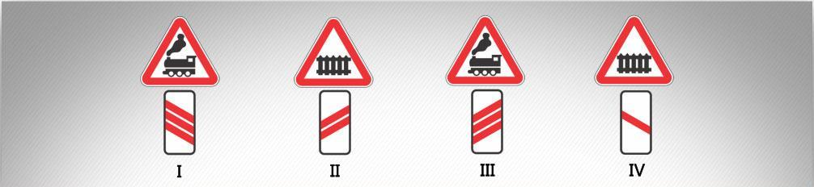
#601
„საგზაო მოძრაობის შესახებ" საქართველოს კანონის პირველი დანართის პირველი თავის (მაფრთხილებელი ნიშნები) 1.1 პუნქტის თანახმად საგზაო ნიშანი 1.1 „რკინიგზის შლაგბაუმიანი გადასასვლელი" - იძლევა გაფრთხილებას რკინიგზის შლაგბაუმიან გადასასვლელთან მიახლოების თაობაზე.
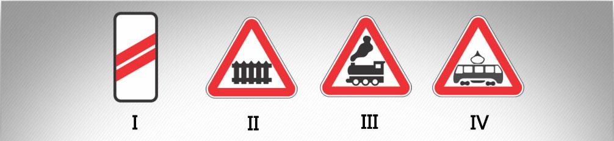
#606
„საგზაო მოძრაობის შესახებ" საქართველოს კანონის პირველი დანართის პირველი თავის (მაფრთხილებელი ნიშნები) შენიშვნის „ბ" ქვეპუნქტის თანახმად 1.23 „ქვეითთა გადასასვლელი", 1.24 „ბავშვები" და 1.26 „საგზაო სამუშაოები" ნიშნები მეორდება დაუსახლებელ პუნქტში, ხოლო 1.24 და 1.26 ნიშნები − დასახლებულ პუნქტშიც. მეორე ნიშანი იდგმება სახიფათო მონაკვეთის დასაწყისიდან არანაკლებ 50 მეტრ მანძილზე.
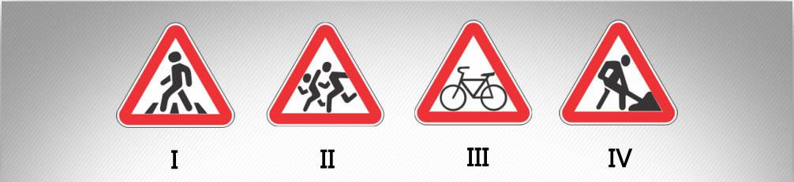
#615
„საგზაო მოძრაობის შესახებ" საქართველოს კანონის პირველი დანართის პირველი თავის (მაფრთხილებელი ნიშნები) შენიშვნის „დ" ქვეპუნქტის თანახმად 1.26 „საგზაო სამუშაოები" ნიშანი სავალ ნაწილზე ხანმოკლე სამუშაოს ჩატარებისას იდგმება სამუშაოს ჩატარების ადგილიდან 10−15 მეტრ მანძილზე, 8.1.1 დაფის გარეშე.
#625
„საგზაო მოძრაობის შესახებ" საქართველოს კანონის პირველი დანართის პირველი თავის (მაფრთხილებელი ნიშნები) 1.12.1 და 1.12.2 პუნქტების თანახმად საგზაო ნიშნები 1.12.1, 1.12.2 „სახიფათო მოსახვევი" - აღნიშნავს მცირერადიუსიან ან შეზღუდული ხილვადობის მქონე გზის სახიფათო მოსახვევს: 1.12.1 – მარჯვნივ, 1.12.2 – მარცხნივ.
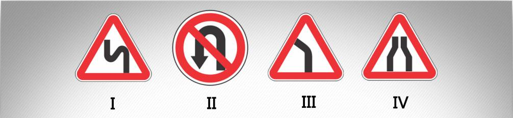
#628
„საგზაო მოძრაობის შესახებ" საქართველოს კანონის პირველი დანართის პირველი თავის (მაფრთხილებელი ნიშნები) 1.14 პუნქტის თანახმად საგზაო ნიშანი 1.14 „ციცაბო დაღმართი" - იძლევა გაფრთხილებას ციცაბოდაღმართიან გზის მონაკვეთთან მიახლოების თაობაზე.
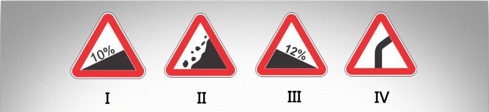
#630
„საგზაო მოძრაობის შესახებ" საქართველოს კანონის პირველი დანართის პირველი თავის (მაფრთხილებელი ნიშნები) 1.16 პუნქტის თანახმად საგზაო ნიშანი 1.16 „მოლიპული გზა" - აღნიშნავს გზის მოლიპულ მონაკვეთს, რომლზედაც საბურავის გზის საფართან ჩაჭიდების კოეფიციენტი 0,4-ზე ნაკლებია.
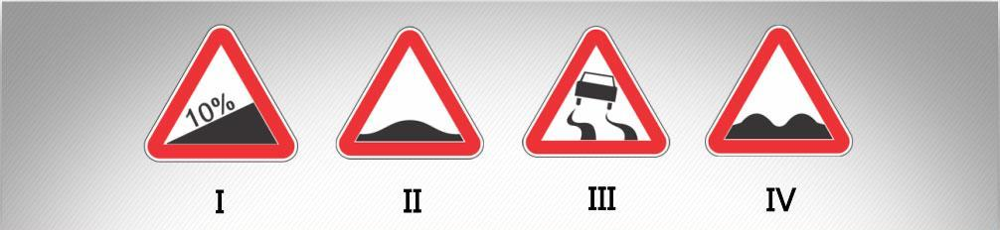
#631
„საგზაო მოძრაობის შესახებ" საქართველოს კანონის პირველი დანართის პირველი თავის (მაფრთხილებელი ნიშნები) 1.17 პუნქტის თანახმად საგზაო ნიშანი 1.17 „უსწორმასწორო გზა" - აღნიშნავს გზის მონაკვეთს, რომლის სავალი ნაწილი დაზიანებულია – ტალღოვანი, ღრანტეებიანი, ხიდთან უსწორმასწორო შეუღლებებით და ა. შ..
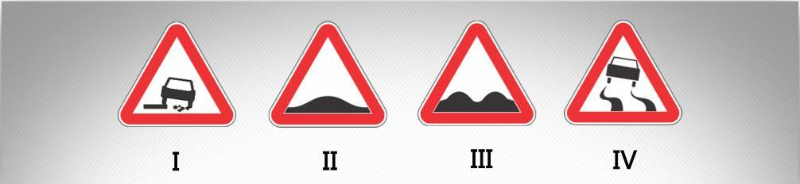
#635
„საგზაო მოძრაობის შესახებ" საქართველოს კანონის პირველი დანართის პირველი თავის (მაფრთხილებელი ნიშნები) 1.21.1-1.21.3 პუნქტების თანახმად საგზაო ნიშნები 1.21.1–1.21.3 „გზის შევიწროება" - აღნიშნავს გზის მონაკვეთს, რომლის სავალი ნაწილის სიგანე ვიწროვდება. 1.21.1 - ორივე მხრიდან; 1.21.2 - მარჯვნიდან; 1.21.3 - მარცხნიდან.
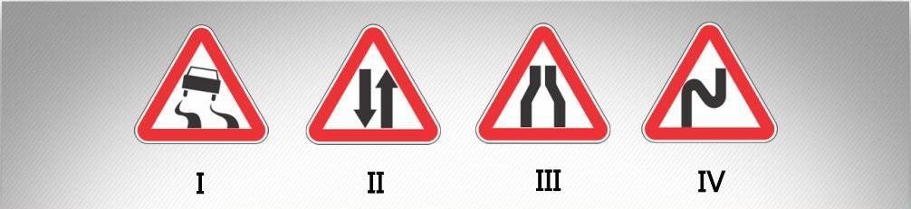
#639
„საგზაო მოძრაობის შესახებ" საქართველოს კანონის პირველი დანართის პირველი თავის (მაფრთხილებელი ნიშნები) 1.23 პუნქტის თანახმად საგზაო ნიშანი 1.23 „ქვეითთა გადასასვლელი" - იძლევა გაფრთხილებას 5.19.1 და 5.19.2 ნიშნებით ან/და 1.14.1–1.14.3 მონიშვნებით აღნიშნულ ქვეითთა გადასასვლელთან მიახლოების თაობაზე.
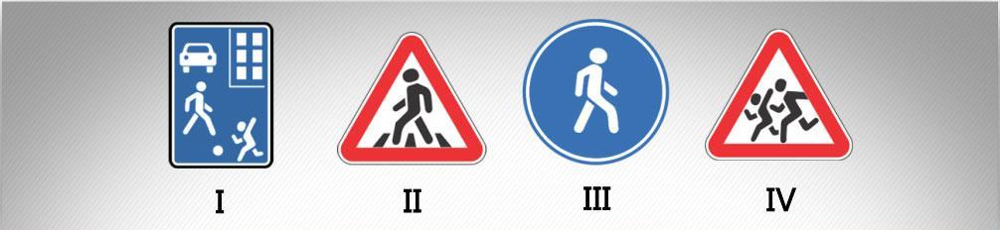
#642
„საგზაო მოძრაობის შესახებ" საქართველოს კანონის პირველი დანართის პირველი თავის (მაფრთხილებელი ნიშნები) 1.26 პუნქტის თანახმად საგზაო ნიშანი 1.26 „საგზაო სამუშაოები" - აღნიშნავს გზის მონაკვეთს, რომლის ფარგლებში სამუშაოები მიმდინარეობს.
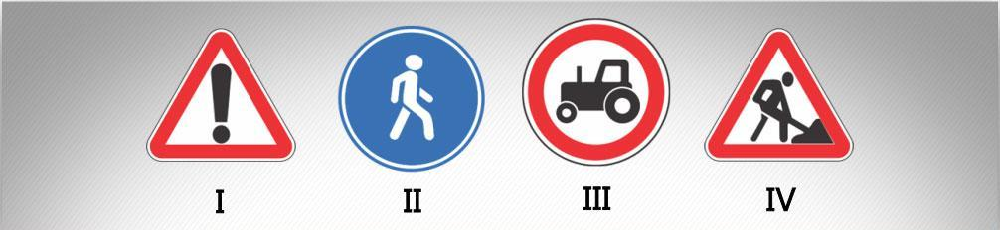
#650
„საგზაო მოძრაობის შესახებ" საქართველოს კანონის პირველი დანართის პირველი თავის (მაფრთხილებელი ნიშნები) 1.34 პუნქტის თანახმად საგზაო ნიშანი 1.34 „სხვა საფრთხეები" - გზის მონაკვეთი, რომელზედაც შეიძლება წარმოიშვას ისეთი საფრთხე, რომელიც არ არის განსაზღვრული სხვა მაფრთხილებელი ნიშნებით.
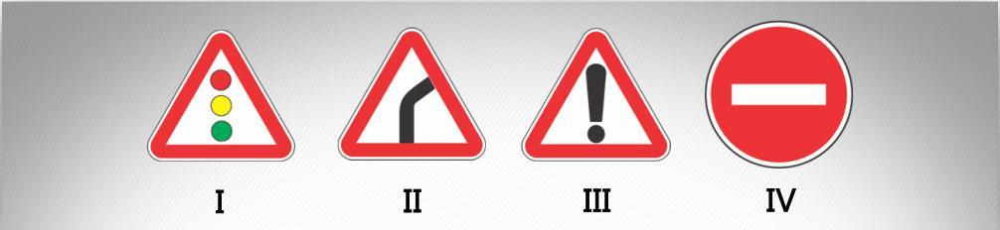
#652
„საგზაო მოძრაობის შესახებ" საქართველოს კანონის პირველი დანართის პირველი თავის (მაფრთხილებელი ნიშნები) 1.36.1 და 1.36.2 პუნქტების თანახმად საგზაო ნიშნები 1.36.1 და 1.36.2 „მოხვევის მიმართულება" - მიუთითებს "T"-სებურ გზაჯვარედინზე ან გზების განშტოებაზე მოძრაობის მიმართულებას (მარჯვნივ და მარცხნივ), ან საგზაო სამუშაოების მიმდინარეობის ადგილის შემოვლის შესაბამის მიმართულებას.
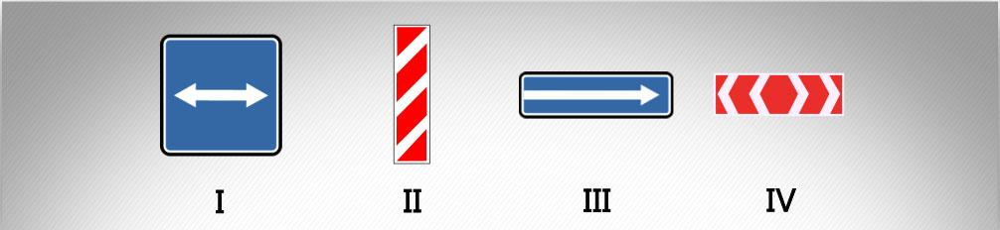
#653
„საგზაო მოძრაობის შესახებ" საქართველოს კანონის პირველი დანართის მე-2 თავის (პრიორიტეტის ნიშანი) 2.1 პუნქტების თანახმად საგზაო ნიშანი 2.1 „მთავარი გზა" - გზა, რომელზე მოძრავ მძღოლსაც ენიჭება არარეგულირებული გზაჯვარედინის გავლის უპირატესობა. ნიშანი იდგმება გზის დასაწყისში და მეორდება უშუალოდ ყოველი გზაჯვარედინის წინ. 2.1 ნიშანი 8.13 დაფით დასახლებულ პუნქტში იდგმება გზაჯვარედინის წინ, რომელზედაც მთავარი გზა იცვლის მიმართულებას, დაუსახლებელ პუნქტში − წინასწარ გზაჯვარედინამდე 150−300 მეტრ მანძილზე და გზაჯვარედინის წინ.
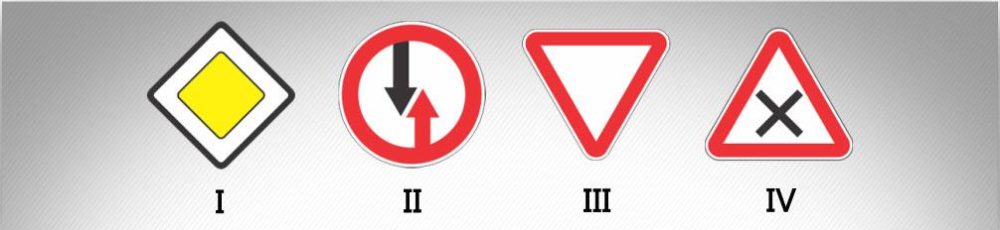
#1793
განმარტება მალე დაემატება
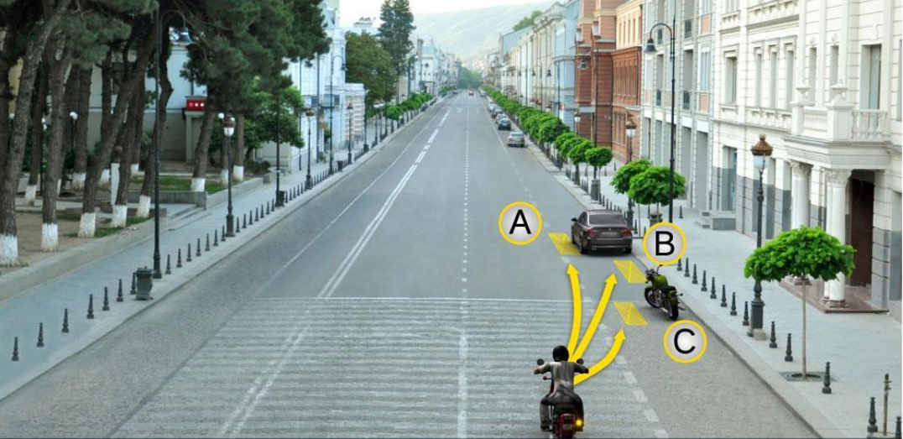
#655
„საგზაო მოძრაობის შესახებ“ საქართველოს კანონის პირველი დანართის მე-2 თავის (პრიორიტეტის ნიშანი) 2.2 პუნქტების თანახმად საგზაო ნიშანი 2.2 „მთავარი გზის დასასრული” - გზის იმ მონაკვეთის ბოლო, საიდანაც იგი კარგავს მთავარი გზის სტატუსს. თუ მთავარი გზა იმ გზის გადაკვეთის წინმთავრდება, რომელზედაც დაწესებულია მოცემული გზაჯვარედინის გავლის უპირატესობა, 2.2 ნიშანს დაუსახლებელ პუნქტში დგამენ წინასწარ 2.4 ნიშანთან ერთად, დასახლებულ პუნქტში − გზაჯვარედინიდან 25 მეტრ მანძილზე ან/და 2.3 ან 2.4 ნიშანთან ერთად. ნიშანი შეიძლება დაიდგას სხვა, 8.1.1 დაფაზე მითითებულ მანძილზედაც.
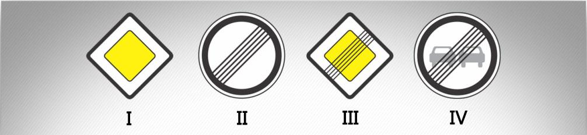
#657
„საგზაო მოძრაობის შესახებ“ საქართველოს კანონის პირველი დანართის პირველი თავის (მაფრთხილებელი ნიშნები) 1.7.1- 1.7.7 პუნქტების თანახმად საგზაო ნიშანი 1.7.1. „მეორეხარისხოვან გზასთან გადაკვეთა“, 1.7.2−1.7.7. „მეორეხარისხოვანი გზის შეერთება“ (შეერთება მარჯვნიდან – 1.7.2, 1.7.4 და 1.7.6, შეერთება მარცხნიდან – 1.7.3, 1.7.5 და 1.7.7) − ისეთ გზასთან გადაკვეთა ან ისეთ გზასთან შეერთება, რომელზე მოძრავ მძღოლსაც აქვს გზის დათმობის ვალდებულება. 1.7.1−1.7.7 ნიშნები სახიფათო მონაკვეთის დასაწყისამდე იდგმება დაუსახლებელ პუნქტში 150−300 მეტრ მანძილზე, დასახლებულ პუნქტში – 50–100 მეტრ მანძილზე.
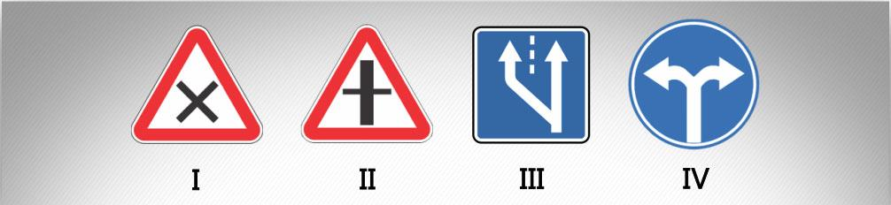
#659
„საგზაო მოძრაობის შესახებ“ საქართველოს კანონის პირველი დანართის პირველი თავის (მაფრთხილებელი ნიშნები) 1.7.1- 1.7.7 პუნქტების თანახმად საგზაო ნიშანი 1.7.1. „მეორეხარისხოვან გზასთან გადაკვეთა“, 1.7.2−1.7.7. „მეორეხარისხოვანი გზის შეერთება“ (შეერთება მარჯვნიდან – 1.7.2, 1.7.4 და 1.7.6, შეერთება მარცხნიდან – 1.7.3, 1.7.5 და 1.7.7) − ისეთ გზასთან გადაკვეთა ან ისეთ გზასთან შეერთება, რომელზე მოძრავ მძღოლსაც აქვს გზის დათმობის ვალდებულება. 1.7.1−1.7.7 ნიშნები სახიფათო მონაკვეთის დასაწყისამდე იდგმება დაუსახლებელ პუნქტში 150−300 მეტრ მანძილზე, დასახლებულ პუნქტში – 50–100 მეტრ მანძილზე.
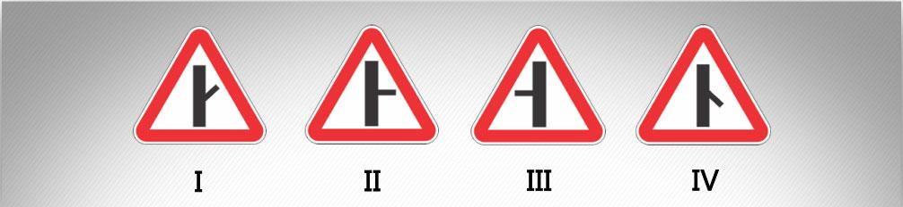
#660
„საგზაო მოძრაობის შესახებ“ საქართველოს კანონის პირველი დანართის მე-2 თავის (პრიორიტეტის ნიშანი) 2.3 პუნქტების თანახმად საგზაო ნიშანი 2.3 „დაუთმე გზა” - გზა, რომელზე მოძრავი მძღოლიც ვალდებულია გზა დაუთმოს გადა¬სა¬კვეთ გზაზე მოძრავ მძღოლს, ხოლო 8.13 დაფის არსებობისას – მთავარ გზაზე მოძრავ მძღოლს. 2.3 ნიშანი დაუსახლებელ პუნქტში იდგმება წინასწარ გზაჯვარედინამდე 150−300 მეტრ მანძილზე 8.1.1 დაფით, თუ გზაჯვარედინის წინ დადგმულია 2.3 ნიშანი, ან 8.1.2 დაფით, თუ გზაჯვარედინის წინ დადგმულია 2.4 ნიშანი.
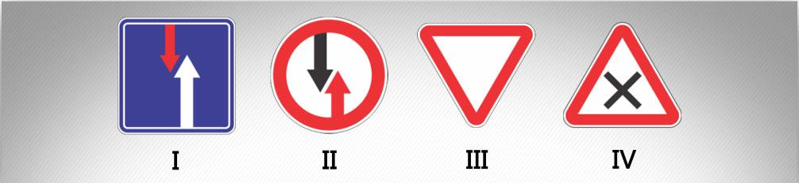
#663
„საგზაო მოძრაობის შესახებ“ საქართველოს კანონის პირველი დანართის მე-2 თავის (პრიორიტეტის ნიშანი) 2.4 პუნქტების თანახმად საგზაო ნიშანი 2.4 „მოძრაობა გაუჩერებლად აკრძალულია”- უკრძალავს მძღოლს მოძრაობის გაგრძელებას „სდექ“ ხაზის წინ გაუჩერებალად, ხოლო თუ ის არ არის – გადასაკვეთი სავალი ნაწილის ნაპირთან. მძღოლი ვალდებულია გზა დაუთმოს გადასაკვეთ გზაზე მოძრავ მძღოლს, ხოლო 8. 13 დაფის არსებობისას – მთავარ გზაზე მოძრავ მძღოლს. ნიშანი იდგმება, თუ არაა უზრუნველყოფილი გადამკვეთ გზაზე მოძრავი სატრანსპორტო საშუალებათა ხილვადობა, ის აგრეთვე შეიძლება დაიდგას რკინიგზის გადასასვლელის ან საკარანტინო საგუშაგოს წინ (ამ შემთხვევაში მძღოლი ვალდებულია გაჩერდეს „სდექ” ხაზის წინ, ხოლო თუ ის არ არის – ნიშნის წინ).
#666
„საგზაო მოძრაობის შესახებ“ საქართველოს კანონის პირველი დანართის მე-2 თავის (პრიორიტეტის ნიშანი) 2.6 პუნქტების თანახმად საგზაო ნიშანი 2.6 „უპირატესობა შემხვედრ მოძრაობასთან” - ანიჭებს მძღოლს უპირატესობას გზის ვიწრო მონაკვეთზე მოძრაობისას საპირისპირო მიმართულებით მოძრავ სატრანსპორტო საშუალებასთან შედარებით.
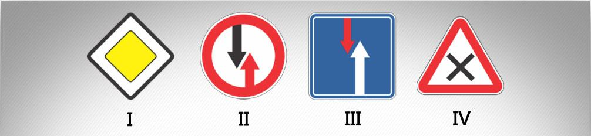
#668
„საგზაო მოძრაობის შესახებ“ საქართველოს კანონის პირველი დანართის პირველი თავის (მაფრთხილებელი ნიშნები) 1.7.1- 1.7.7 პუნქტების თანახმად საგზაო ნიშანი 1.7.1. „მეორეხარისხოვან გზასთან გადაკვეთა“, 1.7.2−1.7.7. „მეორეხარისხოვანი გზის შეერთება“ (შეერთება მარჯვნიდან – 1.7.2, 1.7.4 და 1.7.6, შეერთება მარცხნიდან – 1.7.3, 1.7.5 და 1.7.7) − ისეთ გზასთან გადაკვეთა ან ისეთ გზასთან შეერთება, რომელზე მოძრავ მძღოლსაც აქვს გზის დათმობის ვალდებულება. ამავე კანონის პირველი დანართის მე-2 თავის (პრიორიტეტის ნიშანი) 2.1 პუნქტების თანახმად საგზაო ნიშანი 2.1 „მთავარი გზა” - გზა, რომელზე მოძრავ მძღოლსაც ენიჭება არარეგულირებული გზაჯვარედინის გავლის უპირატესობა. ნიშანი იდგმება გზის დასაწყისში და მეორდება უშუალოდ ყოველი გზაჯვარედინის წინ. 2.1 ნიშანი 8.13 დაფით დასახლებულ პუნქტში იდგმება გზაჯვარედინის წინ, რომელზედაც მთავარი გზა იცვლის მიმართულებას, დაუსახლებელ პუნქტში − წინასწარ გზაჯვარედინამდე 150−300 მეტრ მანძილზე და გზაჯვარედინის წინ.
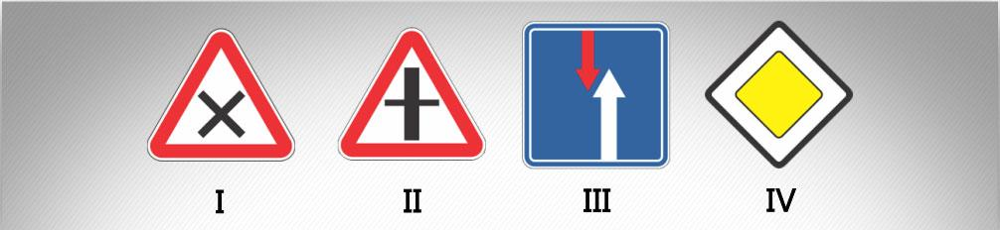
#670
„საგზაო მოძრაობის შესახებ“ საქართველოს კანონის პირველი დანართის პირველი თავის (მაფრთხილებელი ნიშნები) შენიშვნის „ა“ პუნქტის თანახმად 1.1, 1.2, 1.5–1.34 ნიშნები დაუსახლებელ პუნქტში იდგმება სახიფათო მონაკვეთის დასაწყისამდე 150−300 მეტრ მანძილზე, დასახლებულ პუნქტში – 50–100 მეტრ მანძილზე. აუცილებლობისას ნიშნები იდგმება სხვა მანძილზედაც, რომელიც მითითებულია 8.1.1 დაფაზე. სურათზე ნაჩვენები ნიშნებია:, 1.7.1 „მეორეხარისხოვან გზებთან გადაკვეთა”, 1.7.2, 1.7.3 და 1.7.7„მეორეხარისხოვანი გზის შეერთება“.
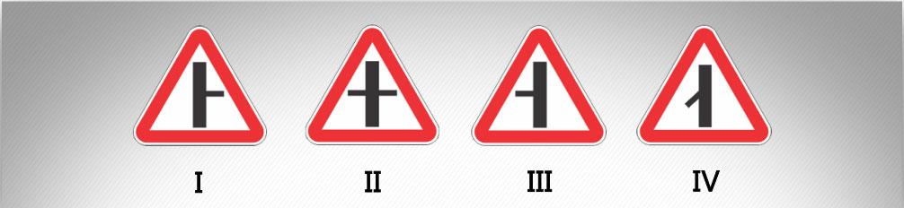
#255
„საგზაო მოძრაობის შესახებ" საქართველოს კანონის პირველი დანართის 3.25 პუნქტის თანახმად საგზაო ნიშანი 3.25 „მაქსიმალური სიჩქარის შეზღუდვის დასასრული" − 3.24 ნიშნის („მაქსიმალური სიჩქარის შეზღუდვა") მოქმედების ზონის დასასრული.
#691
„საგზაო მოძრაობის შესახებ" საქართველოს კანონის პირველი დანართის მე-3 თავის (ამკრძალავი ნიშნები) 3.10 პუნქტის თანახმად საგზაო ნიშანი 3.10 „ქვეითთა მოძრაობა აკრძალულია". - კრძალავს ქვეითთა მოძრაობას. ნიშანი იდგმება იმ ადგილას, სადაც ქვეითთა მოძრაობა დაუშვებელია, მათი უსაფრთხოებიდან გამომდინარე.
#716
„საგზაო მოძრაობის შესახებ" საქართველოს კანონის პირველი დანართის მე-3 თავის (ამკრძალავი ნიშნები) 3.19 პუნქტის თანახმად საგზაო ნიშანი 3.19 „მობრუნება აკრძალულია" - კრძალავს სავალი ნაწილების უახლოეს გადაკვეთაზე მობრუნებას.
#738
„საგზაო მოძრაობის შესახებ" საქართველოს კანონის პირველი დანართის მე-3 თავის (ამკრძალავი ნიშნები) 3.30 პუნქტის თანახმად საგზაო ნიშანი 3.30 „დგომა აკრძალულია ლუწ რიცხვებში" - კრძალავს სატრანსპორტო საშუალების დგომას თვის ლუწ რიცხვებში.
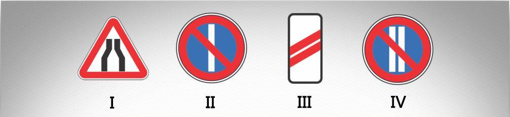
#1793
განმარტება მალე დაემატება
#621
„საგზაო მოძრაობის შესახებ“ საქართველოს კანონის პირველი დანართის პირველი თავის (მაფრთხილებელი ნიშნები) 1.8 პუნქტის თანახმად საგზაო ნიშანი 1.8 „წრიულიმოძრაობიანი გადაკვეთა” - იძლევა გაფრთხილებას 4.3 „წრიული მოძრაობა” ნიშნით აღნიშნულ წრიულმოძრაობიან გზაჯვარედინთან მიახლოების თაობაზე.
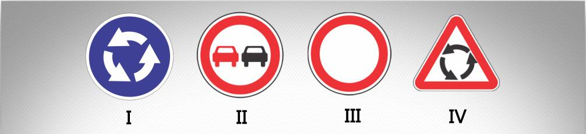
#1161
ნიშნები, რომლებიც მარცხნივ მოხვევის ნებას რთავს, მობრუნების უფლებასაც იძლევა, თუმცა კონკრეტულ ზოლებს აქვს მნიშვნელობა.
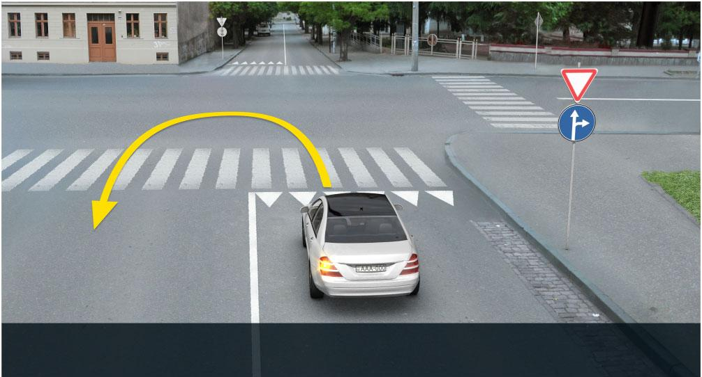
#1163
საგზაო ნიშანი 4.2.2 „დაბრკოლების შემოვლა მარცხნიდან“ მიუთითებს დაბრკოლების მხოლოდ მარცხნიდან შემოვლის მიმართულებას.
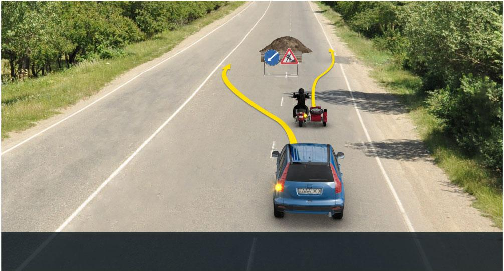
#486
ნიშანი 5.13.2 მიუთითებს სამარშრუტო ზოლის მქონე გზაზე გასვლას. მძღოლს შეუძლია იმოძრაოს პირდაპირ ან მობრუნდეს, მაგრამ აკრძალულია სამარშრუტო ზოლში (მარჯვნივ) შესვლა.
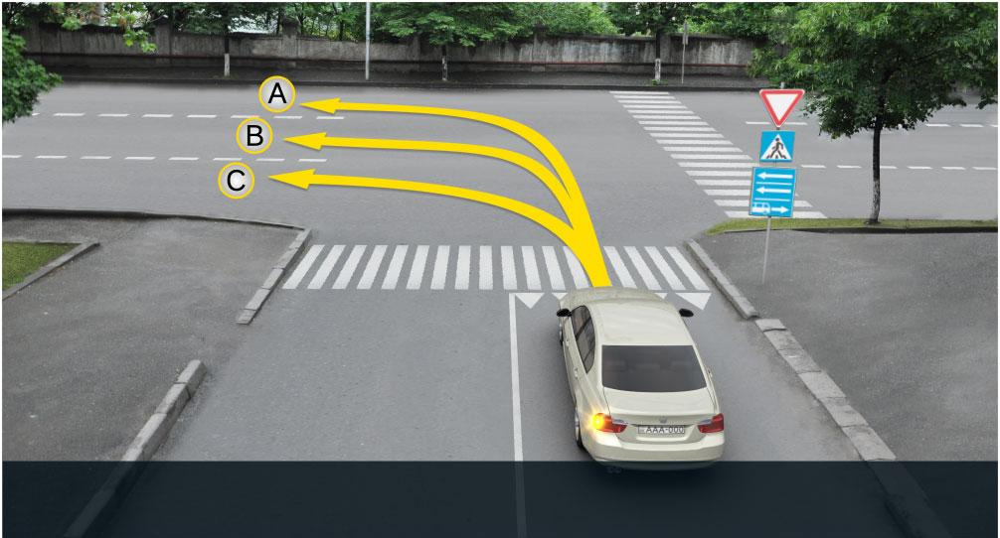
#488
ცალმხრივმოძრაობიან გზაზე გასვლისას, სადაც არის სამარშრუტო ზოლი, სხვა ავტომობილებს შეუძლიათ იმოძრაონ ყველა მიმართულებით, გარდა თავად სამარშრუტო ზოლისა.
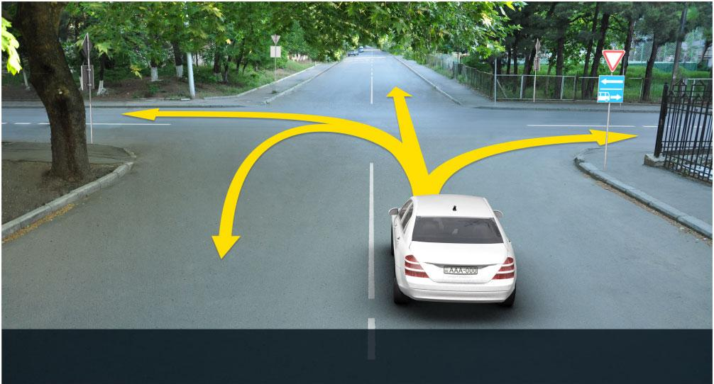
#778
ნიშნები 5.7.1 და 5.7.2 „ცალმხრივმოძრაობიან გზაზე გასვლა” იდგმება გზაჯვარედინის წინ და მიუთითებს, რომ გადამკვეთ გზაზე მოძრაობა ცალმხრივია.
#779
ნიშანი 5.8 „რევერსული მოძრაობა“ აღნიშნავს გზის მონაკვეთს, სადაც ერთ ან რამდენიმე ზოლზე მოძრაობის მიმართულება შეიძლება შეიცვალოს საპირისპიროდ სპეციალური შუქნიშნების მეშვეობით.
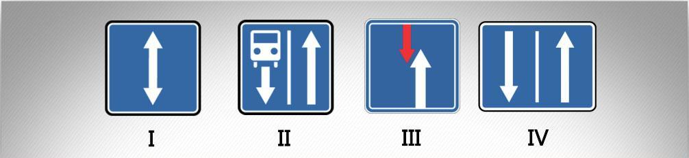
#796
„საგზაო მოძრაობის შესახებ“ საქართველოს კანონის პირველი დანართის მე-5 თავის (განსაკუთრებული მითითებების ნიშნები) 5.27 და 5.29 პუნქტების თანახმად, საგზაო ნიშნები 5.27 „ზონა დგომის შეზღუდვით“ და 5.29 „რეგულირებადი სადგომის ზონა“ აღნიშნავს ტერიტორიას, რომლის ფარგლებშიც შესაბამისად რეგლამენტირებულია დგომა.
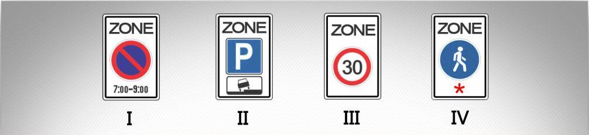
#800
თუ გზაზე დგას 5.15.1 ან 5.15.2 ნიშნები, მოხვევა უნდა განხორციელდეს მხოლოდ ნიშნით მითითებული ზოლიდან. ამ დროს ტრამვაის ლიანდაგზე ასვლა და იქიდან მოხვევა აკრძალულია.
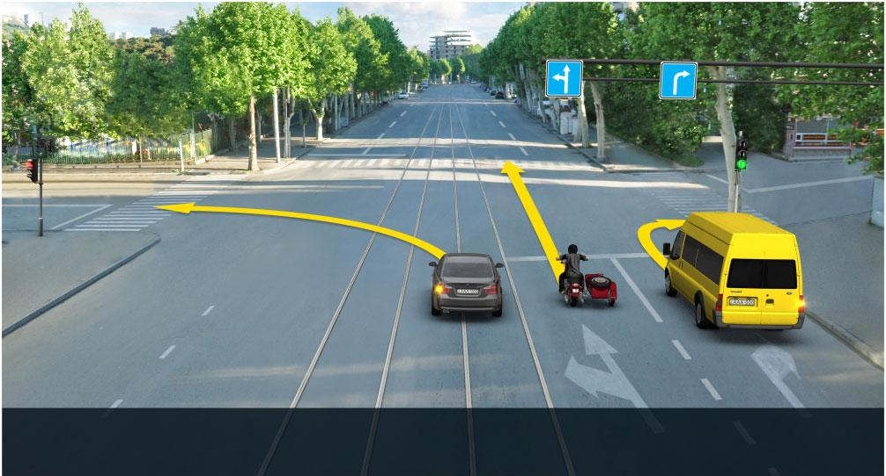
#1185
ნიშანი 6.13 მიუთითებს საერთაშორისო გადაზიდვების კონტროლის პუნქტზე.
#1216
„საგზაო მოძრაობის შესახებ“ საქართველოს კანონის პირველი დანართის 3.20 პუნქტის თანახმად, საგზაო ნიშანი 3.20. „გასწრება აკრძალულია“ − კრძალავს ყველა სახის მექანიკური სატრან¬სპორ¬ტო საშუალების გასწრებას (გარდა 30 კმ/სთ-ზე ნაკლები სიჩქარით მოძრავი ტრანსპორტისა). ნებადართულია გასწრება უეტლო მოტოციკლის, მოპედისა და ველოსიპედის შემხვედრი მოძრაობის ზოლში გადაუსვლელად. ამავე კანონის პირველი დანართის მე-8 თავის (დამატებითი ინფორმაციის ნიშნები (დაფები)) 8.16 პუნქტის თანახმად, დაფა 8.16 „სველი საფარი” - მიუთითებს, რომ ნიშნის მოქმედება ვრცელდება დროის იმ პერიოდში, როცა სავალი ნაწილის საფარი სველია. გამოიყენება 1.16, 3.20, 3.22 და 3.24 ნიშნებთან ერთად.
#1242
„საგზაო მოძრაობის შესახებ“ საქართველოს კანონის პირველი დანართის პირველი თავის (მაფრთხილებელი ნიშნები) 1.17 პუნქტისა და ამავე თავის შენიშვნის „ა“ ქვეპუნქტის თანახმად, საგზაო ნიშანი 1.17 „უსწორმასწორო გზა” - გზის მონაკვეთი, რომლის სავალი ნაწილი დაზიანებულია ტალღოვანი, ღრანტეებიანი, ხიდთან უსწორმასწორო შეუღლებებით და ა. შ.. 1.1, 1.2, 1.5–1.34 ნიშნები დაუსახლებელ პუნქტში იდგმება სახიფათო მონაკვეთის დასაწყისამდე 150−300 მეტრ მანძილზე. ამავე დანართის მე-8 თავის (დამატებითი ინფორმაციის ნიშნები (დაფები)) 8.2.1 პუნქტის თანახმად, დაფა 8.2.1 „მოქმედების ზონა” - მიუთითებს მაფრთხილებელი ნიშნით აღნიშნული გზის სახიფათო მონაკვეთის სიგრძეს, ან ამკრძალავი და საინფორმაციო-მაჩვენებელი ნიშნის მოქმედების ზონას. ამავე დანართის მე-7 თავის (საინფორმაციო-მაჩვენებელი ნიშნები) 7.2 პუნქტის თანახმად, საგზაო ნიშანი 7.2 „რეკომენდებული სიჩქარე“ - მიუთითებს სიჩქარეს, რომლითაც რეკომენდებულია მოძრაობა გზის მოცემულ მონაკვეთზე. ნიშანი იდგმება გზის დასაწყისში. ნიშნის მოქმედება ვრცელდება უახლოეს გზაჯვარედინამდე, ხოლო მაფრთხილებელ ნიშანთან ერთად − სახიფათო უბნის მთელ სიგრძეზე.
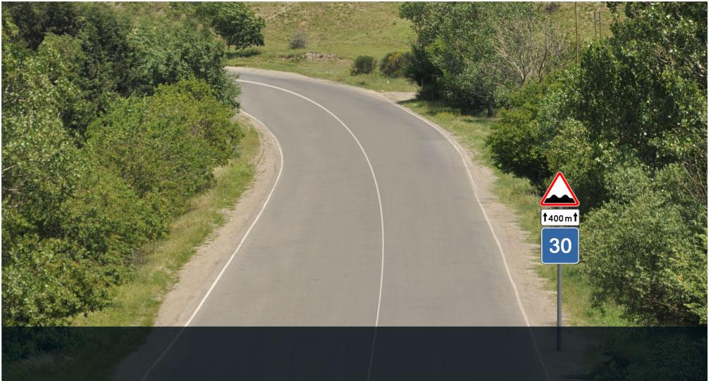
#3
„საგზაო მოძრაობის შესახებ" საქართველოს კანონის 29-ე მუხლის მე-2 პუნქტის „ა" და „ე" ქვეპუნქტების თანახმად, შუქნიშნის ფერად მაშუქ სიგნალებს აქვთ შემდეგი მნიშვნელობა: ა) წითელი მაშუქი სიგნალი ან წითელი მოციმციმე მაშუქი სიგნალი კრძალავს მოძრაობას; ე) მწვანე მაშუქი სიგნალი რთავს მოძრაობის ნებას.
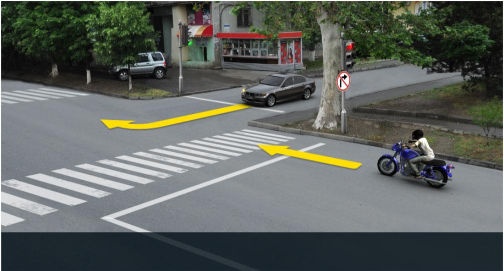
#8
„საგზაო მოძრაობის შესახებ" საქართველოს კანონის 36-ე მუხლის მე-3 პუნქტის „ბ" ქვეპუნქტის თანახმად, რეგულირებულ გზაჯვარედინზე, შუქნიშნის დამატებით სექციაში ძირითად ყვითელ ან წითელ მაშუქ სიგნალთან ერთად ჩართული ისრის მიმართულებით მოძრაობისას სატრანსპორტო საშუალების მძღოლი ვალდებულია გზა დაუთმოს სხვა მიმართულებიდან მოძრავ სატრანსპორტო საშუალებას.
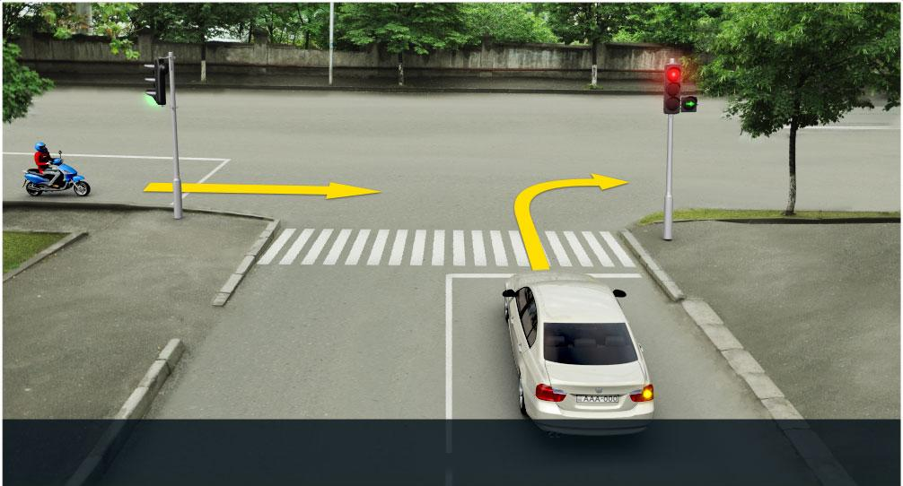
#108
„საგზაო მოძრაობის შესახებ" საქართველოს კანონის 36-ე მუხლის მე-3 პუნქტის „გ" ქვეპუნქტის თანახმად, რეგულირებულ გზაჯვარედინზე, თუ შუქნიშნის ან მარეგულირებლის სიგნალები ერთდროულად მოძრაობის ნებას რთავს რელსიან და ურელსო სატრანსპორტო საშუალებებს, რელსიან სატრანსპორტო საშუალებას აქვს უპირატესობა, მიუხედავად მისი მოძრაობის მიმართულებისა, მაგრამ შუქნიშნის დამატებით სექციაში ძირითად ყვითელ ან წითელ მაშუქ სიგნალთან ერთად ჩართული ისრის მიმართულებით მოძრაობისას რელსიანი სატრანსპორტო საშუალების მძღოლი ვალდებულია გზა დაუთმოს სხვა მიმართულებიდან მოძრავ სატრანსპორტო საშუალებას.
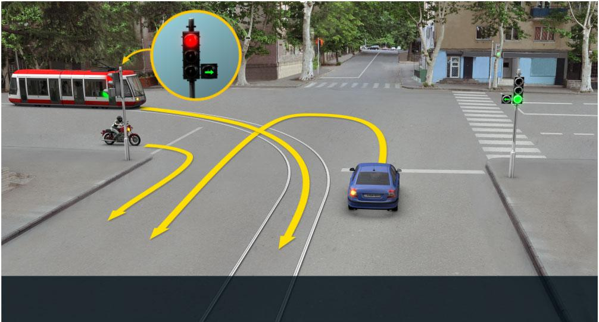
#142
„საგზაო მოძრაობის შესახებ" საქართველოს კანონის 29-ე მუხლის მე-4 პუნქტის ქვეპუნქტის თანახმად, სატრანსპორტო საშუალების მოძრაობის რეგულირებისათვის გზის სავალი ნაწილის ზოლებზე, სადაც მოძრაობის მიმართულება საპირისპიროდ იცვლება, გამოიყენება რევერსული შუქნიშანი წითელი X ნიშნის მაშუქი სიგნალითა და ქვემოთ მიმართული მწვანე ისრით. ეს სიგნალი და ისარი შესაბამისად იმ ზოლზე მოძრაობას კრძალავს ან იმ ზოლზე მოძრაობის ნებას რთავს, რომლის ზემოთაც ისინია განლაგებული. რევერსული შუქნიშნის ძირითად ფერად მაშუქ სიგნალებს შეიძლება დაემატოს დიაგონალურად ქვემოთ – მარჯვნივ ან მარცხნივ დახრილი ისრის მქონე ყვითელი ან თეთრი მაშუქი სიგნალი, რომლის ჩართვა იტყობინება ფერადი მაშუქი სიგნალის შემდგომი შეცვლისა და ისრით მითითებულ ზოლზე გადასვლის ვალდებულების შესახებ. ორივე მხრიდან 1.9 საგზაო მონიშვნით აღნიშნული ზოლის ზემოთ მდებარე გამორთული რევერსული შუქნიშანი კრძალავს ამ ზოლზე გასვლას.
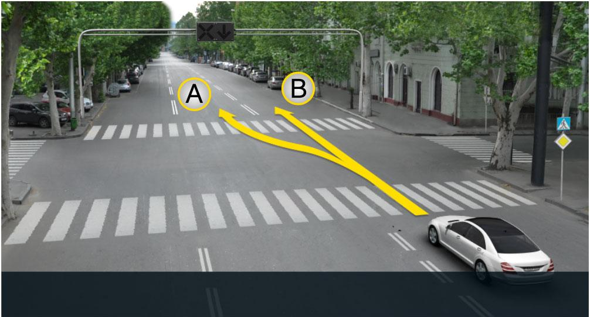
#148
„საგზაო მოძრაობის შესახებ" საქართველოს კანონის 29-ე მუხლის მე-2 პუნქტის „ე" ქვეპუნქტისა და მე-10 პუნქტის თანახმად: 2. შუქნიშნის მაშუქ სიგნალებს აქვთ შემდეგი მნიშვნელობა: ე) მწვანე მაშუქი სიგნალი რთავს მოძრაობის ნებას. 10. მწვანე, ყვითელ და წითელ მაშუქ სიგნალებს, რომლებზედაც გამოსახულია ისარი/ისრები, იგივე მნიშვნელობა აქვს, რაც შესაბამისი ფერის უისრო მაშუქ სიგნალებს, მაგრამ მათი მოქმედება ვრცელდება მხოლოდ ისრით/ისრებით მითითებული მიმართულებით/მიმართულებებით. ამასთანავე, ისარი, რომელიც მარცხნივ მოხვევის ნებას რთავს, მობრუნების უფლებასაც იძლევა, თუ ეს აკრძალული არ არის შესაბამისი საგზაო ნიშნით ან საგზაო მონიშვნით. იგივე მნიშვნელობა აქვს შუქნიშნის დამატებით სექციაში მწვანე მაშუქ სიგნალზე გამოსახულ ისარს. შუქნიშნის დამატებითი სექციის გამორთული მაშუქი სიგნალი იტყობინება, რომ ამ სექციით რეგულირებული მიმართულებით მოძრაობა აკრძალულია.
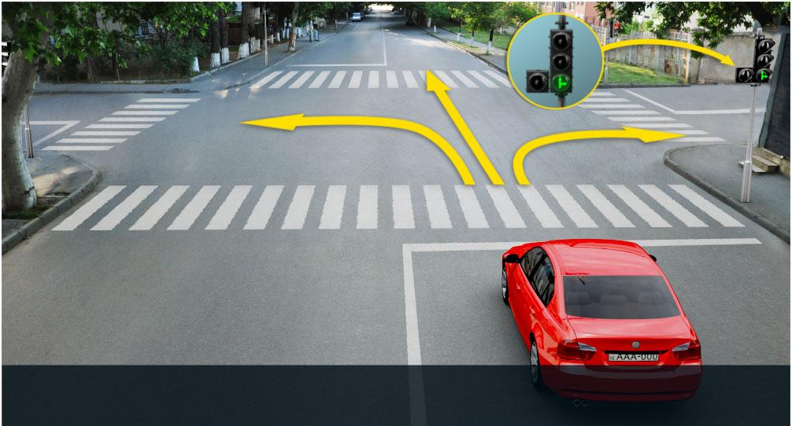
#150
„საგზაო მოძრაობის შესახებ" საქართველოს კანონის 25-ე მუხლის მე-2 პუნქტის „ა" ქვეპუნქტის თანახმად, ქვეითთა გადასასვლელზე ამ კანონის 21-ე მუხლის მე-6 პუნქტით, 33-ე მუხლის მე-2 პუნქტითა და 34-ე მუხლის მე-11 პუნქტით დადგენილ მოთხოვნათა დაცვით უნდა შესრულდეს შემდეგი მოთხოვნები: ა) თუ სატრანსპორტო საშუალებათა მოძრაობა საგზაო შუქნიშნით ან მარეგულირებლის მეშვეობით რეგულირდება, მოძრაობის ამკრძალავი სიგნალის დროს მძღოლი უნდა გაჩერდეს ქვეითთა გადასასვლელის წინ ან მის წინ მდებარე განივ მონიშვნასთან, ხოლო როცა მოძრაობის გაგრძელების უფლებას მიიღებს, არ უნდა დააბრკოლოს და საფრთხე არ უნდა შეუქმნას ქვეითთა გადასასვლელზე შესულ ქვეითებს. თუ მძღოლი ასრულებს მოხვევას სხვა გზაზე შესასვლელად, რომლის შესასვლელთანაც მდებარეობს ქვეითთა გადასასვლელი, მან ეს მოხვევა უნდა შეასრულოს მხოლოდ დაბალი სიჩქარით, ხოლო საჭიროების შემთხვევაში უნდა გაჩერდეს და გაატაროს გადასასვლელზე შესული ან შემავალი ქვეითები.
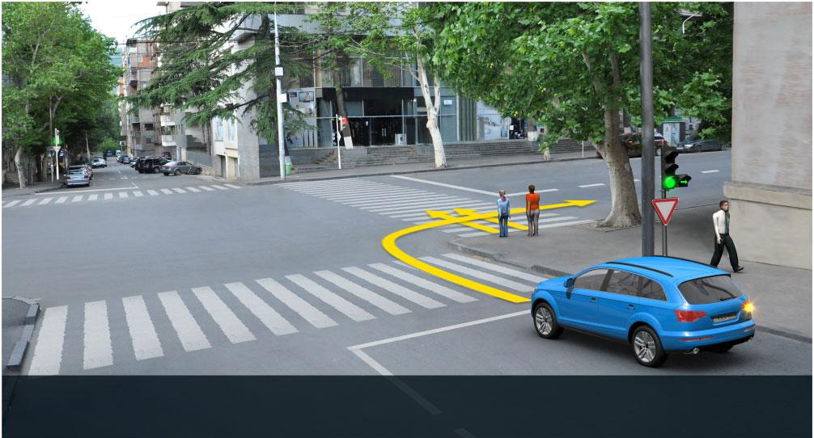
#151
„საგზაო მოძრაობის შესახებ" საქართველოს კანონის 29-ე მუხლის მე-2 პუნქტის „დ" ქვეპუნქტის თანახმად, ყვითელი მოციმციმე მაშუქი სიგნალი რთავს მოძრაობის ნებას და იტყობინება არარეგულირებული გზაჯვარედინის, ქვეითთა ან ველოსიპედისტთა გადასასვლელის არსებობის ან მოსალოდნელი საფრთხის შესახებ.
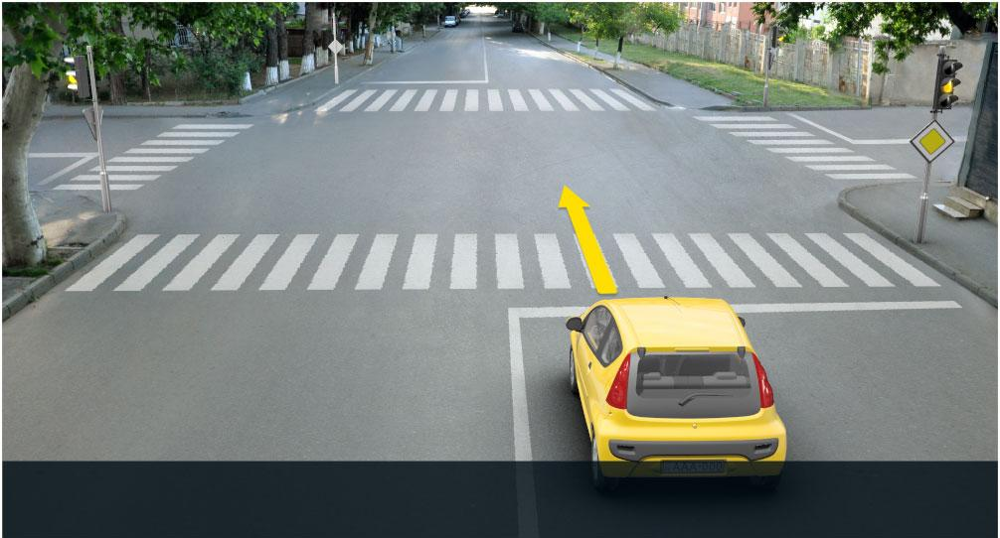
#153
„საგზაო მოძრაობის შესახებ" საქართველოს კანონის 29-ე მუხლის მე-2 პუნქტის „ბ" ქვეპუნქტის თანახმად, ერთობლივად ჩართული წითელი და ყვითელი მაშუქი სიგნალები კრძალავს მოძრაობას და იტყობინება მწვანე მაშუქი სიგნალის მოსალოდნელი ჩართვის შესახებ.
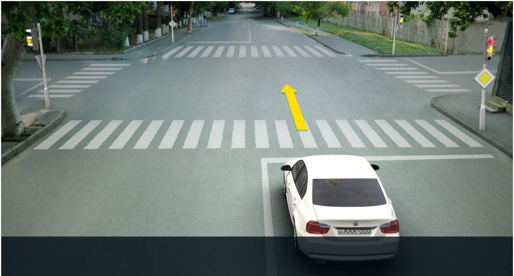
#157
„საგზაო მოძრაობის შესახებ" საქართველოს კანონის 29-ე მუხლის მე-10 პუნქტის თანახმად, მწვანე, ყვითელ და წითელ მაშუქ სიგნალებს, რომლებზედაც გამოსახულია ისარი/ისრები, იგივე მნიშვნელობა აქვს, რაც შესაბამისი ფერის უისრო მაშუქ სიგნალებს, მაგრამ მათი მოქმედება ვრცელდება მხოლოდ ისრით/ისრებით მითითებული მიმართულებით/მიმართულებებით. ამასთანავე, ისარი, რომელიც მარცხნივ მოხვევის ნებას რთავს, მობრუნების უფლებასაც იძლევა, თუ ეს აკრძალული არ არის შესაბამისი საგზაო ნიშნით ან საგზაო მონიშვნით. იგივე მნიშვნელობა აქვს შუქნიშნის დამატებით სექციაში მწვანე მაშუქ სიგნალზე გამოსახულ ისარს. შუქნიშნის დამატებითი სექციის გამორთული მაშუქი სიგნალი იტყობინება, რომ ამ სექციით რეგულირებული მიმართულებით მოძრაობა აკრძალულია.
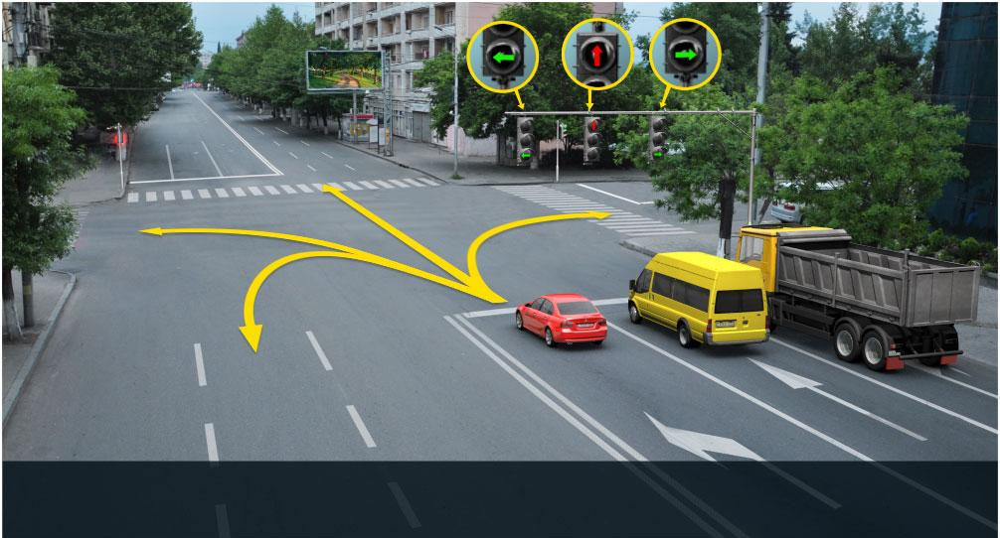
#167
„საგზაო მოძრაობის შესახებ" საქართველოს კანონის 29-ე მუხლის მე-10 პუნქტის თანახმად, მწვანე, ყვითელ და წითელ მაშუქ სიგნალებს, რომლებზედაც გამოსახულია ისარი/ისრები, იგივე მნიშვნელობა აქვს, რაც შესაბამისი ფერის უისრო მაშუქ სიგნალებს, მაგრამ მათი მოქმედება ვრცელდება მხოლოდ ისრით/ისრებით მითითებული მიმართულებით/მიმართულებებით. ამასთანავე, ისარი, რომელიც მარცხნივ მოხვევის ნებას რთავს, მობრუნების უფლებასაც იძლევა, თუ ეს აკრძალული არ არის შესაბამისი საგზაო ნიშნით ან საგზაო მონიშვნით. იგივე მნიშვნელობა აქვს შუქნიშნის დამატებით სექციაში მწვანე მაშუქ სიგნალზე გამოსახულ ისარს. შუქნიშნის დამატებითი სექციის გამორთული მაშუქი სიგნალი იტყობინება, რომ ამ სექციით რეგულირებული მიმართულებით მოძრაობა აკრძალულია.
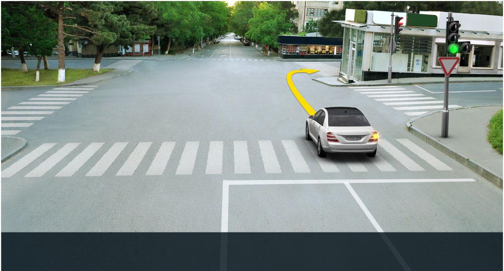
#168
„საგზაო მოძრაობის შესახებ" საქართველოს კანონის 36-ე მუხლის მე-3 პუნქტის „ე" ქვეპუნქტის თანახმად, შუქნიშნის ნებადამრთველ სიგნალზე გზაჯვარედინზე შესულ მძღოლს შეუძლია იმოძრაოს დასახული მიმართულებით, გზაჯვარედინიდან გასასვლელზე არსებული შუქნიშნის ამკრძალავი სიგნალების მიუხედავად, მაგრამ იმ პირობით, რომ ეს არ დააბრკოლებს სხვა საგზაო მოძრაობის მონაწილეთა იმ მიმართულებით მოძრაობას, რომელზედაც მოძრაობა გახსნილია. თუ გზაჯვარედინზე მისი მოძრაობისას გზაზე არსებული შუქნიშნების წინ „სდექ" ხაზებია (ან/და 7.16 საგზაო ნიშნებია), მძღოლმა უნდა იხელმძღვანელოს თითოეული შუქნიშნის სიგნალით.
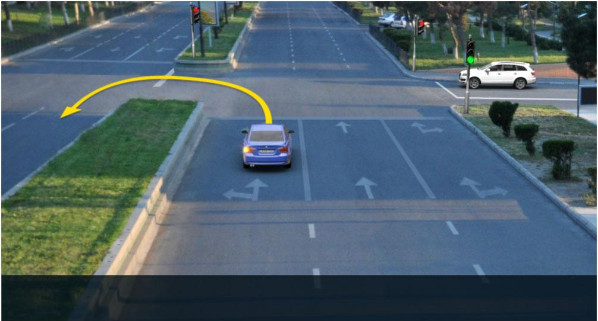
#169
„საგზაო მოძრაობის შესახებ" საქართველოს კანონის 36-ე მუხლის მე-3 პუნქტის „ე" ქვეპუნქტის თანახმად, შუქნიშნის ნებადამრთველ სიგნალზე გზაჯვარედინზე შესულ მძღოლს შეუძლია იმოძრაოს დასახული მიმართულებით, გზაჯვარედინიდან გასასვლელზე არსებული შუქნიშნის ამკრძალავი სიგნალების მიუხედავად, მაგრამ იმ პირობით, რომ ეს არ დააბრკოლებს სხვა საგზაო მოძრაობის მონაწილეთა იმ მიმართულებით მოძრაობას, რომელზედაც მოძრაობა გახსნილია. თუ გზაჯვარედინზე მისი მოძრაობისას გზაზე არსებული შუქნიშნების წინ „სდექ" ხაზებია (ან/და 7.16 საგზაო ნიშნებია), მძღოლმა უნდა იხელმძღვანელოს თითოეული შუქნიშნის სიგნალით.
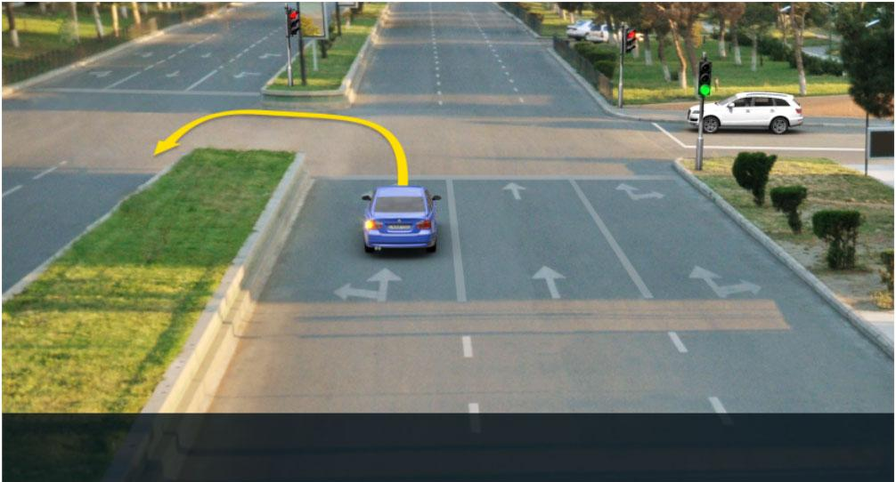
#176
„საგზაო მოძრაობის შესახებ" საქართველოს კანონის 29-ე მუხლის მე-12 პუნქტის თანახმად, საგზაო მოძრაობის მონაწილეები ვალდებული არიან, შეასრულონ შუქნიშნის ფერადი მაშუქი სიგნალის მოთხოვნები იმ შემთხვევაშიც კი, თუ ეს მოთხოვნები ეწინააღმდეგება გავლის უპირატესობის განმსაზღვრელი საგზაო ნიშნებისა და მონიშვნების მოთხოვნებს.
#177
„საგზაო მოძრაობის შესახებ" საქართველოს კანონის 29-ე მუხლის მე-12 პუნქტის თანახმად, საგზაო მოძრაობის მონაწილეები ვალდებული არიან, შეასრულონ შუქნიშნის ფერადი მაშუქი სიგნალის მოთხოვნები იმ შემთხვევაშიც კი, თუ ეს მოთხოვნები ეწინააღმდეგება გავლის უპირატესობის განმსაზღვრელი საგზაო ნიშნებისა და მონიშვნების მოთხოვნებს.
#186
„საგზაო მოძრაობის შესახებ" საქართველოს კანონის 29-ე მუხლის მე-14 პუნქტის თანახმად, მძღოლს, რომელსაც ყვითელი მაშუქი სიგნალის ჩართვის დროს მკვეთრად დამუხრუჭების გარეშე არ შეუძლია გაჩერდეს ამ მუხლის მე-13 პუნქტით განსაზღვრულ ადგილებში, უფლება აქვს, განაგრძოს მოძრაობა. ქვეითმა, რომელიც ამკრძალავი მაშუქი სიგნალის ჩართვის დროს გზის სავალ ნაწილზე იმყოფება, უნდა გაათავისუფლოს იგი, ხოლო თუ ეს შეუძლებელია − გაჩერდეს ურთიერთსაპირისპირო მიმართულებით მოძრავი სატრანსპორტო ნაკადების გამყოფ ხაზზე.
#1276
„საგზაო მოძრაობის შესახებ" საქართველოს კანონის 36-ე მუხლის მე-3 პუნქტის „ე" ქვეპუნქტის თანახმად, რეგულირებულ გზაჯვარედინზე შუქნიშნის ნებადამრთველ სიგნალზე გზაჯვარედინზე შესულ მძღოლს შეუძლია იმოძრაოს დასახული მიმართულებით, გზაჯვარედინიდან გასასვლელზე არსებული შუქნიშნის ამკრძალავი სიგნალების მიუხედავად, მაგრამ იმ პირობით, რომ ეს არ დააბრკოლებს სხვა საგზაო მოძრაობის მონაწილეთა იმ მიმართულებით მოძრაობას, რომელზედაც მოძრაობა გახსნილია. თუ გზაჯვარედინზე მისი მოძრაობისას გზაზე არსებული შუქნიშნების წინ „სდექ" ხაზებია (ან/და 7.16 საგზაო ნიშნებია), მძღოლმა უნდა იხელმძღვანელოს თითოეული შუქნიშნის სიგნალით.
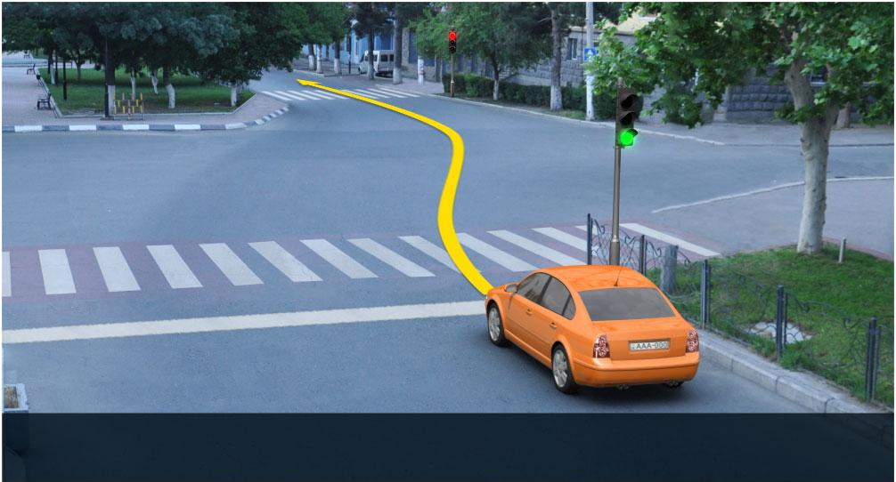
#1278
„საგზაო მოძრაობის შესახებ" საქართველოს კანონის 36-ე მუხლის მე-3 პუნქტის „ე" ქვეპუნქტის თანახმად, რეგულირებულ გზაჯვარედინზე შუქნიშნის ნებადამრთველ სიგნალზე გზაჯვარედინზე შესულ მძღოლს შეუძლია იმოძრაოს დასახული მიმართულებით, გზაჯვარედინიდან გასასვლელზე არსებული შუქნიშნის ამკრძალავი სიგნალების მიუხედავად, მაგრამ იმ პირობით, რომ ეს არ დააბრკოლებს სხვა საგზაო მოძრაობის მონაწილეთა იმ მიმართულებით მოძრაობას, რომელზედაც მოძრაობა გახსნილია. თუ გზაჯვარედინზე მისი მოძრაობისას გზაზე არსებული შუქნიშნების წინ „სდექ" ხაზებია (ან/და 7.16 საგზაო ნიშნებია), მძღოლმა უნდა იხელმძღვანელოს თითოეული შუქნიშნის სიგნალით.
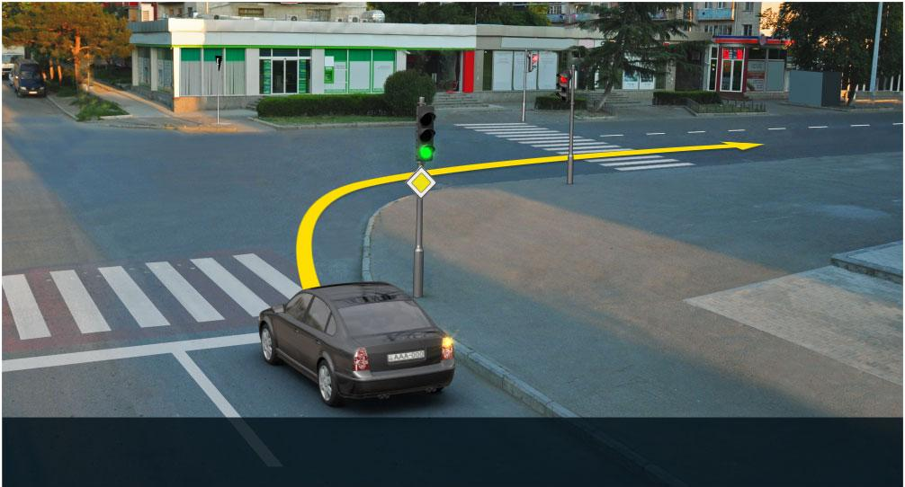
#1649
თუ მძღოლი უახლოვდება შუქნიშანს, რომელზეც მოძრაობის ნებადამრთველი მაშუქი სიგნალი უკვე დიდი ხნის განმავლობაშია ჩართული, მან უნდა გააგრძელოს მოძრაობა, ისე, რომ მზად იყოს სატრანსპორტო საშუალების ნებისმიერ მომენტში უსაფრთხოდ გასაჩერებლად.
#33
„საგზაო მოძრაობის შესახებ“ საქართველოს კანონის 30-ე მუხლის მე-5 პუნქტის „გ“ ქვეპუნქტის თანახმად, მარეგულირებლის სიგნალებს აქვთ შემდეგი მნიშვნელობა: გ) წინ გაშვერილი მარჯვენა ხელი − ეს ჟესტი ნიშნავს „სდექ“ სიგნალს მარეგულირებლის მარჯვენა გვერდისა და ზურგის მხრიდან მოძრავი ყველა მძღოლისათვის; ამასთანავე, მარეგულირებლის მარცხენა გვერდის მხრიდან ტრამვაის უფლება აქვს, იმოძრაოს მარცხნივ, ხოლო ურელსო სატრანსპორტო საშუალებას უფლება აქვს, იმოძრაოს ყველა მიმართულებით. მარეგულირებლის მკერდის მხრიდან ყველა სატრანსპორტო საშუალებას უფლება აქვს, იმოძრაოს მხოლოდ მარჯვნივ. ქვეითს უფლება აქვს, გადავიდეს სავალ ნაწილზე მარეგულირებლის ზურგის უკან.
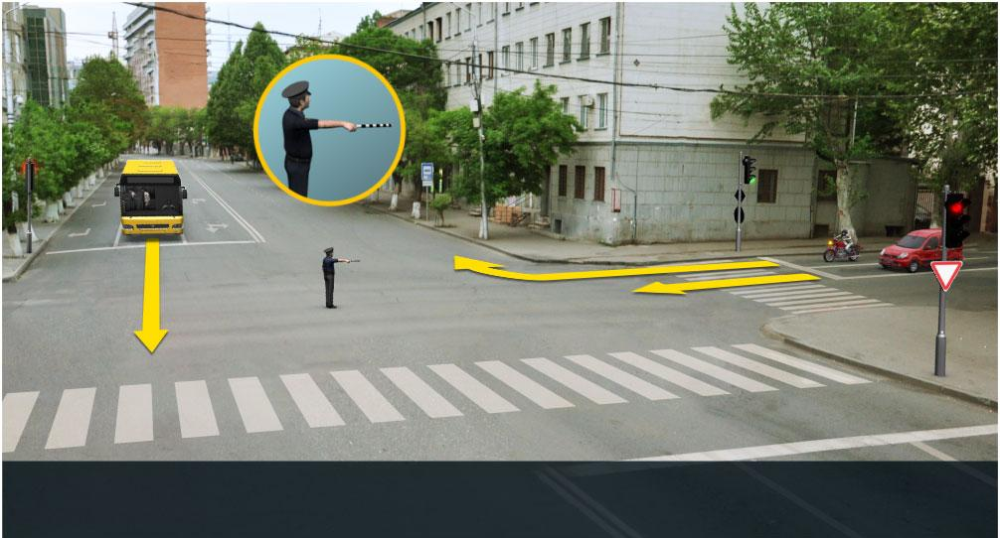
#38
„საგზაო მოძრაობის შესახებ“ საქართველოს კანონის 30-ე მუხლის მე-5 პუნქტის „გ“ ქვეპუნქტის თანახმად, მარეგულირებლის სიგნალებს აქვთ შემდეგი მნიშვნელობა: გ) წინ გაშვერილი მარჯვენა ხელი − ეს ჟესტი ნიშნავს „სდექ“ სიგნალს მარეგულირებლის მარჯვენა გვერდისა და ზურგის მხრიდან მოძრავი ყველა მძღოლისათვის; ამასთანავე, მარეგულირებლის მარცხენა გვერდის მხრიდან ტრამვაის უფლება აქვს, იმოძრაოს მარცხნივ, ხოლო ურელსო სატრანსპორტო საშუალებას უფლება აქვს, იმოძრაოს ყველა მიმართულებით. მარეგულირებლის მკერდის მხრიდან ყველა სატრანსპორტო საშუალებას უფლება აქვს, იმოძრაოს მხოლოდ მარჯვნივ. ქვეითს უფლება აქვს, გადავიდეს სავალ ნაწილზე მარეგულირებლის ზურგის უკან.
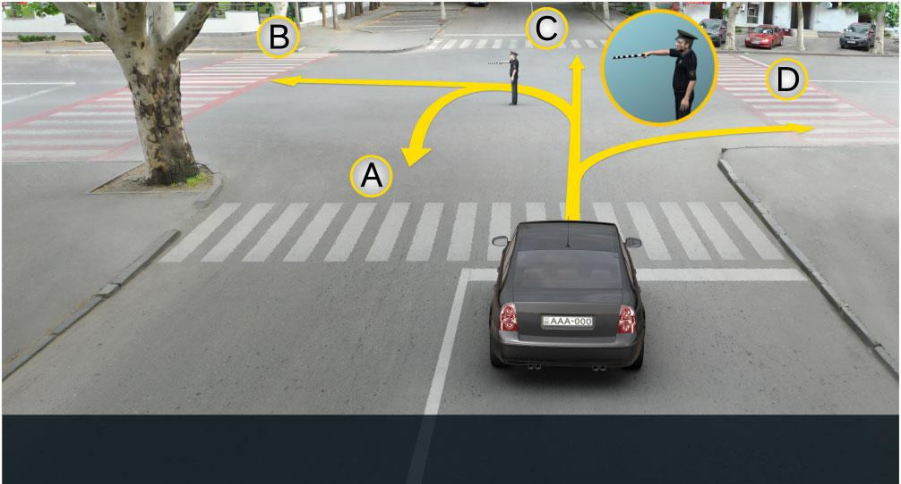
#44
„საგზაო მოძრაობის შესახებ“ საქართველოს კანონის 30-ე მუხლის მე-5 პუნქტის „ბ“ ქვეპუნქტის თანახმად, მარეგულირებლის სიგნალებს აქვთ შემდეგი მნიშვნელობა: ბ) განზე გაშვერილი ან ჩამოშვებული ხელები − ეს ჟესტი ნიშნავს „სდექ“ სიგნალს იმ საგზაო მოძრაობის მონაწილეებისათვის, რომლებიც, მათი მოძრაობის მიმართულების მიუხედავად, მოძრაობენ იმ მიმართულებით, რომელიც კვეთს მარეგულირებლის გაწვდილი ხელით ან ხელებით მინიშნებულ მიმართულებას; ამასთანავე, მარეგულირებლის მარჯვენა და მარცხენა გვერდების მხრიდან ტრამვაის უფლება აქვს, იმოძრაოს პირდაპირ, ურელსო სატრანსპორტო საშუალებას უფლება აქვს, იმოძრაოს პირდა¬პირ და მარჯვნივ, ხოლო ქვეითს უფლება აქვს, გადავიდეს გზის სავალ ნაწილზე.
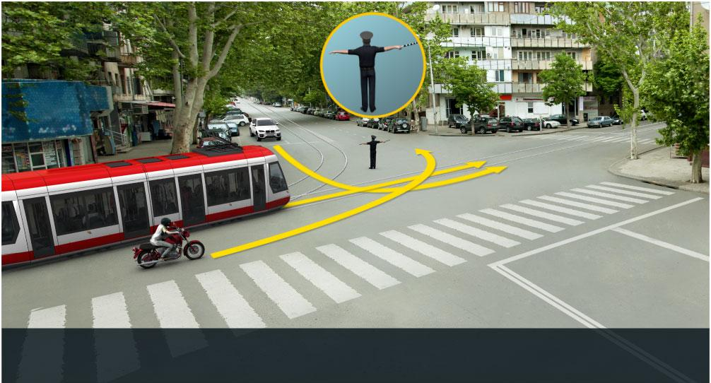
#200
„საგზაო მოძრაობის შესახებ“ საქართველოს კანონის 30-ე მუხლის მე-5 პუნქტის „ა“ ქვეპუნქტის თანახმად, მარეგულირებლის სიგნალებს აქვთ შემდეგი მნიშვნელობა - ზემოთ აწეული ერთი ხელი − ეს ჟესტი ყველა საგზაო მოძრაობის მონაწილისათვის ნიშნავს „ყურადღება, სდექ“ სიგნალს, გარდა იმ მძღოლებისა, რომლებიც უკვე ვეღარ შეძლებენ გაჩერებას მკვეთრი დამუხრუჭებისა და საკმაო უსაფრთხოების პირობების დაცვით. გარდა ამისა, თუ ეს სიგნალი მიცემულია გზაჯვარედინზე, მძღოლს, რომელიც უკვე შესულია გზაჯვარედინზე, შეუძლია განაგრძოს მოძრაობა. ქვეითმა, რომელიც სიგნალის მიცემისას გზის სავალ ნაწილზე იმყოფება, უნდა გაათავისუფლოს იგი, ხოლო თუ ეს შეუძლებელია − უნდა გაჩერდეს ურთიერთსაპირისპირო მიმართულებით მოძრავი სატრანსპორტო ნაკადების გამყოფ ხაზზე.
#205
„საგზაო მოძრაობის შესახებ“ საქართველოს კანონის 30-ე მუხლის მე-5 პუნქტის „ბ“ ქვეპუნქტის თანახმად, მარეგულირებლის სიგნალებს აქვთ შემდეგი მნიშვნელობა - განზე გაშვერილი ან ჩამოშვებული ხელები - ეს ჟესტი ნიშნავს „სდექ“ სიგნალს იმ საგზაო მოძრაობის მონაწილეებისათვის, რომლებიც, მათი მოძრაობის მიმართულების მიუხედავად, მოძრაობენ იმ მიმართულებით, რომელიც კვეთს მარეგულირებლის გაწვდილი ხელით ან ხელებით მინიშნებულ მიმართულებას; ამასთანავე, მარეგულირებლის მარჯვენა და მარცხენა გვერდების მხრიდან ტრამვაის უფლება აქვს, იმოძრაოს პირდაპირ, ურელსო სატრანსპორტო საშუალებას უფლება აქვს, იმოძრაოს პირდაპირ და მარჯვნივ, ხოლო ქვეითს უფლება აქვს, გადავიდეს გზის სავალ ნაწილზე.
#206
„საგზაო მოძრაობის შესახებ“ საქართველოს კანონის 30-ე მუხლის მე-5 პუნქტის „ბ“ ქვეპუნქტის თანახმად, მარეგულირებლის სიგნალებს აქვთ შემდეგი მნიშვნელობა - განზე გაშვერილი ან ჩამოშვებული ხელები - ეს ჟესტი ნიშნავს „სდექ“ სიგნალს იმ საგზაო მოძრაობის მონაწილეებისათვის, რომლებიც, მათი მოძრაობის მიმართულების მიუხედავად, მოძრაობენ იმ მიმართულებით, რომელიც კვეთს მარეგულირებლის გაწვდილი ხელით ან ხელებით მინიშნებულ მიმართულებას; ამასთანავე, მარეგულირებლის მარჯვენა და მარცხენა გვერდების მხრიდან ტრამვაის უფლება აქვს, იმოძრაოს პირდაპირ, ურელსო სატრანსპორტო საშუალებას უფლება აქვს, იმოძრაოს პირდაპირ და მარჯვნივ, ხოლო ქვეითს უფლება აქვს, გადავიდეს გზის სავალ ნაწილზე; ამავე კანონის 32-ე მუხლის მე-5 პუნქტის თანახმად, გარდა იმ შემთხვევისა, როცა მოხვევა სრულდება გზაჯვარედინზე გასასვლელად, სადაც წრიული მოძრაობაა ორგანიზებული, მარჯვნივ ან მარცხნივ მოხვევის წინ, აგრეთვე მობრუნების წინ სატრანსპორტო საშუალების მძღოლი ვალდებულია დროულად დაიკავოს შესაბამისი განაპირა მდებარეობა სავალ ნაწილზე, რომელიც თანმხვედრი მიმართულებით მოძრაობისთვისაა განკუთვნილი.
#209
„საგზაო მოძრაობის შესახებ“ საქართველოს კანონის 30-ე მუხლის მე-5 პუნქტის „გ“ ქვეპუნქტის თანახმად, მარეგულირებლის სიგნალებს აქვთ შემდეგი მნიშვნელობა - წინ გაშვერილი მარჯვენა ხელი - ეს ჟესტი ნიშნავს „სდექ“ სიგნალს მარეგულირებლის მარჯვენა გვერდისა და ზურგის მხრიდან მოძრავი ყველა მძღოლისათვის; ამასთანავე, მარეგულირებლის მარცხენა გვერდის მხრიდან ტრამვაის უფლება აქვს, იმოძრაოს მარცხნივ, ხოლო ურელსო სატრანსპორტო საშუალებას უფლება აქვს, იმოძრა ოს ყველა მიმართულებით. მარეგულირებლის მკერდის მხრიდან ყველა სატრანსპორტო საშუალებას უფლება აქვს, იმოძრაოს მხოლოდ მარჯვნივ. ქვეითს უფლება აქვს, გადავი დეს სავალ ნაწილზე მარეგუ¬ლირებლის ზურგის უკან.
#216
„საგზაო მოძრაობის შესახებ“ საქართველოს კანონის 30-ე მუხლის მე-8 პუნქტის თანახმად, თუ მარეგულირებელი სატრანსპორტო საშუალების გაჩერების შესახებ მოთხოვნას გადასცემს ხმამაღლამოლაპარაკე მოწყობილობით ან სატრანსპორტო საშუალებისაკენ მიმართული ჟესტიკულაციით, მძღოლი უნდა გაჩერდეს მარეგულირებლის მიერ მითითებულ ადგილზე.
#217
„საგზაო მოძრაობის შესახებ“ საქართველოს კანონის 30-ე მუხლის მე-9 პუნქტის თანახმად, მარეგულირებელი სიგნალს აძლევს: ა) შავი და თეთრი ზოლების მქონე ხელკეტით; ბ) შუქამრეკლი წითელი დისკით; გ) დისკით, რომელზედაც გამოსახულია საგზაო ნიშანი „მოძრაობა აკრძალულია“; დ) ხელით; ე) წითელი ან ყვითელი ალმით; ვ) წითელი სინათლის მოძრაობით.
#427
„საგზაო მოძრაობის შესახებ“ საქართველოს კანონის 39-ე მუხლის მე-4 პუნქტის თანახმად, რკინიგზის გადასასვლელზე მოძრაობის ამკრძალავი სიგნალის მიცემისას მარეგულირებელი დგას მძღოლის მიმართ მკერდით ან ზურგშექცევით, თავის ზემოთ აწეული კვერთხით, წითელი ფარნით ან ალმით ან განზე გაწეული ხელებით. ამავე მუხლის პირველი პუნქტის “გ“ ქვეპუნქტის თანახმად, მარეგულირებლის ან შუქნიშნის ამკრძალავი სიგნალის დროს არცერთი საგზაო მოძრაობის მონაწილე არ უნდა შევიდეს რკინიგზის გადასასვლელზე, მიუხედავად შლაგბაუმის ან ნახევარშლაგბაუმის მდგომარეობისა ან მისი არსებობისა. ამავე მუხლის მე-3 პუნქტის თანახმად თუ რკინიგზის გადასასვლელზე მოძრაობა აკრძალულია, მძღოლი ჩერდება „სდექ“ ხაზთან, 2.4 საგზაო ნიშანთან ან შუქნიშანთან, ხოლო მათი არარსებობისას – შლაგბაუმიდან ან ნახევარშლაგბაუმიდან არანაკლებ 5 მეტრისა. თუ არ არის არც შლაგბაუმი და არც ნახევარშლაგბაუმი, მძღოლი უნდა გაჩერდეს უახლოეს რელსამდე არანაკლებ 10 მეტრისა.
#428
„საგზაო მოძრაობის შესახებ“ საქართველოს კანონის 39-ე მუხლის მე-4 პუნქტის თანახმად, რკინიგზის გადასასვლელზე მოძრაობის ამკრძალავი სიგნალის მიცემისას მარეგულირებელი დგას მძღოლის მიმართ მკერდით ან ზურგშექცევით, თავის ზემოთ აწეული კვერთხით, წითელი ფარნით ან ალმით ან განზე გაწეული ხელებით. ამავე მუხლის პირველი პუნქტის “გ“ ქვეპუნქტის თანახმად, მარეგულირებლის ან შუქნიშნის ამკრძალავი სიგნალის დროს არცერთი საგზაო მოძრაობის მონაწილე არ უნდა შევიდეს რკინიგზის გადასასვლელზე, მიუხედავად შლაგბაუმის ან ნახევარშლაგბაუმის მდგომარეობისა ან მისი არსებობისა. ამავე მუხლის მე-3 პუნქტის თანახმად თუ რკინიგზის გადასასვლელზე მოძრაობა აკრძალულია, მძღოლი ჩერდება „სდექ“ ხაზთან, 2.4 საგზაო ნიშანთან ან შუქნიშანთან, ხოლო მათი არარსებობისას – შლაგბაუმიდან ან ნახევარშლაგბაუმიდან არანაკლებ 5 მეტრისა. თუ არ არის არც შლაგბაუმი და არც ნახევარშლაგბაუმი, მძღოლი უნდა გაჩერდეს უახლოეს რელსამდე არანაკლებ 10 მეტრისა.
#875
„საგზაო მოძრაობის შესახებ“ საქართველოს კანონის 25-ე მუხლის მე-2 პუნქტის „ა“ ქვეპუნქტის თანახმად, ქვეითთა გადასასვლელზე ამ კანონის 21-ე მუხლის მე-6 პუნქტით, 33-ე მუხლის მე-2 პუნქტითა და 34-ე მუხლის მე-11 პუნქტით დადგენილ მოთხოვნათა დაცვით უნდა შესრულდეს შემდეგი მოთხოვნები: ა) თუ სატრანსპორტო საშუალებათა მოძრაობა საგზაო შუქნიშნით ან მარეგულირებლის მეშვეობით რეგულირდება, მოძრაობის ამკრძალავი სიგნალის დროს მძღოლი უნდა გაჩერდეს ქვეითთა გადასასვლელის წინ ან მის წინ მდებარე განივ მონიშვნასთან.
#955
„საგზაო მოძრაობის შესახებ“ საქართველოს კანონის 36-ე მუხლის მე-3 პუნქტის „დ“ ქვეპუნქტის თანახმად, რეგულირებულ გზაჯვარედინზე, თუ მარეგულირებლის სიგნალი ერთდროულად მოძრაობის ნებას რთავს ურთიერთგადამკვეთი ტრაექტორიებით მოძრავ ურელსო სატრანსპორტო საშუალებებს, მძღოლებმა უნდა იხელმძღვანელონ არარეგულირებული გზაჯვარედინის გავლის წესებითა და გზაჯვარედინზე დაყენებული პრიორიტეტის ნიშნებით.
#1282
„საგზაო მოძრაობის შესახებ“ საქართველოს კანონის 28-ე მუხლის მე-2 პუნქტის თანახმად, მარეგულირებლის სიგნალებს აქვს უპირატესი ძალა შუქნიშნის მაშუქი სიგნალების, საგზაო ნიშნებისა და საგზაო მონიშვნების მოთხოვნების და საგზაო მოძრაობის წესების მოთხოვნების მიმართ. გზაჯვარედინზე მარეგულირებლის მიერ მოძრაობის რეგულირებისას ამკრძალავი და მიმთითებელი საგზაო ნიშნები აგრძელებს მოქმედებას, გარდა იმ შემთხვევისა, როდესაც მარეგულირებელი კონკრეტულად მიუთითებს მათი მოთხოვნების უგულებელყოფაზე.
#161
„საგზაო მოძრაობის შესახებ“ საქართველოს კანონის 29-ე მუხლის მე-2 პუნქტის „ბ“ ქვეპუნქტის თანახმად, ერთობლივად ჩართული წითელი და ყვითელი მაშუქი სიგნალები კრძალავს მოძრაობას და იტყობინება მწვანე მაშუქი სიგნალის მოსალოდნელი ჩართვის შესახებ.
#1005
„საგზაო მოძრაობის შესახებ“ საქართველოს კანონის 51-ე მუხლის მე-2 პუნქტის თანახმად, საგზაო მოძრაობის მონაწილეები ვალდებული არიან, ოპერატიული ან სპეციალური სამსახურის სატრანსპორტო საშუალების მოახლოებისას, რომელსაც ჩართული აქვს ლურჯი მოელვარე სპეციალური ციმციმა სიგნალი და ხმოვანი სიგნალი ან/და რომელიც ხმამაღლამოლაპარაკე ხელსაწყოთი იძლევა სიგნალს, მას, აგრეთვე მის მიერ გასაცილებელ სატრანსპორტო საშუალებას, რომელსაც ჩართული აქვს ახლო განათების ფარები, გაუთავისუფლონ სავალ ნაწილზე ადგილი, ხოლო აუცილებლობის შემთხვევაში − გაჩერდნენ.
#1006
„საგზაო მოძრაობის შესახებ“ საქართველოს კანონის 51-ე მუხლის მე-3 პუნქტის თანახმად, ჩართული ლურჯი მოელვარე სპეციალური ციმციმა სიგნალით მდგომ სატრანსპორტო საშუალებასთან მიახლოებისას მძღოლმა უნდა შეანელოს სიჩქარე, რათა აუცილებლობის შემთხვევაში შეძლოს ტრანსპორტის დაუყოვნებლივ გაჩერება.
#1008
„საგზაო მოძრაობის შესახებ“ საქართველოს კანონის 51-ე მუხლის მე-4 პუნქტის თანახმად, მძღოლს, რომელსაც სატრანსპორტო საშუალებაზე ჩართული აქვს ნარინჯისფერი ან ყვითელი მოელვარე სპეციალური ციმციმა სიგნალი და რომელიც გზაზე ასრულებს სამშენებლო, სარემონტო ან დასასუფთავებელ სამუშაოებს, ან საინკასაციო სატრანსპორტო საშუალებით გადააქვს ძვირფასეულობა ან ფასიანი ქაღალდები, ან გადააქვს სახიფათო ტვირთი, ან გადაადგილდება არაგაბარიტული (მსხვილგაბარიტიანი) ან ზენორმატიული (მძიმეწონიანი) სატრანსპორტო საშუალებით, შეუძლია გადაუხვიოს საგზაო ნიშნებისა და მონიშვნების, აგრეთვე ამ კანონის 31-ე მუხლის მე-5–მე-10, მე-15 და მე-16 პუნქტებითა და 38-ე მუხლის პირველი პუნქტით დადგენილ მოთხოვნებს, თუ უზრუნველყოფს საგზაო მოძრაობის უსაფრთხოებას. ნარინჯისფერი ან ყვითელი მოელვარე სპეციალური ციმციმა სიგნალი არ იძლევა უპირატესობას საგზაო მოძრაობის სხვა მონაწილეების მიმართ და გამოიყენება ყურადღების მისაპყრობად მოსალოდნელი საშიშროების თავიდან აცილებისათვის.
#1018
„საგზაო მოძრაობის შესახებ“ საქართველოს კანონის 51-ე მუხლის მე-2 პუნქტის თანახმად, საგზაო მოძრაობის მონაწილეები ვალდებული არიან, ოპერატიული ან სპეციალური სამსახურის სატრანსპორტო საშუალების მოახლოებისას, რომელსაც ჩართული აქვს ლურჯი მოელვარე სპეციალური ციმციმა სიგნალი და ხმოვანი სიგნალი ან/და რომელიც ხმამაღლამოლაპარაკე ხელსაწყოთი იძლევა სიგნალს, მას, აგრეთვე მის მიერ გასაცილებელ სატრანსპორტო საშუალებას, რომელსაც ჩართული აქვს ახლო განათების ფარები, გაუთავისუფლონ სავალ ნაწილზე ადგილი, ხოლო აუცილებლობის შემთხვევაში − გაჩერდნენ. ამავე კანონის 36-ე მუხლის მე-3 პუნქტის „ა“ ქვეპუნქტის თანახმად, რეგულირებულ გზაჯვარედინზე, შუქნიშნის მწვანე სიგნალის ჩართვის დროს მარცხნივ მოხვევისას ან მობრუნებისას ურელსო სატრანსპორტო საშუალების მძღოლი ვალდებულია გზა დაუთმოს საპირისპირო მიმართულებიდან პირდაპირ ან მარჯვნივ მოძრავ სატრანსპორტო საშუალებას.
#356
„საგზაო მოძრაობის შესახებ“ საქართველოს კანონის მე-5 მუხლის მე-26 პუნქტის თანახმად იძულებით გაჩერება არის სატრანსპორტო საშუალების მოძრაობის შეწყვეტა მისი ტექნიკური გაუმართაობის, გადასაზიდი ტვირთის, მძღოლის (მგზავრის) მდგომარეობის ან გზაზე მოულოდნელად შექმნილი დაბრკოლებით განპირობებული საფრთხის გამო.
#964
„საგზაო მოძრაობის შესახებ“ საქართველოს კანონის 36-ე მუხლის მე-5 პუნქტის თანახმად, მძღოლი არ უნდა გავიდეს გზაჯვარედინზე, თუ შექმნილია ისეთი ხერგილი, რომ იგი, სავარაუდოდ, იძულებული გახდება, გაჩერდეს გზაჯვარედინზე და ამით დააბრკოლოს განივი მიმართულებით მოძრაობა. ეს წესი მოქმედებს მაშინაც, თუ შუქნიშნის მაშუქი სიგნალები იძლევა მოძრაობის უფლებას.
#1040
„საგზაო მოძრაობის შესახებ“ საქართველოს კანონის 52-ე მუხლის მე-2, პუნქტის „ბ“ ქვეპუნქტისა და მე-3 და მე-4 პუნქტების თანახმად: 2. საავარიო შუქსიგნალიზაციის ჩართვის შემდეგ, აგრეთვე თუ ასეთი სიგნალიზაცია არ არსებობს ან მწყობრიდანაა გამოსული, მძღოლმა დაუყოვნებლივ უნდა დადგას „საავარიო გაჩერების ნიშანი“, ხოლო არასაკმარისი ხილვადობის პირობებში − მოციმციმე წითელი ფარანი: ბ) იმ ადგილას იძულებით გაჩერების დროს, სადაც გაჩერება აკრძალულია, და იქ, სადაც, ხილვადობის პირობების გათვალისწინებით, სხვა მძღოლები ვერ შეძლებენ სატრანსპორტო საშუალების დროულად შემჩნევას. 3. „საავარიო გაჩერების ნიშანი“ და მოციმციმე წითელი ფარანი უნდა დაიდგას სატრანსპორტო საშუალებიდან იმ მანძილზე, რომელიც კონკრეტულ პირობებში უზრუნველყოფს საშიშროების შესახებ სხვა მძღოლების დროულ გაფრთხილებას, მაგრამ ეს მანძილი დასახლებულ პუნქტში არ უნდა იყოს 15 მეტრზე ნაკლები, ხოლო დაუსახლებელ პუნქტში − 30 მეტრზე ნაკლები.
#306
„საგზაო მოძრაობის შესახებ“ საქართველოს კანონის 25-ე მუხლის მე-5 პუნქტის თანახმად, იმ სატრანსპორტო საშუალების მძღოლი, რომელსაც ამ კანონით განსაზღვრულ შემთხვევებში უფლება აქვს შევიდეს ქვეითთა მოძრაობისათვის განკუთვნილ ადგილებში, ვალდებულია გამოიჩინოს მაქსიმალური სიფრთხილე და იმოძრაოს დაბალი სიჩქარით, რათა აუცილებლობის შემთხვევაში გაჩერდეს.
#410
„საგზაო მოძრაობის შესახებ“ საქართველოს კანონის 32-ე მუხლის მე-2 პუნქტის თანახმად, მოხვევის შუქ-მაჩვენებლით ან ხელით სიგნალის მიცემა მძღოლს არ აძლევს უპირატესობას და არ ათავისუფლებს სიფრთხილის აუცილებელი ზომების მიღების ვალდებულებისაგან.
#411
„საგზაო მოძრაობის შესახებ“ საქართველოს კანონის 32-ე მუხლის მე-2 პუნქტის თანახმად, მოხვევის შუქ-მაჩვენებლით ან ხელით სიგნალი მიცემული უნდა იქნეს დროულად, მანევრის დაწყების წინ და უნდა შეწყდეს დაუყოვნებლივ, მისი დასრულებისთანავე (სიგნალის ხელით მიცემა შეიძლება შეწყდეს უშუალოდ მანევრის დაწყების წინ). ამასთანავე, სიგნალმა არ უნდა შეაცდინოს სხვა საგზაო მოძრაობის მონაწილეები.
#821
„საგზაო მოძრაობის შესახებ“ საქართველოს კანონის 21-ე მუხლის მე-6 პუნქტის თანახმად, მძღოლმა განსაკუთრებული სიფრთხილე უნდა გამოიჩინოს საგზაო მოძრაობის ისეთი მ ონაწილეების მიმართ, როგორებიც არიან ქვეითები (განსაკუთრებით ბავშვები, ხანდაზმულები, შეზღუდული შესაძლებლობის მქონე პირები) და ველოსიპედისტები.
#830
„საგზაო მოძრაობის შესახებ“ საქართველოს კანონის 25-ე მუხლის მე-10 პუნქტის „ა“ ქვეპუნქტის თანახმად, გზაზე მოძრაობისას მძღოლმა უნდა გაითვალისწინოს შემდეგი გარემოებები - არასაკმარისი ან შეზღუდული ხილვადობის პირობებში მძღოლმა უნდა შეამციროს სიჩქარე და გაზარდოს დისტანცია თავის სატრანსპორტო საშუალებასა და მის წინ მიმავალ სატრანსპორტო საშუალებას შორის.
#929
„საგზაო მოძრაობის შესახებ“ საქართველოს კანონის 32-ე მუხლის მე-2 პუნქტის თანახმად, მოხვევის შუქ-მაჩვენებლით ან ხელით სიგნალი მიცემული უნდა იქნეს დროულად, მანევრის დაწყების წინ და უნდა შეწყდეს დაუყოვნებლივ, მისი დასრულებისთანავე (სიგნალის ხელით მიცემა შეიძლება შეწყდეს უშუალოდ მანევრის დაწყების წინ). ამასთანავე, სიგნალმა არ უნდა შეაცდინოს სხვა საგზაო მოძრაობის მონაწილეები. მოხვევის შუქ-მაჩვენებლით ან ხელით სიგნალის მიცემა მძღოლს არ აძლევს უპირატესობას და არ ათავისუფლებს სიფრთხილის აუცილებელი ზომების მიღების ვალდებულებისაგან.
#931
„საგზაო მოძრაობის შესახებ“ საქართველოს კანონის 48-ე მუხლის მე-3 პუნქტის თანახმად, დასახლებულ პუნქტში გასწრების განზრახვის შესახებ სხვა სატრანსპორტო საშუალების მძღოლის გასაფრთხილებლად შეიძლება ჩაირთოს მანათობელი სიგნალი დღე-ღამის ნათელ დროს ფარების შუქის პერიოდული, ხანმოკლე ჩართვა-გამორთვით, ხოლო დღე-ღამის ბნელ დროს – ფარების ახლო შუქის შორ შუქზე მრავალჯერადი გადართვით, დაუსახლებელ პუნქტში კი − ხმოვანი სიგნალის ნაცვლად ან მასთან ერთად.
#932
„საგზაო მოძრაობის შესახებ“ საქართველოს კანონის 48-ე მუხლის მე-3 პუნქტის თანახმად, დასახლებულ პუნქტში გასწრების განზრახვის შესახებ სხვა სატრანსპორტო საშუალების მძღოლის გასაფრთხილებლად შეიძლება ჩაირთოს მანათობელი სიგნალი დღე-ღამის ნათელ დროს ფარების შუქის პერიოდული, ხანმოკლე ჩართვა-გამორთვით, ხოლო დღე-ღამის ბნელ დროს – ფარების ახლო შუქის შორ შუქზე მრავალჯერადი გადართვით, დაუსახლებელ პუნქტში კი − ხმოვანი სიგნალის ნაცვლად ან მასთან ერთად.
#934
„საგზაო მოძრაობის შესახებ“ საქართველოს კანონის 32-ე მუხლის მე-2 პუნქტის თანახმად, მანევრის დაწყებამდე მძღოლი ვალდებულია ჩართოს შესაბამისი მიმართულების მოხვევის შუქ-მაჩვენებელი, ხოლო თუ ის არ არის ან გამოსულია მწყობრიდან − ანიშნოს ხელით.
#968
„საგზაო მოძრაობის შესახებ“ საქართველოს კანონის 49-ე მუხლის მე-5 პუნქტის თანახმად, არასაკმარისი ხილვადობის პირობებში ან ვიწრო მიხვეულ-მოხვეულ გზებზე მოძრაობისას, ნისლსაწინააღმდეგო ფარები ირთვება შორი ან ახლო განათების ფარებთან ერთად.
#979
„საგზაო მოძრაობის შესახებ“ საქართველოს კანონის 49-ე მუხლის მე-2 პუნქტის „გ“ ქვეპუნქტის თანახმად, შორი განათების ფარები უნდა გამოირთოს და მათ ნაცვლად უნდა ჩაირთოს ახლო განათების ფარები შემდეგ შემთხვევებში: გ) ნებისმიერ სხვა პირობებში, როცა თავიდან უნდა იქნეს აცილებული სხვა საგზაო მოძრაობის მონაწილეთა ან გზის გასწვრივ გამავალი სანაოსნო ან სალიანდაგო გზით მოსარგებლეთა მხედველობის დაბინდვა.
#980
„საგზაო მოძრაობის შესახებ“ საქართველოს კანონის 49-ე მუხლის მე-2 პუნქტის „ა“ ქვეპუნქტის თანახმად, შორი განათების ფარები უნდა გამოირთოს და მათ ნაცვლად უნდა ჩაირთოს ახლო განათების ფარები შემდეგ შემთხვევებში: ა) დასახლებულ პუნქტში, თუ გზა საკმარისად არის განათებული, და დაუსახლებელ პუნქტში, თუ სავალი ნაწილი თანაბრად არის განათებული და ეს განათება საკმარისია მძღოლისათვის საკმარის მანძილზე კარგი ხილვადობის უზრუნველსაყოფად, აგრეთვე იმისათვის, რომ სხვა საგზაო მოძრაობის მონაწილეები საკმარის მანძილზე ხედავდნენ მოცემულ სატრანსპორტო საშუალებას.
#988
„საგზაო მოძრაობის შესახებ“ საქართველოს კანონის 49-ე მუხლის მე-11 პუნქტის „ა“ და „ბ“ ქვეპუნქტების თანახმად, ამ მუხლის მე-9 და მე-10 პუნქტებით დადგენილ მოთხოვნათა მიუხედავად, მექანიკური სატრანსპორტო საშუალება შეიძლება გაჩერდეს ან იმყოფებოდეს სადგომზე ნებისმიერი გარე სანათი ხელსაწყოს ჩაურთველად: ა) იმგვარად განათებულ გზაზე, სადაც სატრანსპორტო საშუალების კარგად დანახვა (გარჩევა) შესაძლებელია საკმაო მანძილზე; ბ) სავალი ნაწილისა და მკვრივი საფრის მქონე გვერდულების მიღმა.
#1725
ავტომობილის მძღოლმა რეგულარულად უნდა შეამოწმოს როგორც საჭის მართვის მექანიზმის, ასევე საბურავების და გარე სანათი ხელსაწყოების გამართულობა.
#1731
„საგზაო მოძრაობის შესახებ“ საქართველოს კანონის 43-ე მუხლის მე-10 პუნქტის თანახმად, გადაადგილებისას მოტოციკლისა და მოპედის მძღოლებმა, აგრეთვე მათმა მგზავრებმა მოტოჩაფხუტები უნდა გამოიყენონ. მოტოჩაფხუტზე ბზარების გაჩენის შემთხვევაში მოტოციკლეტის მძღოლმა უნდა შეიძინოს ახალი მოტოჩაფხუტი, რადგან ძველი (ბზარებიანი მოტოჩაფხუტი) ვეღარ უზრუნველყოფს დაცვას.
#10
„საგზაო მოძრაობის შესახებ" საქართველოს კანონის პირველი დანართის 4.3 პუნქტის თანახმად, საგზაო ნიშანი 4.3 „წრიული მოძრაობა" - რთავს ისრებით ნაჩვენები მიმართულებებით მოძრაობის ნებას გზაჯვარედინზე, რომელზედაც წრიული მოძრაობაა ორგანიზებული.
#359
„საგზაო მოძრაობის შესახებ" საქართველოს კანონის 32-ე მუხლის მე-4 პუნქტის თანახმად, მოძრაობის მიმართულების შეუცვლელად მოძრაობის ზოლიდან ზოლში გადასვლისას, მძღოლმა გზა უნდა დაუთმოს გადასასვლელ მოძრაობის ზოლში თანმხვედრი მიმართულებით მოძრავ სატრანსპორტო საშუალებას.
#395
„საგზაო მოძრაობის შესახებ" საქართველოს კანონის 32-ე მუხლის მე-4 პუნქტის თანახმად, მოძრაობის ზოლიდან ზოლში მოძრაობის მიმართულების შეუცვლელად გადასვლისას მძღოლმა გზა უნდა დაუთმოს გადასასვლელ მოძრაობის ზოლში თანმხვედრი მიმართულებით მოძრავ სატრანსპორტო საშუალებას. თანმხვედრი მიმართულებით მოძრავი სატრანსპორტო საშუალებების მიერ მოძრაობის ზოლების ერთდროულად შეცვლისას მოძრაობის ტრაექტორიების გადაკვეთის შემთხვევაში გავლის უპირატესობა ენიჭება მარჯვნივ მყოფი სატრანსპორტო საშუალების მძღოლს.
#396
„საგზაო მოძრაობის შესახებ" საქართველოს კანონის 32-ე მუხლის მე-12 პუნქტის თანახმად, თუ სატრანსპორტო საშუალებების მოძრაობის ტრაექტორიები იკვეთება, ხოლო გავლის რიგითობა განსაზღვრული არ არის, მძღოლმა გზა უნდა დაუთმოს იმ სატრანსპორტო საშუალებას, რომელიც მას მარჯვნიდან უახლოვდება
#404
„საგზაო მოძრაობის შესახებ" საქართველოს კანონის 32-ე მუხლის მე-2 პუნქტის თანახმად, მანევრის დაწყებამდე მძღოლი ვალდებულია ჩართოს შესაბამისი მიმართულების მოხვევის შუქ-მაჩვენებელი, ხოლო თუ ის არ არის ან გამოსულია მწყობრიდან − ანიშნოს ხელით. მარცხნივ მოხვევის ან მობრუნების სიგნალს შეესაბამება გვერდზე ჰორიზონტალურად გაშვერილი მარცხენა ხელი ან გვერდზე გაშვერილი, იდაყვში სწორი კუთხით ზემოთ მოხრილი მარჯვენა ხელი. მარჯვნივ მოხვევის სიგნალს შეესაბამება გვერდზე ჰორიზონტალურად გაშვერილი მარჯვენა ხელი ან გვერდზე გაშვერილი, იდაყვში სწორი კუთხით ზემოთ მოხრილი მარცხენა ხელი. დამუხრუჭების სიგნალს შეესაბამება ზემოთ ვერტიკალურად აწეული მარცხენა ან მარჯვენა ხელი.

#405
„საგზაო მოძრაობის შესახებ" საქართველოს კანონის 32-ე მუხლის მე-2 პუნქტის თანახმად, მანევრის დაწყებამდე მძღოლი ვალდებულია ჩართოს შესაბამისი მიმართულების მოხვევის შუქ-მაჩვენებელი, ხოლო თუ ის არ არის ან გამოსულია მწყობრიდან − ანიშნოს ხელით. მარცხნივ მოხვევის ან მობრუნების სიგნალს შეესაბამება გვერდზე ჰორიზონტალურად გაშვერილი მარცხენა ხელი ან გვერდზე გაშვერილი, იდაყვში სწორი კუთხით ზემოთ მოხრილი მარჯვენა ხელი. მარჯვნივ მოხვევის სიგნალს შეესაბამება გვერდზე ჰორიზონტალურად გაშვერილი მარჯვენა ხელი ან გვერდზე გაშვერილი, იდაყვში სწორი კუთხით ზემოთ მოხრილი მარცხენა ხელი. დამუხრუჭების სიგნალს შეესაბამება ზემოთ ვერტიკალურად აწეული მარცხენა ან მარჯვენა ხელი.

#406
„საგზაო მოძრაობის შესახებ" საქართველოს კანონის 32-ე მუხლის მე-2 პუნქტის თანახმად, მანევრის დაწყებამდე მძღოლი ვალდებულია ჩართოს შესაბამისი მიმართულების მოხვევის შუქ-მაჩვენებელი, ხოლო თუ ის არ არის ან გამოსულია მწყობრიდან − ანიშნოს ხელით. მარცხნივ მოხვევის ან მობრუნების სიგნალს შეესაბამება გვერდზე ჰორიზონტალურად გაშვერილი მარცხენა ხელი ან გვერდზე გაშვერილი, იდაყვში სწორი კუთხით ზემოთ მოხრილი მარჯვენა ხელი. მარჯვნივ მოხვევის სიგნალს შეესაბამება გვერდზე ჰორიზონტალურად გაშვერილი მარჯვენა ხელი ან გვერდზე გაშვერილი, იდაყვში სწორი კუთხით ზემოთ მოხრილი მარცხენა ხელი. დამუხრუჭების სიგნალს შეესაბამება ზემოთ ვერტიკალურად აწეული მარცხენა ან მარჯვენა ხელი.
#462
„საგზაო მოძრაობის შესახებ" საქართველოს კანონის 41-ე მუხლის პირველი პუნქტის თანახმად, ამ კანონის 33-ე მუხლის მე-4 პუნქტით დადგენილ მოთხოვნათა გათვალისწინებით, დასახლებულ პუნქტში სამარშრუტო სატრანსპორტო საშუალებისთვის მოძრაობის გასაადვილებლად სხვა სატრანსპორტო საშუალებების მძღოლებმა უნდა შეანელონ მოძრაობა და აუცილებლობის შემთხვევაში გაჩერდნენ, რათა სამარშრუტო სატრანსპორტო საშუალებამ შეძლოს გასაჩერებელი პუნქტიდან გამოსვლისთვის საჭირო მანევრის შესრულება. სამარშრუტო სატრანსპორტო საშუალების მძღოლი ვალდებულია მოძრაობის განახლების განზრახვის შესახებ მოხვევის შუქ-მაჩვენებლით სიგნალის მიცემის შემდეგ მიიღოს საგზაო-სატრანსპორტო შემთხვევის თავიდან აცილებისთვის საჭირო სიფრთხილის ზომები და მოძრაობა დაიწყოს მხოლოდ მას შემდეგ, რაც დარწმუნდება, რომ სხვა სატრანსპორტო საშუალებები გზას უთმობენ.
#464
„საგზაო მოძრაობის შესახებ" საქართველოს კანონის 41-ე მუხლის პირველი პუნქტის თანახმად, ამ კანონის 33-ე მუხლის მე-4 პუნქტით დადგენილ მოთხოვნათა გათვალისწინებით, დასახლებულ პუნქტში სამარშრუტო სატრანსპორტო საშუალებისთვის მოძრაობის გასაადვილებლად სხვა სატრანსპორტო საშუალებების მძღოლებმა უნდა შეანელონ მოძრაობა და აუცილებლობის შემთხვევაში გაჩერდნენ, რათა სამარშრუტო სატრანსპორტო საშუალებამ შეძლოს გასაჩერებელი პუნქტიდან გამოსვლისთვის საჭირო მანევრის შესრულება. სამარშრუტო სატრანსპორტო საშუალების მძღოლი ვალდებულია მოძრაობის განახლების განზრახვის შესახებ მოხვევის შუქ-მაჩვენებლით სიგნალის მიცემის შემდეგ მიიღოს საგზაო-სატრანსპორტო შემთხვევის თავიდან აცილებისთვის საჭირო სიფრთხილის ზომები და მოძრაობა დაიწყოს მხოლოდ მას შემდეგ, რაც დარწმუნდება, რომ სხვა სატრანსპორტო საშუალებები გზას უთმობენ. ამავე კანონის 32-ე მუხლის პირველი პუნქტის თანახმად მძღოლმა, რომელსაც განზრახული აქვს რომელიმე მანევრის შესრულება, ეს მანევრი უნდა დაიწყოს მხოლოდ მას შემდეგ, რაც დარწმუნდება, რომ არ შეუქმნის საფრთხეს მის უკან, წინ და გვერდით როგორც თანმხვედრი, ისე საპირისპირო მიმართულებით მოძრავ საგზაო მოძრაობის მონაწილეებს, მათი მდებარეობის, მოძრაობის მიმართულებისა და სიჩქარის გათვალისწინებით.
#468
„საგზაო მოძრაობის შესახებ" საქართველოს კანონის 42-ე მუხლის „ა" პუნქტის თანახმად, საგზაო ნიშნით აღნიშნულ გვირაბებში მოქმედებს შემდეგი წესი -მძღოლს ეკრძალება უკუსვლით მოძრაობა ან მობრუნება.
#941
„საგზაო მოძრაობის შესახებ" საქართველოს კანონის 24-ე მუხლის მე-5 პუნქტის თანახმად, დაუსახლებელ პუნქტში, იმ ორმხრივმოძრაობიან გზაზე, რომელსაც არ აქვს გამყოფი ზოლი და ტროტუარი, ქვეითმა უნდა დაიკავოს მოძრაობის მიმართულების საწინააღმდეგო მხარეს მდებარე გვერდულა, ხოლო მისი არარსებობის ან გამოყენების შეუძლებლობის შემთხვევაში − გზის სავალი ნაწილის მარცხენა მხარე და გადაადგილდეს მოძრაობის მიმართულების საწინააღმდეგოდ (გარდა იმ შემთხვევისა, როცა მოცემულ სიტუაციაში გზის სავალი ნაწილის მარჯვენა მხარეს მოძრაობის მიმართულებით გადაადგილება უფრო უსაფრთხოა), მაგრამ ველოსიპედის, მოპედის ან მოტოციკლის ხელით გადამყვანმა, აგრეთვე სავარძელ-ეტლით მოძრავმა შეზღუდული შესაძლებლობის მქონე პირმა გადაადგილების მიზნით უნდა დაიკავონ გზის სავალი ნაწილის მარჯვენა მხარე.
#947
„საგზაო მოძრაობის შესახებ" საქართველოს კანონის 31-ე მუხლის პირველი პუნქტის თანახმად, საქართველოს ყველა გზაზე მოძრაობის მიმართულებად დადგენილია მარჯვენა მხარეს მოძრაობა.
#950
„საგზაო მოძრაობის შესახებ" საქართველოს კანონის 31-ე მუხლის მე-6 პუნქტის თანახმად, თუ საგზაო მოძრაობის ორგანიზებით სხვა რამ არ არის გათვალისწინებული, ორი ან სამი სავალი ნაწილის მქონე გზაზე, სატრანსპორტო საშუალების მძღოლს ეკრძალება საპირისპირო მიმართულების მოძრაობის მხარის სავალ ნაწილზე გასვლა.
#951
„საგზაო მოძრაობის შესახებ" საქართველოს კანონის 32-ე მუხლის პირველი პუნქტის თანახმად, მძღოლმა, რომელსაც განზრახული აქვს რომელიმე მანევრის შესრულება, ეს მანევრი უნდა დაიწყოს მხოლოდ მას შემდეგ, რაც დარწმუნდება, რომ არ შეუქმნის საფრთხეს მის უკან, წინ და გვერდით როგორც თანმხვედრი, ისე საპირისპირო მიმართულებით მოძრავ საგზაო მოძრაობის მონაწილეებს, მათი მდებარეობის, მოძრაობის მიმართულებისა და სიჩქარის გათვალისწინებით.
#1048
„საგზაო მოძრაობის შესახებ" საქართველოს კანონის 32-ე მუხლის მე-15 პუნქტის „ბ", „გ" და „დ" ქვეპუნქტების თანახმად, აკრძალულია სატრანსპორტო საშუალების მობრუნება: ბ) გვირაბში; გ) ხიდზე, გზაგამტარზე, ესტაკადაზე და მათ ქვეშ; დ) რკინიგზის გადასასვლელზე.
#264
„საგზაო მოძრაობის შესახებ" საქართველოს კანონის 34-ე მუხლის მე-9 პუნქტის „ბ" ქვეპუნქტის თანახმად, გასწრება აკრძალულია რკინიგზის გადასასვლელზე და მის წინ 100 მეტრზე ახლოს, გარდა იმ შემთხვევისა, როცა ამ ადგილებზე მოძრაობა რეგულირდება ისეთი ტიპის შუქნიშნით, რომელიც გზაჯვარედინებზე გამოიყენება.
#265
„საგზაო მოძრაობის შესახებ" საქართველოს კანონის 31-ე მუხლის მე-18 პუნქტის თანახმად, აკრძალულია მექანიკური სატრანსპორტო საშუალების მოძრაობა გვერდულაზე, ველოსიპედის მოძრაობის ზოლზე, ველობილიკზე, ტროტუარსა და ქვეითთა ბილიკზე. ნებადართულია მხოლოდ უშუალოდ გვერდულასთან განლაგებულ საწარმოსთან ტვირთის მიმტანი სატრანსპორტო საშუალების მიდგომა, თუ სხვა შესაძლებლობა არ არსებობს.
#270
„საგზაო მოძრაობის შესახებ" საქართველოს კანონის 34-ე მუხლის მე-9 პუნქტის „ა" და „ა.ბ" ქვეპუნქტების თანახმად, გასწრება აკრძალულია წრიულმოძრაობიანი გზაჯვარედინისაგან განსხვავებულ გზაჯვარედინზე ან უშუალოდ ამ გზაჯვარედინის წინ, გარდა იმ შემთხვევისა, როდესაც გასწრება ხორციელდება გზაზე, რომელზე მოძრაობის დროსაც მძღოლს ენიჭება გზაჯვარედინზე უპირატესი მოძრაობის უფლება. ჰორიზონტალური საგზაო მონიშვნა 1.5 ყოფს საპირისპირო მიმართულებით მოძრავ სატრანსპორტო ნაკადებს; 1.5 ხაზის გადაკვეთა ნებადართულია ნებისმიერი მხრიდან.
#271
„საგზაო მოძრაობის შესახებ" საქართველოს კანონის 34-ე მუხლის მე-9 პუნქტის „ა" და „ა.ბ" ქვეპუნქტების თანახმად, გასწრება აკრძალულია წრიულმოძრაობიანი გზაჯვარედინისაგან განსხვავებულ გზაჯვარედინზე ან უშუალოდ ამ გზაჯვარედინის წინ, გარდა იმ შემთხვევისა, როდესაც გასწრება ხორციელდება გზაზე, რომელზე მოძრაობის დროსაც მძღოლს ენიჭება გზაჯვარედინზე უპირატესი მოძრაობის უფლება. ჰორიზონტალური საგზაო მონიშვნა 1.1 ყოფს საპირისპირო მიმართულებით მოძრავ სატრანსპორტო ნაკადებს და 1.1 ხაზის გადაკვეთა აკრძალულია.
#280
„საგზაო მოძრაობის შესახებ" საქართველოს კანონის 25-ე მუხლის მე-2 პუნქტის „ბ" ქვეპუნქტის თანახმად, თუ მოძრაობა არ რეგულირდება შუქნიშნით ან მარეგულირებლის მეშვეობით, მძღოლმა ქვეითთა გადასასვლელთან სიჩქარე სათანადოდ უნდა შეამციროს. ამავე კანონის 34-ე მუხლის მე-11 პუნქტის თანახმად, სატრანსპორტო საშუალებას შეუძლია ქვეითთა გადასასვლელთან მომავალ ან გაჩერებულ სატრანსპორტო საშუალებას გაუსწროს მხოლოდ საკმარისად შემცირებული სიჩქარით. ქვეითთა გადასასვლელზე გასწრება აკრძალულია, თუ მასზე ქვეითი მოძრაობს.
#282
„საგზაო მოძრაობის შესახებ" საქართველოს კანონის 34-ე მუხლის მე-9 პუნქტის „ა.ბ" ქვეპუნქტის თანახმად, გასწრება აკრძალულია წრიულმოძრაობიანი გზაჯვარედინისაგან განსხვავებულ გზაჯვარედინზე ან უშუალოდ ამ გზაჯვარედინის წინ, გარდა პრიორიტეტული გზიდან გასწრებისა. ამავე მუხლის მე-10 პუნქტის თანახმად, ეს აკრძალვა არ ვრცელდება ორთვლიანი ველოსიპედის, მოპედისა და ორთვლიანი უეტლო მოტოციკლის გასწრების შემთხვევებზე.
#283
„საგზაო მოძრაობის შესახებ" საქართველოს კანონის 34-ე მუხლის მე-9 პუნქტის „ა.ბ" ქვეპუნქტის თანახმად, გასწრება აკრძალულია წრიულმოძრაობიანი გზაჯვარედინისაგან განსხვავებულ გზაჯვარედინზე ან უშუალოდ ამ გზაჯვარედინის წინ, გარდა პრიორიტეტული გზიდან გასწრებისა. ამავე მუხლის მე-10 პუნქტის თანახმად, ეს აკრძალვა არ ვრცელდება ორთვლიანი ველოსიპედის, მოპედისა და ორთვლიანი უეტლო მოტოციკლის გასწრების შემთხვევებზე.
#285
განმარტება მალე დაემატება:
#294
„საგზაო მოძრაობის შესახებ" საქართველოს კანონის 34-ე მუხლის მე-3 პუნქტის „ა", „ბ" და „გ" ქვეპუნქტების თანახმად, გასწრების დაწყებამდე მძღოლი უნდა დარწმუნდეს: ა) მის უკან მომავალი არცერთი სატრანსპორტო საშუალების მძღოლს გასწრება არ დაუწყია; ბ) მოძრაობის იმავე ზოლზე მის წინ მიმავალი სატრანსპორტო საშუალების მძღოლს არ მიუცია გასწრების სიგნალი; გ) მას შეუძლია გასწრება ისე განახორციელოს, რომ არ შეუქმნას საფრთხე სხვა საგზაო მოძრაობის მონაწილეებს და რომ მოძრაობის ზოლი საკმარის მანძილზე თავისუფალია.
#296
„საგზაო მოძრაობის შესახებ" საქართველოს კანონის 34-ე მუხლის მე-11 პუნქტის თანახმად, სატრანსპორტო საშუალებას შეუძლია ქვეითთა გადასასვლელთან მომავალ ან გაჩერებულ სატრანსპორტო საშუალებას გაუსწროს მხოლოდ საკმარისად შემცირებული სიჩქარით. აკრძალულია ქვეითთა გადასასვლელზე გასწრება, თუ მასზე ქვეითი მოძრაობს.
#298
„საგზაო მოძრაობის შესახებ" საქართველოს კანონის 34-ე მუხლის მე-9 პუნქტის „დ" ქვეპუნქტის თანახმად, გასწრება აკრძალულია გასწრების ამკრძალავი ნიშნით ან მონიშვნით განსაზღვრულ ადგილზე. საგზაო ნიშანი 3.20 „გასწრება აკრძალულია" კრძალავს ყველა სახის მექანიკური სატრანსპორტო საშუალების გასწრებას, გარდა 30 კმ/სთ-ზე ნაკლები სიჩქარით მოძრავი ტრანსპორტისა. ნებადართულია გასწრება უეტლო მოტოციკლის, მოპედისა და ველოსიპედის შემხვედრი მოძრაობის ზოლში გადაუსვლელად.
#299
„საგზაო მოძრაობის შესახებ" საქართველოს კანონის 34-ე მუხლის მე-9 პუნქტის „დ" ქვეპუნქტის თანახმად, გასწრება აკრძალულია გასწრების ამკრძალავი ნიშნით განსაზღვრულ ადგილზე. საგზაო ნიშანი 3.20 „გასწრება აკრძალულია" კრძალავს ყველა სახის მექანიკური სატრანსპორტო საშუალების გასწრებას, გარდა 30 კმ/სთ-ზე ნაკლები სიჩქარით მოძრავი ტრანსპორტისა. ამავე კანონის 45-ე მუხლის მე-6 პუნქტის „დ" ქვეპუნქტის თანახმად, აკრძალულია ბუქსირება მოტოციკლით გვერდითი მისაბმელის გარეშე.
#304
„საგზაო მოძრაობის შესახებ" საქართველოს კანონის 34-ე მუხლის მე-9 პუნქტის „დ" ქვეპუნქტის თანახმად, გასწრება აკრძალულია გასწრების ამკრძალავი ნიშნით განსაზღვრულ ადგილზე. საგზაო ნიშანი 3.20 „გასწრება აკრძალულია" კრძალავს ყველა სახის მექანიკური სატრანსპორტო საშუალების გასწრებას, გარდა 30 კმ/სთ-ზე ნაკლები სიჩქარით მოძრავი ტრანსპორტისა. ნებადართულია გასწრება უეტლო მოტოციკლის, მოპედისა და ველოსიპედის შემხვედრი მოძრაობის ზოლში გადაუსვლელად.
#309
„საგზაო მოძრაობის შესახებ“ საქართველოს კანონის 34-ე მუხლის მე-9 პუნქტის „ე“ ქვეპუნქტის თანახმად, ამ მუხლის მე-3 პუნქტით დადგენილ მოთხოვნათა გათვალისწინები თ გასწრება აკრძალულია შეზღუდული ხილვადობის პირობებში საპირისპირო მოძრაობის ზოლზე გასვლით. ამავე კანონის პირველი დანართის პირველი 1.12.2 პუნქტის თანახმად საგზაო ნიშანი 1.12.2, „სახიფათო მოსახვევი” აღნიშნავს აღნიშნავს მცირერადიუსიანი ან შეზღუდული ხილვადობის მქონე გზის სახიფათო მოსახვევს - მარცხნივ.
#313
„საგზაო მოძრაობის შესახებ“ საქართველოს კანონის 35-ე მუხლის მე-2 პუნქტის თანახმად, მთის გზასა და ანალოგიური მახასიათებლების მქონე დიდი დახრილობის გზაზე, აგრეთვე 1.14 და 1.15 საგზაო ნიშნებით აღნიშნულ გზებზე, სადაც გვერდის აქცევა შეუძლებელია ან გართულებულია, დაღმართზე მოძრავი სატრანსპორტო საშუალების მძღოლი ვალდებულია გაჩერდეს და გზა დაუთმოს აღმართზე მოძრავი სატრანსპორტო საშუალების მძღოლს, გარდა იმ შემთხვევისა, როცა გვერდის ასაქცევი ადგილი სავალი ნაწილის გასწვრივ ისეა განლაგებული, რომ აღმართზე მოძრავი სატრანსპორტო საშუალების მძღოლი, სატრანსპორტო საშუალების სიჩქარისა და მდგომარეობის გათვალისწინებით, შეძლებდა მის წინ მდებარე ასაქცევ ადგილზე გაჩერებას, რითაც გამოირიცხებოდა ერთ-ერთი სატრანსპორტო საშუალების უკუსვლით მოძრაობის აუცილებლობა. ამავე კანონის პირველი დანართის პირველი თავის (მაფრთხილებელი ნიშნები) 1.15 პუნქტის თანახმად საგზაო ნიშანი 1.15 „ციცაბო აღმართი”- იძლევა გაფრთხილებას ციცაბოაღმართიან გზის მონაკვეთთან მიახლოების თაობაზე.

#316
„საგზაო მოძრაობის შესახებ" საქართველოს კანონის 25-ე მუხლის მე-10 პუნქტის „მ" ქვეპუნქტის თანახმად, გზაზე მოძრაობისას მძღოლმა უნდა გაითვალისწინოს, რომ გასწრებისას ყველაზე უფრო ხშირად ავარიული სიტუაცია იქმნება დისტანციის დაუცველობის მიზეზით და საპირისპირო მიმართულებით მოძრავი სატრანსპორტო საშუალებების მიმართ არასაკმარისი ყურადღების გამოჩენის გამო.
#426
„საგზაო მოძრაობის შესახებ" საქართველოს კანონის 34-ე მუხლის მე-12 პუნქტის თანახმად, მძღოლი, რომელიც დარწმუნდება, რომ მის უკან მომავალი მძღოლი აპირებს გასწრებას, გარდა მარცხენა მხრიდან გზიდან გასვლის შემთხვევისა, შეძლებისდაგვარად უნდა მიუახლოვდეს გზის სავალი ნაწილის მარჯვენა კიდეს და არ გაზარდოს სიჩქარე.
#438
„საგზაო მოძრაობის შესახებ" საქართველოს კანონის 34-ე მუხლის მე-16 პუნქტის თანახმად, გასასწრები სატრანსპორტო საშუალების მძღოლს ეკრძალება ხელი შეუშალოს გასწრებას მოძრაობის სიჩქარის მომატებით ან სხვა მოქმედებით.
#506
„საგზაო მოძრაობის შესახებ" საქართველოს კანონის 43-ე მუხლის მე-2 პუნქტის თანახმად, ველოსიპედის მოძრაობის ზოლის ან ველობილიკის არსებობისას ველოსიპედისა და მოპედის მძღოლებს ეკრძალება გზის სავალ ნაწილზე, ველოსიპედის მოძრაობის ზოლის ან ველობილიკის მიღმა გადაადგილება. სავალ ნაწილზე მოძრაობა დასაშვებია მხოლოდ განაპირა მარჯვენა ზოლზე ერთ რიგად.
#507
„საგზაო მოძრაობის შესახებ" საქართველოს კანონის 43-ე მუხლის მე-2 და მე-3 პუნქტების თანახმად, ველოსიპედის მოძრაობის ზოლის ან ველობილიკის არსებობისას ველოსიპედისა და მოპედის მძღოლებს ეკრძალება ამ ზოლის მიღმა გადაადგილება. ველობილიკის არარსებობისას, თუ სავალ ნაწილზე გართულებულია მოძრაობა, ველოსიპედით ტროტუარზე გადაადგილება დასაშვებია ქვეითთა მოძრაობის შეუფერხებლად. მოპედით ტროტუარზე მოძრაობა აკრძალულია.
#508
„საგზაო მოძრაობის შესახებ" საქართველოს კანონის 33-ე მუხლის მე-6 პუნქტის თანახმად, დასახლებულ პუნქტში ნებადართულია სატრანსპორტო საშუალების მოძრაობა არაუმეტეს 60 კმ/სთ სიჩქარით, ხოლო საცხოვრებელ ზონაში − არაუმეტეს 20 კმ/სთ სიჩქარით. საგზაო ნიშანი 5.21 „საცხოვრებელი ზონა" — აღნიშნავს ტერიტორიას, სადაც მოქმედებს საცხოვრებელ ზონაში მოძრაობისათვის დადგენილი წესები.
#510
„საგზაო მოძრაობის შესახებ" საქართველოს კანონის 31-ე მუხლის მე-14 პუნქტის თანახმად, დასაშვებია მოძრაობის ზოლზე მოპედებისა ან/და უეტლო მოტოციკლების თანმხვედრი მიმართულებით ორ რიგად მოძრაობა. ჰორიზონტალური საგზაო მონიშვნა 1.5 ყოფს საპირისპირო მიმართულებით მოძრავ სატრანსპორტო ნაკადებს; 1.5 ხაზის გადაკვეთა ნებადართულია ნებისმიერი მხრიდან.
#885
„საგზაო მოძრაობის შესახებ" საქართველოს კანონის 5-ე მუხლის მე-10 პუნქტის თანახმად, გასწრება — დაკავებული ზოლიდან გამოსვლით იმავე ზოლში თანხვედრი მიმართულებით წინ მოძრავი ერთი ან რამდენიმე სატრანსპორტო საშუალების გადასწრება.
#926
„საგზაო მოძრაობის შესახებ" საქართველოს კანონის 5-ე მუხლის მე-10 პუნქტის თანახმად, გასწრება — დაკავებული ზოლიდან გამოსვლით იმავე ზოლში თანხვედრი მიმართულებით წინ მოძრავი ერთი ან რამდენიმე სატრანსპორტო საშუალების გადასწრება.
#954
„საგზაო მოძრაობის შესახებ" საქართველოს კანონის 34-ე მუხლის მე-17 პუნქტის თანახმად, თუ გასწრებისას აღმოჩნდა დაბრკოლება ან საფრთხე, რომლის გათვალისწინება მძღოლს არ შეეძლო გასწრების დაწყებამდე, მძღოლი ვალდებულია შეწყვიტოს გასწრება. თუ მძღოლმა გასწრება შეწყვიტა, მის უკან მომავალი სატრანსპორტო საშუალებების მძღოლებმა მას უნდა მისცენ ადრე დაკავებულ ზოლში დაბრუნების შესაძლებლობა.
#251
„საგზაო მოძრაობის შესახებ" საქართველოს კანონის 33-ე მუხლის მე-2 პუნქტის თანახმად, სატრანსპორტო საშუალების სიჩქარის შეცვლისას მძღოლმა უნდა გაითვალისწინოს საგზაო პირობები: ადგილის რელიეფი, გზისა და სატრანსპორტო საშუალების მდგომარეობა, მისი დატვირთვა, ატმოსფერული პირობები, მოძრაობის ინტენსივობა, არასაკმარისი ან შეზღუდული ხილვადობა, რათა საჭიროების შემთხვევაში შეამციროს სიჩქარე ან გაჩერდეს.
#860
„საგზაო მოძრაობის შესახებ" საქართველოს კანონის 25-ე მუხლის მე-10 პუნქტის „პ" ქვეპუნქტის თანახმად, ნორმალური მოძრაობის პირობებში ერთმანეთის მიყოლებით მოძრავ სატრანსპორტო საშუალებათა შორის დისტანციის დასაფარავად საჭირო დრო დასახლებულ პუნქტში უნდა იყოს არანაკლებ 2 წამისა, ხოლო დაუსახლებელ პუნქტში − არანაკლებ 3 წამისა.
#861
„საგზაო მოძრაობის შესახებ" საქართველოს კანონის 25-ე მუხლის მე-10 პუნქტის „პ" ქვეპუნქტის თანახმად, ნორმალური მოძრაობის პირობებში ერთმანეთის მიყოლებით მოძრავ სატრანსპორტო საშუალებათა შორის დისტანციის დასაფარავად საჭირო დრო დასახლებულ პუნქტში უნდა იყოს არანაკლებ 2 წამისა, ხოლო დაუსახლებელ პუნქტში − არანაკლებ 3 წამისა.
#862
„საგზაო მოძრაობის შესახებ" საქართველოს კანონის 25-ე მუხლის მე-10 პუნქტის „ჟ" ქვეპუნქტის თანახმად, მოყინულ გზაზე მოძრაობისას ერთმანეთის მიყოლებით მოძრავ სატრანსპორტო საშუალებათა შორის დისტანციის დასაფარავად საჭირო დრო დასახლებულ პუნქტში უნდა იყოს არანაკლებ 6 წამისა, ხოლო დაუსახლებელ პუნქტში − არანაკლებ 9 წამისა.
#863
„საგზაო მოძრაობის შესახებ" საქართველოს კანონის 25-ე მუხლის მე-10 პუნქტის „ჟ" ქვეპუნქტის თანახმად, მოყინულ გზაზე მოძრაობისას ერთმანეთის მიყოლებით მოძრავ სატრანსპორტო საშუალებათა შორის დისტანციის დასაფარავად საჭირო დრო დასახლებულ პუნქტში უნდა იყოს არანაკლებ 6 წამისა, ხოლო დაუსახლებელ პუნქტში − არანაკლებ 9 წამისა.
#899
„საგზაო მოძრაობის შესახებ" საქართველოს კანონის 33-ე მუხლის მე-11 პუნქტის თანახმად, მძღოლმა, რომელიც მიჰყვება სხვა სატრანსპორტო საშუალებას, უნდა დაიცვას სათანადო დისტანცია შეჯახების თავიდან ასაცილებლად. მოძრაობის უსაფრთხოებისათვის აუცილებელია გვერდითი ინტერვალის დაცვაც. გასწრებისას ყველაზე ხშირად საავარიო სიტუაცია იქმნება დისტანციის დაუცველობისა და საპირისპირო მიმართულებით მოძრავი სატრანსპორტო საშუალებებისადმი არასაკმარისი ყურადღების გამო.
#1307
სატრანსპორტო საშუალების მოძრაობის სიჩქარის გაზრდისას საბურავის გზასთან ჩაჭიდების ძალა მცირდება.
#1381
სამუხრუჭო მანძილის მნიშვნელობა დამოკიდებულია როგორც სატრანსპორტო საშუალების სიჩქარეზე, ასევე გზის საფარის მდგომარეობაზე და სატრანსპორტო საშუალების საბურავების ცვეთაზე.
#315
„საგზაო მოძრაობის შესახებ" საქართველოს კანონის 25-ე მუხლის მე-9 პუნქტის თანახმად, თუ არარეგულირებული ქვეითთა გადასასვლელის წინ გაჩერდა ან მოძრაობა შეანელა სამარშრუტო სატრანსპორტო საშუალებამ, მეზობელ ზოლებზე მოძრავ სხვა სატრანსპორტო საშუალებათა მძღოლებმა მოძრაობა უნდა განაგრძონ მხოლოდ მას შემდეგ, რაც დარწმუნდებიან, რომ გაჩერებული სამარშუტო სატრანსპორტო საშუალების წინ არ არის ქვეითი.
#357
„საგზაო მოძრაობის შესახებ" საქართველოს კანონის მე-5 მუხლის მე-20 პუნქტის თანახმად, დგომა არის სატრანსპორტო საშუალების მოძრაობის გამიზნულად შეწყვეტა 5 წუთზე მეტი ხნით, თუ ეს აუცილებელი არ არის მგზავრთა ჩასხდომა-გადმოსხდომისათვის ან სატრანსპორტო საშუალების დატვირთვა-გადმოტვირთვისათვის.
#496
„საგზაო მოძრაობის შესახებ" საქართველოს კანონის 42-ე მუხლის „დ" პუნქტის თანახმად, საგზაო ნიშნით აღნიშნულ გვირაბებში ხანგრძლივი გაჩერების შემთხვევაში მძღოლმა ძრავი უნდა გამორთოს.
#959
„საგზაო მოძრაობის შესახებ" საქართველოს კანონის 36-ე მუხლის მე-7 პუნქტის „ა", „ბ" და „დ" ქვეპუნქტების თანახმად, აკრძალულია სატრანსპორტო საშუალებების დგომა: იმ ადგილას, სადაც გაჩერება აკრძალულია; გზის სავალ ნაწილზე რკინიგზის გადასასვლელთან 50 მეტრზე ახლოს; ეზოდან ავტომობილის გამოსასვლელთან.
#1036
„საგზაო მოძრაობის შესახებ“ საქართველოს კანონის 52-ე მუხლის მე-2 პუნქტის „ბ“ ქვეპუნქტის თანახმად, საავარიო შუქსიგნალიზაციის ჩართვის შემდეგ, აგრეთვე თუ ასეთი სიგნალიზაცია არ არსებობს ან მწყობრიდანაა გამოსული, მძღოლმა დაუყოვნებლივ უნდა დადგას „საავარიო გაჩერების ნიშანი“, ხოლო არასაკმარისი ხილვადობის პირობებში − მოციმციმე წითელი ფარანი: ბ) იმ ადგილას იძულებით გაჩერების დროს, სადაც გაჩერება აკრძალულია, და იქ, სადაც, ხილვადობის პირობების გათვალისწინებით, სხვა მძღოლები ვერ შეძლებენ სატრანსპორტო საშუალების დროულად შემჩნევას.
#1043
„საგზაო მოძრაობის შესახებ" საქართველოს კანონის 36-ე მუხლის მე-7 პუნქტის „ა", „ბ" და „დ" ქვეპუნქტების თანახმად, აკრძალულია სატრანსპორტო საშუალებების დგომა: იმ ადგილას, სადაც გაჩერება აკრძალულია; გზის სავალ ნაწილზე რკინიგზის გადასასვლელთან 50 მეტრზე ახლოს; ეზოდან ავტომობილის გამოსასვლელთან.
#12
„საგზაო მოძრაობის შესახებ" საქართველოს კანონის პირველი დანართის 2.3 პუნქტის თანახმად, საგზაო ნიშანი 2.3 „დაუთმე გზა" - გზა, რომელზე მოძრავი მძღოლიც ვალდებულია გზა დაუთმოს გადასაკვეთ გზაზე მოძრავ მძღოლს. ამავე კანონის მე-2 დანართის 1.13 პუნქტის თანახმად ჰორიზონტალური საგზაო მონიშვნა 1.13. აღნიშნავს ადგილს, სადაც მძღოლი აუცილებლობის შემთხვევაში უნდა გაჩერდეს და გზა უნდა დაუთმოს გადამკვეთ გზაზე მოძრავ სატრანსპორტო საშუალებას.
#20
„საგზაო მოძრაობის შესახებ" საქართველოს კანონის 25-ე მუხლის მე-2 პუნქტის „ბ" ქვეპუნქტის თანახმად, ქვეითთა გადასასვლელზე ამ კანონის 21-ე მუხლის მე-6 პუნქტით, 33-ე მუხლის მე-2 პუნქტითა და 34-ე მუხლის მე-11 პუნქტით დადგენილ მოთხოვნათა დაცვით უნდა შესრულდეს შემდეგი მოთხოვნები: ბ) თუ სატრანსპორტო საშუალებათა მოძრაობა არ რეგულირდება არც საგზაო შუქნიშნით, არც მარეგულირებლის მეშვეობით, მძღოლმა ქვეითთა გადასასვლელთან მიახლოებისას სათანადოდ უნდა შეამციროს სიჩქარე, რათა საფრთხე არ შეუქმნას ამ გადასასვლელზე შესულ ან შემავალ ქვეითებს, ხოლო საჭიროების შემთხვევაში უნდა გაჩერდნეს და გაატაროს ქვეითები.
#30
საგზაო მოძრაობის შესახებ" საქართველოს კანონის 36-ე მუხლის მე-4 პუნქტის „ა" და „გ" ქვეპუნქტების თანახმად, არარეგულირებულ გზაჯვარედინზე: ა) არათანაბარმნიშვნელოვანი გზების გადაკვეთაზე მეორეხარისხოვან გზაზე მოძრავი სატრანსპორტო საშუალების მძღოლი ვალდებულია გზა დაუთმოს მთავარი გზიდან მოახლოებულ სატრანსპორტო საშუალებას, მიუხედავად მისი შემდგომი მოძრაობის მიმართულებისა; გ) თანაბარმნიშვნელოვანი გზების გადაკვეთაზე ურელსო სატრანსპორტო საშუალების მძღოლი ვალდებულია გზა დაუთმოს მარჯვნიდან მოახლოებულ სატრანსპორტო საშუალებას. ამავე წესით უნდა იხელმძღვანელონ ურთიერთშორის რელსიანი სატრანსპორტო საშუალებების მძღოლებმაც. ასეთ გზაჯვარედინზე რელსიან სატრანსპორტო საშუალებას აქვს უპირატესობა ურელსო სატრანსპორტო საშუალების მიმართ, მიუხედავად მისი მოძრაობის მიმართულებისა.
#49
საგზაო მოძრაობის შესახებ“ საქართველოს კანონის 36-ე მუხლის მე-4 პუნქტის „ა“ და „დ“ ქვეპუნქტების თანახმად, არარეგულირებულ გზაჯვარედინზე: ა) არათანაბარმნიშვნელოვანი გზების გადაკვეთაზე მეორეხარისხოვან გზაზე მოძრავი სატრანსპორტო საშუალების მძღოლი ვალდებულია გზა დაუთმოს მთავარი გზიდან მოახლოებულ სატრანსპორტო საშუალებას, მიუხედავად მისი შემდგომი მოძრაობის მიმართულებისა; დ) მარცხნივ მოხვევისას ან მობრუნებისას ურელსო სატრა¬ნსპორტო საშუალების მძღოლი ვალდებულია გზა დაუთმოს თანაბარ¬მნიშვნელოვან გზაზე საპირისპირო მიმართულებიდან პირდაპირ ან მარჯვნივ მოძრავ სატრანსპორტო საშუალებას.
#70
„საგზაო მოძრაობის შესახებ" საქართველოს კანონის 32-ე მუხლის მე-12 პუნქტის თანახმად, თუ სატრანსპორტო საშუალებების მოძრაობის ტრაექტორიები იკვეთება, ხოლო გავლის რიგითობა განსაზღვრული არ არის, მძღოლმა გზა უნდა დაუთმოს იმ სატრანსპორტო საშუალებას, რომელიც მას მარჯვნიდან უახლოვდება.
#71
„საგზაო მოძრაობის შესახებ" საქართველოს კანონის 36-ე მუხლის მე-4 პუნქტის „ა", „ბ" და „გ" ქვეპუნქტების თანახმად, არარეგულირებულ გზაჯვარედინზე: ა) არათანაბარმნიშვნელოვანი გზების გადაკვეთაზე მეორეხარისხოვან გზაზე მოძრავი სატრანსპორტო საშუალების მძღოლი ვალდებულია გზა დაუთმოს მთავარი გზიდან მოახლოებულ სატრანსპორტო საშუალებას, მიუხედავად მისი შემდგომი მოძრაობის მიმართულებისა; ბ) თუ გზაჯვარედინზე მთავარი გზა იცვლის მიმართულებას, ამ გზაზე მოძრავმა მძღოლებმა ურთიერთშორის უნდა იხელმძღვანელონ თანაბარმნიშვნელოვანი გზების გავლის წესებით. ამავე წესით უნდა იხელმძღვანელონ ურთიერთშორის მეორეხარისხოვან გზაზე მოძრავმა მძღოლებმაც; გ) თანაბარმნიშვნელოვანი გზების გადაკვეთაზე ურელსო სატრანსპორტო საშუალების მძღოლი ვალდებულია გზა დაუთმოს მარჯვნიდან მოახლოებულ სატრანსპორტო საშუალებას. ამავე წესით უნდა იხელმძღვანელონ ურთიერთშორის რელსიანი სატრანსპორტო საშუალებების მძღოლებმაც.
#80
„საგზაო მოძრაობის შესახებ" საქართველოს კანონის 36-ე მუხლის მე-4 პუნქტის „ა" და „დ" ქვეპუნქტების თანახმად, არარეგულირებულ გზაჯვარედინზე: ა) არათანაბარმნიშვნელოვანი გზების გადაკვეთაზე მეორეხარისხოვან გზაზე მოძრავი სატრანსპორტო საშუალების მძღოლი ვალდებულია გზა დაუთმოს მთავარი გზიდან მოახლოებულ სატრანსპორტო საშუალებას, მიუხედავად მისი შემდგომი მოძრაობის მიმართულებისა; დ) მარცხნივ მოხვევისას ან მობრუნებისას ურელსო სატრანსპორტო საშუალების მძღოლი ვალდებულია გზა დაუთმოს თანაბარმნიშვნელოვან გზაზე საპირისპირო მიმართულებიდან პირდაპირ ან მარჯვნივ მოძრავ სატრანსპორტო საშუალებას. ამავე წესით უნდა იხელმძღვანელონ ურთიერთშორის რელსიანი სატრანსპორტო საშუალებების მძღოლებმაც.
#86
„საგზაო მოძრაობის შესახებ" საქართველოს კანონის 36-ე მუხლის მე-4 პუნქტის „ა" და „დ" ქვეპუნქტების თანახმად, არარეგულირებულ გზაჯვარედინზე: ა) არათანაბარმნიშვნელოვანი გზების გადაკვეთაზე მეორეხარისხოვან გზაზე მოძრავი სატრანსპორტო საშუალების მძღოლი ვალდებულია გზა დაუთმოს მთავარი გზიდან მოახლოებულ სატრანსპორტო საშუალებას, მიუხედავად მისი შემდგომი მოძრაობის მიმართულებისა; დ) მარცხნივ მოხვევისას ან მობრუნებისას ურელსო სატრანსპორტო საშუალების მძღოლი ვალდებულია გზა დაუთმოს თანაბარმნიშვნელოვან გზაზე საპირისპირო მიმართულებიდან პირდაპირ ან მარჯვნივ მოძრავ სატრანსპორტო საშუალებას. ამავე წესით უნდა იხელმძღვანელონ ურთიერთშორის რელსიანი სატრანსპორტო საშუალებების მძღოლებმაც.
#171
„საგზაო მოძრაობის შესახებ" საქართველოს კანონის 25 მუხლის მე-3 პუნქტის თანახმად, ამ კანონის მე-20 მუხლის მე-2 პუნქტითა და 34-ე მუხლის მე-11 პუნქტით დადგენილ მოთხოვნათა დაცვით, გზის სავალ ნაწილზე შესაბამისი საგზაო მონიშვნით, საგზაო ნიშნით ან შუქნიშნით აღნიშნული ქვეითთა გადასასვლელის არარსებობისას მძღოლი, რომელიც სხვა გზაზე შესასვლელად მოხვევას ასრულებს, ვალდებულია გზა დაუთმოს ამ გზის სავალ ნაწილზე შესულ ქვეითებს. მან უნდა გამოიჩინოს განსაკუთრებული სიფრთხილე იმ ქვეითების მიმართ, რომლებიც გზის სავალ ნაწილზე გადადიან სამარშრუტო სატრანსპორტო საშუალებაში ჩასასხდომად ან იქიდან გადმოსხდომის შემდეგ.
#504
„საგზაო მოძრაობის შესახებ" საქართველოს კანონის 36-ე მუხლის მე-4 პუნქტის „ა" და „დ" ქვეპუნქტების თანახმად: ა) არათანაბარმნიშვნელოვანი გზების გადაკვეთაზე მეორეხარისხოვან გზაზე მოძრავი სატრანსპორტო საშუალების მძღოლი ვალდებულია გზა დაუთმოს მთავარი გზიდან მოახლოებულ სატრანსპორტო საშუალებას, მიუხედავად მისი შემდგომი მოძრაობის მიმართულებისა; დ) მარცხნივ მოხვევისას ან მობრუნებისას ურელსო სატრანსპორტო საშუალების მძღოლი ვალდებულია გზა დაუთმოს თანაბარმნიშვნელოვან გზაზე საპირისპირო მიმართულებიდან პირდაპირ ან მარჯვნივ მოძრავ სატრანსპორტო საშუალებას. ამავე წესით უნდა იხელმძღვანელონ ურთიერთშორის რელსიანი სატრანსპორტო საშუალებების მძღოლებმაც.
#512
„საგზაო მოძრაობის შესახებ" საქართველოს კანონის 36-ე მუხლის მე-4 პუნქტის „დ" ქვეპუნქტის თანახმად, არარეგულირებულ გზაჯვარედინზე მარცხნივ მოხვევისას ან მობრუნებისას ურელსო სატრანსპორტო საშუალების მძღოლი ვალდებულია გზა დაუთმოს თანაბარმნიშვნელოვან გზაზე საპირისპირო მიმართულებიდან პირდაპირ ან მარჯვნივ მოძრავ სატრანსპორტო საშუალებას. ამავე წესით უნდა იხელმძღვანელონ ურთიერთშორის რელსიანი სატრანსპორტო საშუალებების მძღოლებმაც. ამავე კანონის 44-ე მუხლის პირველი პუნქტის „ე" ქვეპუნქტის თანახმად, შესაბამისი ნიშნით აღნიშნულ საცხოვრებელ ზონებში, საცხოვრებელი ზონიდან გამოსვლისას საგზაო მოძრაობის მონაწილემ, გადაკვეთებზე გზა უნდა დაუთმოს სხვა საგზაო მოძრაობის მონაწილეს. ამავე კანონის პირველი დანართის მე-5 თავის (განსაკუთრებული მითითებების ნიშნები) 5.22 პუნქტის თანახმად საგზაო ნიშანი 5.22 „საცხოვრებელი ზონის დასასრული" - მიუთითებს 5.21 ნიშნით აღნიშნული საცხოვრებელი ზონის დასასრულს. ნიშანი იდგმება საცხოვრებელი ზონის ყველა გამოსასვლელში.
#963
„საგზაო მოძრაობის შესახებ" საქართველოს კანონის 36-ე მუხლის მე-5 პუნქტის თანახმად, მძღოლი არ უნდა გავიდეს გზაჯვარედინზე, თუ შექმნილია ისეთი ხერგილი, რომ იგი, სავარაუდოდ, იძულებული გახდება, გაჩერდეს გზაჯვარედინზე და ამით დააბრკოლოს განივი მიმართულებით მოძრაობა. ეს წესი მოქმედებს მაშინაც, თუ შუქნიშნის მაშუქი სიგნალები იძლევა მოძრაობის უფლებას.
#1025
„საგზაო მოძრაობის შესახებ" საქართველოს კანონის 51-ე მუხლის პირველი პუნქტის თანახმად, ოპერატიული ან სპეციალური სამსახურის სატრანსპორტო საშუალების მძღოლს, რომელსაც სატრანსპორტო საშუალებაზე ჩართული აქვს ლურჯი მოელვარე სპეციალური ციმციმა სიგნალი და ასრულებს სამსახურებრივ დავალებას, შეუძლია საგზაო მოძრაობის უსაფრთხოების უზრუნველყოფის პირობების დაცვით გადაუხვიოს ამ კანონის 25-ე, 31-ე−41-ე და 44-ე მუხლებით, აგრეთვე ამ კანონის №1 და №2 დანართებით დადგენილ მოთხოვნებს. ლურჯ მოელვარე სპეციალურ ციმციმა სიგნალთან ერთად დამატებით შეიძლება ჩაირთოს წითელი მოელვარე ციმციმა სიგნალიც. სხვა საგზაო მოძრაობის მონაწილეების მიმართ უპირატესობის მისაღებად ამ სატრანსპორტო საშუალების მძღოლმა უნდა ჩართოს ლურჯი მოელვარე სპეციალური ციმციმა სიგნალი და ხმოვანი სიგნალი. ამავე კანონის 36-ე მუხლის მე-4 პუნქტის „ა", „ბ" და „გ" ქვეპუნქტების თანახმად არარეგულირებულ გზაჯვარედინზე: ა) არათანაბარმნიშვნელოვანი გზების გადაკვეთაზე მეორეხარისხოვან გზაზე მოძრავი სატრანსპორტო საშუალების მძღოლი ვალდებულია გზა დაუთმოს მთავარი გზიდან მოახლოებულ სატრანსპორტო საშუალებას, მიუხედავად მისი შემდგომი მოძრაობის მიმართულებისა; ბ) თუ გზაჯვარედინზე მთავარი გზა იცვლის მიმართულებას, ამ გზაზე მოძრავმა მძღოლებმა ურთიერთშორის უნდა იხელმძღვანელონ თანაბარმნიშვნელოვანი გზების გავლის წესებით. ამავე წესებით უნდა იხელმძღვანელონ ურთიერთშორის მეორეხარისხოვან გზაზე მოძრავმა მძღოლებმაც; გ) თანაბარმნიშვნელოვანი გზების გადაკვეთაზე ურელსო სატრანსპორტო საშუალების მძღოლი ვალდებულია გზა დაუთმოს მარჯვნიდან მოახლოებულ სატრანსპორტო საშუალებას. ამავე წესით უნდა იხელმძღვანელონ ურთიერთშორის რელსიანი სატრანსპორტო საშუალებების მძღოლებმაც. ასეთ გზაჯვარედინზე რელსიან სატრანსპორტო საშუალებას აქვს უპირატესობა ურელსო სატრანსპორტო საშუალების მიმართ, მიუხედავად მისი მოძრაობის მიმართულებისა.
#1250
„საგზაო მოძრაობის შესახებ" საქართველოს კანონის მე-2 დანართის პირველი თავის (ჰორიზონტალური მონიშვნა) 1.7 პუნქტის თანახმად, საგზაო მონიშვნა 1.7 წყვეტილი ხაზი მოკლე შტრიხებითა და იმავე ზომის შუალედებით - აღნიშნავს მოძრაობის ზოლებს გზაჯვარედინის ფარგლებში. 1.7 ხაზის გადაკვეთა ნებადართულია ნებისმიერი მხრიდან.
#1698
თუ არარეგულირებული ქვეითთა გადასასვლელის წინ გაჩერებული სატრანსპორტო საშუალების გამო, გადასასვლელზე ნაწილობრივ შეზღუდულია მხედველობა, გადასავლელთან მოახლოებულ მძღოლს მოძრაობის გაგრძელების უფლება აქვს მხოლოდ მას შემდეგ, რაც დარწმუნდება, გადასასვლელზე შესული ან შემავალი ქვეითის არარსებობაში.
#162
„საგზაო მოძრაობის შესახებ" საქართველოს კანონის 29-ე მუხლის მე-9 პუნქტის თანახმად, რკინიგზის გადასასვლელზე შუქნიშნის წითელ მოციმციმე მაშუქ სიგნალთან ერთად შეიძლება მიეცეს ხმოვანი სიგნალი, რომელიც საგზაო მოძრაობის მონაწილეებს დამატებით ამცნობს რკინიგზის გადასასვლელზე მოძრაობის აკრძალვის შესახებ.
#179
„საგზაო მოძრაობის შესახებ" საქართველოს კანონის 29-ე მუხლის მე-8 პუნქტის თანახმად, რკინიგზის გადასასვლელზე, გასახსნელი ხიდის მისასვლელთან, გემის ან ბორნის მისადგომთან, გზაზე სახანძრო ავტომობილის გამოსასვლელთან და იმ ადგილას, სადაც გზას დაბალ სიმაღლეზე კვეთს საფრენი აპარატის ტრაექტორია, გამოიყენება ერთ სადგარზე, ერთსა და იმავე სიმაღლეზე განლაგებული, ერთ მხარეს მიმართული ორი მორიგეობით მოციმციმე ან ერთი მოციმციმე წითელი ან ყვითელი მაშუქი სიგნალი, რომელთაგან წითელი მაშუქი სიგნალი კრძალავს „სდექ" ხაზის გადაკვეთას, მისი არარსებობის შემთხვევაში კი − შუქნიშნის იქით გადასვლას, ხოლო ყვითელი მაშუქი სიგნალი ნიშნავს, რომ მძღოლებს შეუძლიათ გააგრძელონ მოძრაობა, მაგრამ, ამასთანავე, ვალდებული არიან, დაიცვან განსაკუთრებული სიფრთხილე. თუ ფერადი მაშუქი სიგნალები გამორთულია, მოძრაობა ნებადართულია მხოლოდ მაშინ, როცა ხილვადობის ფარგლებში არ ჩანს გადასასვლელთან მოახლოებული მატარებელი (ლოკომოტივი, დრეზინა).
#180
„საგზაო მოძრაობის შესახებ" საქართველოს კანონის 29-ე მუხლის მე-8 პუნქტის თანახმად, რკინიგზის გადასასვლელზე, გასახსნელი ხიდის მისასვლელთან, გემის ან ბორნის მისადგომთან, გზაზე სახანძრო ავტომობილის გამოსასვლელთან და იმ ადგილას, სადაც გზას დაბალ სიმაღლეზე კვეთს საფრენი აპარატის ტრაექტორია, გამოიყენება ერთ სადგარზე, ერთსა და იმავე სიმაღლეზე განლაგებული, ერთ მხარეს მიმართული ორი მორიგეობით მოციმციმე ან ერთი მოციმციმე წითელი ან ყვითელი მაშუქი სიგნალი, რომელთაგან წითელი მაშუქი სიგნალი კრძალავს „სდექ" ხაზის გადაკვეთას, მისი არარსებობის შემთხვევაში კი − შუქნიშნის იქით გადასვლას, ხოლო ყვითელი მაშუქი სიგნალი ნიშნავს, რომ მძღოლებს შეუძლიათ გააგრძელონ მოძრაობა, მაგრამ, ამასთანავე, ვალდებული არიან, დაიცვან განსაკუთრებული სიფრთხილე. თუ ფერადი მაშუქი სიგნალები გამორთულია, მოძრაობა ნებადართულია მხოლოდ მაშინ, როცა ხილვადობის ფარგლებში არ ჩანს გადასასვლელთან მოახლოებული მატარებელი (ლოკომოტივი, დრეზინა).
#412
„საგზაო მოძრაობის შესახებ" საქართველოს კანონის 39-ე მუხლის პირველი პუნქტის "ბ" ქვეპუნქტის თანახმად, მიუხედავად მაშუქი და ხმოვანი სიგნალების მითითებისა, არცერთი საგზაო მოძრაობის მონაწილე არ უნდა შევიდეს რკინიგზის გადასასვლელზე, რომლის შლაგბაუმი ან ნახევარშლაგბაუმი დაკეტილია, იკეტება ან იწევა. ამავე მუხლის მე-2 პუნქტის „ბ" ქვეპუნქტის თანახმად, რკინიგზის გადასასვლელზე აკრძალულია შლაგბაუმის ან ნახევარშლაგბაუმის თვითნებური გახსნა. ამავე მუხლის მე-3 პუნქტის თანახმად თუ რკინიგზის გადასასვლელზე მოძრაობა აკრძალულია, მძღოლი ჩერდება „სდექ" ხაზთან, 2.4 საგზაო ნიშანთან ან შუქნიშანთან, ხოლო მათი არარსებობისას – შლაგბაუმიდან ან ნახევარშლაგბაუმიდან არანაკლებ 5 მეტრისა. თუ არ არის არც შლაგბაუმი და არც ნახევარშლაგბაუმი, მძღოლი უნდა გაჩერდეს უახლოეს რელსამდე არანაკლებ 10 მეტრისა.
#414
„საგზაო მოძრაობის შესახებ" საქართველოს კანონის 29-ე მუხლის მე-8 პუნქტის თანახმად, რკინიგზის გადასასვლელზე, გასახსნელი ხიდის მისასვლელთან, გემის ან ბორნის მისადგომთან, გზაზე სახანძრო ავტომობილის გამოსასვლელთან და იმ ადგილას, სადაც გზას დაბალ სიმაღლეზე კვეთს საფრენი აპარატის ტრაექტორია, გამოიყენება ერთ სადგარზე, ერთსა და იმავე სიმაღლეზე განლაგებული, ერთ მხარეს მიმართული ორი მორიგეობით მოციმციმე ან ერთი მოციმციმე წითელი ან ყვითელი მაშუქი სიგნალი, რომელთაგან წითელი მაშუქი სიგნალი კრძალავს „სდექ" ხაზის გადაკვეთას, მისი არარსებობის შემთხვევაში კი − შუქნიშნის იქით გადასვლას, ხოლო ყვითელი მაშუქი სიგნალი ნიშნავს, რომ მძღოლებს შეუძლიათ გააგრძელონ მოძრაობა, მაგრამ, ამასთანავე, ვალდებული არიან, დაიცვან განსაკუთრებული სიფრთხილე. ამავე კანონის 39-ე მუხლის პირველი პუნქტის "გ" ქვეპუნქტის თანახმად, მარეგულირებლის ან შუქნიშნის ამკრძალავი სიგნალის დროს არცერთი საგზაო მოძრაობის მონაწილე არ უნდა შევიდეს რკინიგზის გადასასვლელზე, მიუხედავად შლაგბაუმის ან ნახევარშლაგბაუმის მდგომარეობისა ან მისი არსებობისა. ამავე მუხლის მე-3 პუნქტის თანახმად თუ რკინიგზის გადასასვლელზე მოძრაობა აკრძალულია, მძღოლი ჩერდება „სდექ" ხაზთან, 2.4 საგზაო ნიშანთან ან შუქნიშანთან, ხოლო მათი არარსებობისას – შლაგბაუმიდან ან ნახევარშლაგბაუმიდან არანაკლებ 5 მეტრისა. თუ არ არის არც შლაგბაუმი და არც ნახევარშლაგბაუმი, მძღოლი უნდა გაჩერდეს უახლოეს რელსამდე არანაკლებ 10 მეტრისა.
#418
„საგზაო მოძრაობის შესახებ" საქართველოს კანონის 34-ე მე-9 პუნქტის „ბ" ქვეპუნქტის თანახმად, ამ მუხლის მე-3 პუნქტით დადგენილი მოთხოვნების გათვალისწინებით, გასწრება აკრძალულია რკინიგზის გადასასვლელზე და მის წინ 100 მეტრზე ახლოს, გარდა იმ შემთხვევებისა, როცა ამ ადგილებში მოძრაობა რეგულირდება ისეთი ტიპის შუქნიშნით რომელიც გზაჯვარედინებზე გამოიყენება. ამავე კანონის 39-ე მუხლის მე-2 პუნქტის „ა" ქვეპუნქტის თანახმად, რკინიგზის გადასასვლელზე აკრძალულია საპირისპირო მოძრაობის ზოლზე გასვლით, გადასასვლელის წინ მდგომი სატრანსპორტო საშუალების შემოვლა.
#420
„საგზაო მოძრაობის შესახებ" საქართველოს კანონის 39-ე მუხლის პირველი პუნქტის „დ" ქვეპუნქტის თანახმად, თუ რკინიგზის გადასასვლელი აღჭურვილი არ არის შლაგბაუმებით, ნახევარშლაგბაუმებით ან მაშუქი სიგნალებით, არცერთმა საგზაო მოძრაობის მონაწილემ არ უნდა გაიაროს მასზე, სანამ არ დარწმუნდება, რომ ხილვადობის ფარგლებში რკინიგზის გადასასვლელს არანაირი რელსიანი სატრანსპორტო საშუალება არ უახლოვდება.
#445
„საგზაო მოძრაობის შესახებ" საქართველოს კანონის 38-ე მუხლის პირველი პუნქტის „ა" ქვეპუნქტის თანახმად, ავტომაგისტრალზე, ავტომაგისტრალის შესასვლელსა და გამოსასვლელზე აკრძალულია ქვეითის, ცხოველის, ველოსიპედის, მოპედის, ორბორბლიანი ელექტროთვითმგორავის, ავტომობილისა და მათი მისაბმელებისგან განსხვავებული ყველა სატრანსპორტო საშუალების მოძრაობა, აგრეთვე იმ ავტომობილის (მისაბმელით ან მის გარეშე) მოძრაობა, რომლის კონსტრუქციული სიჩქარე არ აღემატება 40 კმ/სთ-ს (ეს შეზღუდვა არ ვრცელდება იმ მექანიკურ სატრანსპორტო საშუალებაზე, რომელიც ავტომაგისტრალზე მოძრაობს უფლებამოსილ ორგანოსთან (უწყებასთან) საქართველოს კანონმდებლობით დადგენილი წესით შეთანხმებისა და ამ შეთანხმების პირობების შესაბამისად).
#59
„საგზაო მოძრაობის შესახებ" საქართველოს კანონის 25-ე მუხლის მე-2 პუნქტის „ა" ქვეპუნქტის თანახმად, სხვა გზაზე მოხვევისას, რომლის შესასვლელთანაც მდებარეობს ქვეითთა გადასასვლელი, მძღოლმა მოხვევა უნდა შეასრულოს დაბალი სიჩქარით და საჭიროების შემთხვევაში გაჩერდეს და გაატაროს ქვეითები. 32-ე მუხლის მე-12 პუნქტის თანახმად, სატრანსპორტო საშუალებების ტრაექტორიების გადაკვეთისას, გავლის რიგითობის განუსაზღვრელობის შემთხვევაში, მძღოლმა გზა უნდა დაუთმოს მარჯვნიდან მომავალ სატრანსპორტო საშუალებას.
#519
„საგზაო მოძრაობის შესახებ" საქართველოს კანონის 44-ე მუხლის პირველი პუნქტის „ე" ქვეპუნქტის თანახმად, საცხოვრებელ ზონებში, საცხოვრებელი ზონიდან გამოსვლისას საგზაო მოძრაობის მონაწილემ გადაკვეთაზე გზა უნდა დაუთმოს სხვა საგზაო მოძრაობის მონაწილეს. საგზაო ნიშანი 5.22 „საცხოვრებელი ზონის დასასრული" აღნიშნავს 5.21 ნიშნით აღნიშნული საცხოვრებელი ზონის დასასრულს და იდგმება ზონის ყველა გამოსასვლელში.
#534
„საგზაო მოძრაობის შესახებ" საქართველოს კანონის 44-ე მუხლის მე-3 პუნქტის თანახმად, ქვეითთა ზონად გამოცხადებულ ადგილზე და საცხოვრებელ ზონაში აკრძალულია გამჭოლი მოძრაობა, სასწავლო სვლა და ჩართული ძრავათი დგომა; ამასთანავე, ქვეითს უპირატესობა აქვს სხვა საგზაო მოძრაობის მონაწილეების მიმართ.
#624
„საგზაო მოძრაობის შესახებ" საქართველოს კანონის პირველი დანართის პირველი თავის (მაფრთხილებელი ნიშნები) 1.12.1 და 1.12.2 პუნქტების თანახმად საგზაო ნიშნები 1.12.1, 1.12.2 „სახიფათო მოსახვევი" - აღნიშნავს მცირერადიუსიან ან შეზღუდული ხილვადობის მქონე გზის სახიფათო მოსახვევს: 1.12.1 – მარჯვნივ, 1.12.2 – მარცხნივ.
#627
„საგზაო მოძრაობის შესახებ“ საქართველოს კანონის პირველი დანართის პირველი თავის (მაფრთხილებელი ნიშნები) 1.13.1 და 1.13.2 პუნქტების თანახმად საგზაო ნიშნები 1.13.1, 1.13.2 „სახიფათო მოსახვევები” - აღნიშნავს გზის მონაკვეთს სახიფათო მოსახვევებით: 1.13.1 – პირველი მოსახვევით მარჯვნივ, 1.13.2 – პირველი მოსახვევით მარცხნივ.
#637
„საგზაო მოძრაობის შესახებ" საქართველოს კანონის პირველი დანართის პირველი თავის (მაფრთხილებელი ნიშნები) 1.21.1-1.21.3 პუნქტების თანახმად საგზაო ნიშნები 1.21.1–1.21.3 „გზის შევიწროება" - აღნიშნავს გზის მონაკვეთს, რომლის სავალი ნაწილის სიგანე ვიწროვდება. 1.21.1 - ორივე მხრიდან; 1.21.2 - მარჯვნიდან; 1.21.3 - მარცხნიდან.
#715
„საგზაო მოძრაობის შესახებ" საქართველოს კანონის პირველი დანართის მე-3 თავის (ამკრძალავი ნიშნები) 3.18.2 პუნქტის თანახმად საგზაო ნიშანი 3.18.2 „მარცხნივ მოხვევა აკრძალულია" - კრძალავს სავალი ნაწილების უახლოეს გადაკვეთაზე მარცხნივ მოხვევას.
#759
„საგზაო მოძრაობის შესახებ" საქართველოს კანონის პირველი დანართის მე-3 თავის (ამკრძალავი ნიშნები) შენიშვნის „დ" პუნქტის თანახმად 3.18.1 (მარჯვნივ მოხვევა აკრძალულია), 3.18.2 (მარცხნივ მოხვევა აკრძალულია) ნიშნების მოქმედება ვრცელდება სავალი ნაწილების იმ გადაკვეთაზე, რომლის წინაც დადგმულია სათანადო ნიშანი.
#761
„საგზაო მოძრაობის შესახებ" საქართველოს კანონის პირველი დანართის მე-3 თავის (ამკრძალავი ნიშნები) შენიშვნის „დ" პუნქტის თანახმად 3.18.1, 3.18.2 ნიშნების მოქმედება ვრცელდება სავალი ნაწილების იმ გადაკვეთაზე, რომლის წინაც დადგმულია სათანადო ნიშანი. ამავე დანართის მე-4 თავის (მიმთითებელი ნიშნები) 4.1.1-4.1.6 პუნქტების შენიშვნის „ბ" ქვეპუნქტის თანახმად ბ) 4.1.1-4.1.6 ნიშნების მოქმედება ვრცელდება სავალი ნაწილების იმ გადაკვეთაზე, რომლის წინაც დადგმულია სათანადო ნიშანი. სურათზე ნაჩვენები ნიშნებია: 3.18.2 „მარცხნივ მოხვევა აკრძალულია", 4.1.4 „მოძრაობა პირდაპირ ან მარჯვნივ", 3.18.1 „მარჯვნივ მოხვევა აკრძალულია" და 4.1.5 „მოძრაობა პირდაპირ ან მარცხნივ".
#763
„საგზაო მოძრაობის შესახებ" საქართველოს კანონის პირველი დანართის მე-3 თავის (ამკრძალავი ნიშნები) შენიშვნის „ი" პუნქტის თანახმად 3.10, 3.27–3.30 ნიშნების მოქმედება ვრცელდება მხოლოდ გზის იმ მხარეს, რომელზედაც ისინია დადგმული. სურათზე ნაჩვენები ნიშნებია: 3.10 „ქვეითთა მოძრაობა აკრძალულია", 3.27 „გაჩერება აკრძალულია" და 3.29 „დგომა აკრძალულია კენტ რიცხვებში".
#672
„საგზაო მოძრაობის შესახებ" საქართველოს კანონის პირველი დანართის მე-3 თავის (ამკრძალავი ნიშნები) 3.1 პუნქტის თანახმად საგზაო ნიშანი 3.1 „შესვლა აკრძალულია" - კრძალავს ყველა სახის სატრანსპორტო საშუალებით შესვლას მოცემული მიმართულებით.
#680
„საგზაო მოძრაობის შესახებ" საქართველოს კანონის პირველი დანართის მე-3 თავის (ამკრძალავი ნიშნები) 3.5 პუნქტის თანახმად საგზაო ნიშანი 3.5 „მოტოციკლით მოძრაობა აკრძალულია" - კრძალავს ყველა სახის მოტოციკლით მოძრაობას.
#709
„საგზაო მოძრაობის შესახებ" საქართველოს კანონის პირველი დანართის მე-3 თავის (ამკრძალავი ნიშნები) 3.17.2 პუნქტის თანახმად საგზაო ნიშანი 3.17.2 „საფრთხე" - კრძალავს ყველა სახის სატრანსპორტო საშუალებით შემდგომ მოძრაობას საგზაო-სატრანსპორტო შემთხვევის ან სხვა საფრთხის გამო.
#713
„საგზაო მოძრაობის შესახებ" საქართველოს კანონის პირველი დანართის მე-3 თავის (ამკრძალავი ნიშნები) 3.18.1 პუნქტის თანახმად საგზაო ნიშანი 3.18.1 „მარჯვნივ მოხვევა აკრძალულია" - კრძალავს სავალი ნაწილების უახლოეს გადაკვეთაზე მარჯვნივ მოხვევას.
#725
„საგზაო მოძრაობის შესახებ" საქართველოს კანონის პირველი დანართის მე-3 თავის (ამკრძალავი ნიშნები) 3.26 პუნქტის თანახმად საგზაო ნიშანი 3.26 „ხმოვანი სიგნალის მიცემა აკრძალულია" - კრძალავს ხმოვანი სიგნალით სარგებლობას, გარდა იმ შემთხვევისა, როცა სიგნალი გამოიყენება საგზაო-სატრანსპორტო შემთხვევის თავიდან ასაცილებლად.
#734
„საგზაო მოძრაობის შესახებ" საქართველოს კანონის პირველი დანართის მე-3 თავის (ამკრძალავი ნიშნები) 3.27 და 3.28 პუნქტების თანახმად: - საგზაო ნიშანი 3.27 „გაჩერება აკრძალულია" - კრძალავს სატრანსპორტო საშუალების, როგორც გაჩერებას, ისე დგომას. - საგზაო ნიშანი 3.28 პუნქტის თანახმად საგზაო ნიშანი 3.28 „დგომა აკრძალულია" კრძალავს სატრანსპორტო საშუალების დგომას.
#813
„საგზაო მოძრაობის შესახებ" საქართველოს კანონის 26-ე მუხლის მე-2 პუნქტის თანახმად, გზაზე ან მის სიახლოვეს ბავშვის დანახვისას ან გაჩერებული ავტობუსის დანახვისას, რომელზედაც დამაგრებულია საცნობი ნიშანი „ბავშვების გადაყვანა", მძღოლმა უნდა გამოიჩინოს განსაკუთრებული სიფრთხილე და იმოძრაოს ისეთი სიჩქარით, რომელიც თავიდან ააცილებს საფრთხეს და აუცილებლობის შემთხვევაში მკვეთრი დამუხრუჭების გარეშე გაჩერების შესაძლებლობას მისცემს.
#814
„საგზაო მოძრაობის შესახებ" საქართველოს კანონის 26-ე მუხლის მე-2 პუნქტის თანახმად, გზაზე ან მის სიახლოვეს ბავშვის დანახვისას ან გაჩერებული ავტობუსის დანახვისას, რომელზედაც დამაგრებულია საცნობი ნიშანი „ბავშვების გადაყვანა", მძღოლმა უნდა გამოიჩინოს განსაკუთრებული სიფრთხილე და იმოძრაოს ისეთი სიჩქარით, რომელიც თავიდან ააცილებს საფრთხეს და აუცილებლობის შემთხვევაში მკვეთრი დამუხრუჭების გარეშე გაჩერების შესაძლებლობას მისცემს.
#815
„საგზაო მოძრაობის შესახებ" საქართველოს კანონის 21-ე მუხლის მე-6 პუნქტის თანახმად, მძღოლმა განსაკუთრებული სიფრთხილე უნდა გამოიჩინოს საგზაო მოძრაობის ისეთი მონაწილეების მიმართ, როგორებიც არიან ქვეითები (განსაკუთრებით ბავშვები, ხანდაზმულები, შეზღუდული შესაძლებლობის მქონე პირები) და ველოსიპედისტები. მძღოლი ვალდებულია ყველა შემთხვევაში გზა დაუთმოს თეთრი ხელჯოხით ან გამყოლ-ძაღლთან ერთად მოძრავ უსინათლო ქვეითს.
#1139
„საგზაო მოძრაობის შესახებ" საქართველოს კანონის პირველი დანართის მე-4 თავის (მიმთითებელი ნიშნები) 4.1.1 პუნქტისა და ამავე პუნქტის შენიშვნის „ა" ქვეპუნქტის თანახმად, საგზაო ნიშანი 4.1.1 „მოძრაობა პირდაპირ" რთავს მხოლოდ ისრებით ნაჩვენები მიმართულებებით მოძრაობის ნებას.
#1141
„საგზაო მოძრაობის შესახებ" საქართველოს კანონის პირველი დანართის მე-4 თავის (მიმთითებელი ნიშნები) 4.1.2 პუნქტისა და ამავე პუნქტის შენიშვნის „ა" ქვეპუნქტის თანახმად, საგზაო ნიშანი 4.1.2 „მოძრაობა მარჯვნივ" რთავს მხოლოდ ისრებით ნაჩვენები მიმართულებებით მოძრაობის ნებას.
#1143
„საგზაო მოძრაობის შესახებ" საქართველოს კანონის პირველი დანართის მე-4 თავის (მიმთითებელი ნიშნები) 4.2.1 პუნქტის თანახმად, საგზაო ნიშანი 4.2.1 „დაბრკოლების შემოვლა მარჯვნიდან" - მიუთითებს გამყოფი ზოლის, უსაფრთხოების კუნძულის ან რაიმე დაბრკოლების მხოლოდ მარჯვნიდან შემოვლის მიმართულებას.
#1146
„საგზაო მოძრაობის შესახებ" საქართველოს კანონის პირველი დანართის მე-4 თავის (მიმთითებელი ნიშნები) 4.2.2 პუნქტის თანახმად, საგზაო ნიშანი 4.2.2 „დაბრკოლების შემოვლა მარცხნიდან" - მიუთითებს გამყოფი ზოლის, უსაფრთხოების კუნძულის ან რაიმე დაბრკოლების მხოლოდ მარცხნიდან შემოვლის მიმართულებას.
#1148
„საგზაო მოძრაობის შესახებ" საქართველოს კანონის პირველი დანართის მე-4 თავის (მიმთითებელი ნიშნები) 4.1.6 პუნქტისა და ამავე პუნქტის შენიშვნის „ა" ქვეპუნქტის თანახმად, საგზაო ნიშანი 4.1.6 „მოძრაობა მარჯვნივ ან მარცხნივ" - რთავს მხოლოდ ისრებით ნაჩვენები მიმართულებებით მოძრაობის ნებას,
#1169
„საგზაო მოძრაობის შესახებ" საქართველოს კანონის პირველი დანართის მე-7 თავის (საინფორმაციო-მაჩვენებელი ნიშნები) 7.3.1 პუნქტისა და ამავე პუნქტის შენიშვნის თანახმად, საგზაო ნიშანი 7.3.1 „მობრუნების ადგილი" - მიუთითებს მობრუნების ადგილზე. ნიშნები 7.3.1 და 7.3.2 იდგმება მობრუნების ადგილის წინ ან მის ზემოთ, ან წინასწარ 8.1.1 დაფით. ნიშნები მარცხნივ მოხვევის ნებას არ რთავს. ამავე დანართის მე-4 თავის (მიმთითებელი ნიშნები) 4.1.3 პუნქტისა და ამავე პუნქტის შენიშვნის „ა" ქვეპუნქტის თანახმად, საგზაო ნიშანი 4.1.3 „მოძრაობა მარცხნივ" რთავს მხოლოდ ისრებით ნაჩვენები მიმართულებებით მოძრაობის ნებას, ხოლო ნიშნები, რომლებიც მარცხნივ მოხვევის ნებას რთავს, მობრუნების უფლებასაც იძლევა.
#99
„საგზაო მოძრაობის შესახებ" საქართველოს კანონის 32-ე მუხლის მე-3 პუნქტის თანახმად, მიმდებარე ტერიტორიიდან გზაზე გასვლისას მძღოლი ვალდებულია გზა დაუთმოს გზაზე მოძრავ სატრანსპორტო საშუალებასა და ქვეითს, ხოლო გზიდან გადასვლისას – იმ ქვეითს, ველოსიპედისტს, მოპედისა და ორბორბლიანი ელექტროთვითმგორავის მძღოლებს, რომლებსაც გზას უჭრის.
#521
„საგზაო მოძრაობის შესახებ" საქართველოს კანონის 43-ე მუხლის პირველი პუნქტის თანახმად, გზაზე ველოსიპედისა და ორბორბლიანი ელექტროთვითმგორავის მართვა ნებადართულია არანაკლებ 14 წლის ასაკის პირისთვის, ხოლო მოპედის მართვა – 16 წლის ასაკის პირისთვის.
#523
„საგზაო მოძრაობის შესახებ" საქართველოს კანონის 43-ე მუხლის მე-4 პუნქტის თანახმად, ველოსიპედისა და მოპედის მძღოლებისათვის დასაშვებია კოლონად გადაადგილება. ველოსიპედებისა და მოპედების კოლონების გზის სავალ ნაწილზე მოძრაობის შემთხვევაში ისინი უნდა დაიყოს ჯგუფებად, მაგრამ არაუმეტეს 10 ერთეულისა თითოეულში. გასწრების გასაადვილებლად ჯგუფებს შორის მანძილი უნდა იყოს 80−100 მეტრი.
#524
„საგზაო მოძრაობის შესახებ" საქართველოს კანონის 43-ე მუხლის მე-4 პუნქტის თანახმად, ველოსიპედისა და მოპედის მძღოლებისათვის დასაშვებია კოლონად გადაადგილება. ველოსიპედებისა და მოპედების კოლონების გზის სავალ ნაწილზე მოძრაობის შემთხვევაში ისინი უნდა დაიყოს ჯგუფებად, მაგრამ არაუმეტეს 10 ერთეულისა თითოეულში. გასწრების გასაადვილებლად ჯგუფებს შორის მანძილი უნდა იყოს 80−100 მეტრი.
#526
„საგზაო მოძრაობის შესახებ" საქართველოს კანონის 43-ე მუხლის მე-3 პუნქტის თანახმად, ველოსიპედის მოძრაობის ზოლის ან ველობილიკის ან გვერდულას არარსებობისას, ამასთანავე, თუ გზის სავალ ნაწილზე გართულებულია მოძრაობა, დასაშვებია ველოსიპედით ტროტუარზე გადაადგილება იმ პირობით, რომ არ შეფერხდება ქვეითთა მოძრაობა. აკრძალულია მოპედით ტროტუარზე მოძრაობა.
#535
„საგზაო მოძრაობის შესახებ" საქართველოს კანონის მე-20 მუხლის მე-6 პუნქტის თანახმად, აკრძალულია სატრანსპორტო საშუალების კარის გაღება მის სრულ გაჩერებამდე. კარის გაღებამ არ უნდა შეუქმნას დაბრკოლება ან საფრთხე სხვა საგზაო მოძრაობის მონაწილეებს. გზის სავალი ნაწილის, ველობილიკის ან ველოსიპედის მოძრაობის ზოლის მხარეს სატრანსპორტო საშუალების კარი არ უნდა იყოს გაღებული მგზავრთა ჩასხდომა-გადმოსხდომისთვის საჭირო დროზე მეტი ხნით. გზის სავალი ნაწილის მხარეს ან სატრანსპორტო საშუალების უკანა მხრიდან მგზავრთა ჩასხდომა-გადმოსხდომა ნებადართულია მხოლოდ იმ შემთხვევაში, თუ ეს არ შეუქმნის საფრთხეს სხვა საგზაო მოძრაობის მონაწილეებს.
#537
„საგზაო მოძრაობის შესახებ" საქართველოს კანონის 21-ე მუხლის მე-11 პუნქტის თანახმად, მოპედის, მოტოციკლის, ორბორბლიანი ელექტროთვითმგორავის, ველოსიპედის მძღოლი ვალდებულია გზაზე ისე იმოძრაოს, რომ სატრანსპორტო საშუალების ყველა თვალი ეხებოდეს გზის ზედაპირს.
#769
„საგზაო მოძრაობის შესახებ" საქართველოს კანონის პირველი დანართის მე-5 თავის (განსაკუთრებული მითითებების ნიშნები) 5.1 პუნქტის თანახმად, საგზაო ნიშანი 5.1 „ავტომაგისტრალი" - აღნიშნავს ავტომაგისტრალს, რომელზედაც მოქმედებს ავტომაგისტრალზე მოძრაობის მომწესრიგებელი ნორმების მოთხოვნები. ნიშანი იდგმება ავტომაგისტრალის დასაწყისში ან მის სიახლოეს 8.1.1 დაფით.
#772
„საგზაო მოძრაობის შესახებ" საქართველოს კანონის პირველი დანართის მე-5 თავის (განსაკუთრებული მითითებების ნიშნები) 5.3 პუნქტის თანახმად, საგზაო ნიშანი 5.3 „საავტომობილო გზა" - გზა, რომელიც განკუთვნილია მხოლოდ ავტომობილისა და მოტოციკლის მოძრაობისათვის.
#773
„საგზაო მოძრაობის შესახებ" საქართველოს კანონის პირველი დანართის მე-5 თავის (განსაკუთრებული მითითებების ნიშნები) 5.4 პუნქტის თანახმად, საგზაო ნიშანი 5.4 „საავტომობილო გზის დასასრული" - მიუთითებს 5.3 ნიშნით აღნიშნული გზის დასასრულს.
#775
„საგზაო მოძრაობის შესახებ" საქართველოს კანონის პირველი დანართის მე-5 თავის (განსაკუთრებული მითითებების ნიშნები) 5.5 პუნქტის თანახმად, საგზაო ნიშანი 5.5 „ცალმხრივმოძრაობიანი გზა" - გზა ან სავალ ნაწილი, რომელზედაც სატრანსპორტო საშუალებებით მოძრაობა მთელ სიგანეზე ერთი მიმართულებით მოძრაობს.
#781
„საგზაო მოძრაობის შესახებ" საქართველოს კანონის პირველი დანართის მე-5 თავის (განსაკუთრებული მითითებების ნიშნები) 5.9 პუნქტის თანახმად, საგზაო ნიშანი 5.9 „რევერსული მოძრაობის დასასრული" - მიუთითებს 5.8 ნიშნით აღნიშნული გზის მონაკვეთის დასასრულს.
#783
„საგზაო მოძრაობის შესახებ" საქართველოს კანონის პირველი დანართის მე-5 თავის (განსაკუთრებული მითითებების ნიშნები) 5.11 პუნქტის თანახმად, საგზაო ნიშანი 5.11 „სამარშრუტო სატრანსპორტო საშუალებისათვის განკუთვნილი მოძრაობის ზოლის მქონე გზა" - გზა, რომელზედაც სამარშრუტო სატრანსპორტო საშუალება მოძრაობს სპეციალურად გამოყოფილ ზოლზე სატრანსპორტო საშუალებათა საერთო ნაკადის საპირისპირო მიმართულებით. ნიშნის მოქმედება ვრცელდება იმ მოძრაობის ზოლზე, რომელზედაც ის დგას.
#786
„საგზაო მოძრაობის შესახებ" საქართველოს კანონის პირველი დანართის მე-5 თავის (განსაკუთრებული მითითებების ნიშნები) 5.14 პუნქტის თანახმად, საგზაო ნიშანი 5.14 „სამარშრუტო სატრანსპორტო საშუალებისათვის განკუთვნილი მოძრაობის ზოლი" - გზა, რომელზედაც სამარშრუტო სატრანსპორტო საშუალება მოძრაობს სპეციალურად გამოყოფილ ზოლზე სატრანსპორტო საშუალებათა საერთო ნაკადის თანმხვედრი მიმართულებით. ნიშნის მოქმედება ვრცელდება იმ მოძრაობის ზოლზე, რომელზედაც ის დგას. გზის მარჯვენა მხარეს დადგმული ნიშნის მოქმედება ვრცელდება სავალი ნაწილის უკიდურეს მარჯვენა ზოლზე.
#788
„საგზაო მოძრაობის შესახებ" საქართველოს კანონის პირველი დანართის მე-5 თავის (განსაკუთრებული მითითებების ნიშნები) 5.14 პუნქტის თანახმად, საგზაო ნიშანი 5.14 „სამარშრუტო სატრანსპორტო საშუალებისათვის განკუთვნილი მოძრაობის ზოლი" -აღნიშნავს გზას, რომელზედაც სამარშრუტო სატრანსპორტო საშუალება მოძრაობს სპეციალურად გამოყოფილ ზოლზე სატრანსპორტო საშუალებათა საერთო ნაკადის თანმხვედრი მიმართულებით. ნიშნის მოქმედება ვრცელდება იმ მოძრაობის ზოლზე, რომელზედაც ის დგას. გზის მარჯვენა მხარეს დადგმული ნიშნის მოქმედება ვრცელდება სავალი ნაწილის უკიდურეს მარჯვენა ზოლზე.
#791
„საგზაო მოძრაობის შესახებ" საქართველოს კანონის პირველი დანართის მე-5 თავის (განსაკუთრებული მითითებების ნიშნები) 5.21 პუნქტის თანახმად, საგზაო ნიშანი 5.21 „საცხოვრებელი ზონა" - ტერიტორიას (ზონა), სადაც მოქმედებს საცხოვრებელ ზონაში მოძრაობისათვის დადგენილი წესები. ნიშანი იდგმება საცხოვრებელი ზონის ყველა შესასვლელში.
#795
„საგზაო მოძრაობის შესახებ" საქართველოს კანონის პირველი დანართის მე-5 თავის (განსაკუთრებული მითითებების ნიშნები) 5.23.2 პუნქტის თანახმად, საგზაო ნიშანი 5.23.2 „დასახლებული პუნქტის დასაწყისი" - მიუთითებს განაშენიანებული გზის მონაკვეთის დასაწყისს, რომელიც არ შედის რომელიმე დასახლებულ პუნქტში და რომელშიც მოქმედებს დასახლებულ პუნქტებში მოძრაობისათვის დადგენილი წესები (სააგარაკო დაბები, ცალკე მდგომი დაწესებულებები და ა. შ.).
#826
„საგზაო მოძრაობის შესახებ" საქართველოს კანონის 21-ე მუხლის მე-11 პუნქტის თანახმად, მოპედის, მოტოციკლის, ორბორბლიანი ელექტროთვითმგორავის, ველოსიპედის მძღოლი ვალდებულია გზაზე ისე იმოძრაოს, რომ სატრანსპორტო საშუალების ყველა თვალი ეხებოდეს გზის ზედაპირს.
#1335
თუ სატრანსპორტო საშუალების წინ ქვეითთა გადასასვლელზე გადაადგილდება მოხუცი ქვეითი მძღოლმა უნდა გაითვალისწინოს, რომ ის სავალ ნაწილზე მოძრაობენ უფრო ნელა ვიდრე სხვა საგზაო მოძრაობის მონაწილეები, ასევე შეიძლება ნახევარი გზიდან მობრუნდნენ უკან და მან შეიძლება დაკარგონ წონასწორება და წაიქცნენ.
#347
„საგზაო მოძრაობის შესახებ" საქართველოს კანონის 28-ე მუხლის მე-4 პუნქტის თანახმად, თუ საგზაო ნიშნებისა და საგზაო მონიშვნების მოთხოვნები ერთმანეთს ეწინააღმდეგება, მძღოლი ვალდებულია შეასრულოს საგზაო ნიშნების მოთხოვნები.
#876
„საგზაო მოძრაობის შესახებ" საქართველოს კანონის 25-ე მუხლის მე-2 პუნქტის „ბ" ქვეპუნქტის თანახმად, ქვეითთა გადასასვლელზე ამ კანონის 21-ე მუხლის მე-6 პუნქტით, 33-ე მუხლის მე-2 პუნქტითა და 34-ე მუხლის მე-11 პუნქტით დადგენილ მოთხოვნათა დაცვით უნდა შესრულდეს შემდეგი მოთხოვნები: ბ) თუ სატრანსპორტო საშუალებათა მოძრაობა არ რეგულირდება არც საგზაო შუქნიშნით და არც მარეგულირებლის მეშვეობით, მძღოლმა ქვეითთა გადასასვლელთან მიახლოებისას სათანადოდ უნდა შეამციროს სიჩქარე, რათა საფრთხე არ შეუქმნას ამ გადასასვლელზე შესულ ან შემავალ ქვეითებს, ხოლო საჭიროების შემთხვევაში უნდა გაჩერდეს და გაატაროს ქვეითები.
#877
„საგზაო მოძრაობის შესახებ" საქართველოს კანონის 25-ე მუხლის მე-4 პუნქტის თანახმად, მძღოლმა, რომელიც მოძრაობის მიმართულების შესაბამისი მხრიდან სათანადო წესით მონიშნულ გაჩერებაზე მყოფი სამარშრუტო სატრანსპორტო საშუალებისთვის გვერდის ავლას აპირებს, უნდა შეამციროს სიჩქარე და, აუცილებლობის შემთხვევაში, გაჩერდეს, რათა უზრუნველყოს მგზავრების საზოგადოებრივ ტრანსპორტში უსაფრთხო ჩასხდომის ან იქიდან გადმოსხდომის შესაძლებლობა.
#948
„საგზაო მოძრაობის შესახებ" საქართველოს კანონის 31-ე მუხლის მე-3 პუნქტის თანახმად, ურელსო სატრანსპორტო საშუალების მოძრაობისათვის მოძრაობის ზოლების რაოდენობა განისაზღვრება საგზაო მონიშვნით ან/და 5.15.1, 5.15.2, 5.15.7 და 5.15.8 საგზაო ნიშნებით, ხოლო მისი/მათი არარსებობის შემთხვევაში – თვით მძღოლის მიერ, გზის სავალი ნაწილის სიგანის, სატრანსპორტო საშუალებების გაბარიტებისა და მათ შორის აუცილებელი ინტერვალის გათვალისწინებით.
#952
„საგზაო მოძრაობის შესახებ" საქართველოს კანონის 32-ე მუხლის მე-17 პუნქტის „ბ" ქვეპუნქტის თანახმად, ამ მუხლით დადგენილ მოთხოვნათა გათვალისწინებით, მძღოლს შეუძლია მარჯვნიდან ან მარცხნიდან შემოუაროს იმ სავალ ნაწილზე დაყენებულ უსაფრთხოების კუნძულს, ტუმბოს ან სხვა მოწყობილობას, რომელზედაც იგი მოძრაობს, გარდა იმ შემთხვევისა, როცა: ბ) უსაფრთხოების კუნძული, ტუმბო ან სხვა მოწყობილობა ორმხრივმოძრაობიანი გზის სავალი ნაწილის ღერძზეა განლაგებული. ამ შემთხვევაში მძღოლმა უსაფრთხოების კუნძულს, ტუმბოს ან სხვა მოწყობილობას მხოლოდ მარჯვენა მხრიდან უნდა შემოუაროს.
#1195
„საგზაო მოძრაობის შესახებ" საქართველოს კანონის პირველი დანართის მე-8 თავის (დამატებითი ინფორმაციის ნიშნები (დაფები)) 8.1.3, 8.1,4 პუნქტების თანახმად, დაფები 8.1.3 და 8.1.4 „მანძილი ობიექტამდე" - მიუთითებს მანძილს გზის მიღმა (მოშორებით) მდებარე ობიექტამდე.
#1248
„საგზაო მოძრაობის შესახებ" საქართველოს კანონის მე-2 დანართის პირველი თავის (ჰორიზონტალური მონიშვნა) 1.11 პუნქტის თანახმად, საგზაო მონიშვნა 1.11 ყოფს საპირისპირო ან იმავე მიმართულებით მოძრავ სატრანსპორტო ნაკადებს გზის მონაკვეთზე, სადაც გადაჯგუფება ნებადართულია მხოლოდ ერთი ზოლიდან; აღნიშნავს მობრუნების ადგილს, სადგომი მოედნიდან გამოსასვლელსა და შესასვლელს და ა. შ., სადაც მოძრაობა ნებადართულია მხოლოდ ერთ მხარეს. 1.11 ხაზის გადაკვეთა ნებადართულია წყვეტილი ხაზის მხრიდან, ასევე უწყვეტი ხაზის მხრიდან, მაგრამ მხოლოდ გასწრების ან შემოვლის დამთავრებისას.
#1255
„საგზაო მოძრაობის შესახებ" საქართველოს კანონის მე-2 დანართის პირველი თავის (ჰორიზონტალური მონიშვნა) 1.17 პუნქტის თანახმად, საგზაო მონიშვნა 1.17 ყვითელი ხაზი აღნიშნავს სამარშრუტო სატრანსპორტო საშუალების გაჩერების ადგილს და ტაქსის სადგომს.
#1259
„საგზაო მოძრაობის შესახებ" საქართველოს კანონის მე-2 დანართის პირველი თავის (ჰორიზონტალური მონიშვნა) 1.23 პუნქტის თანახმად, საგზაო მონიშვნა 1.23 აღნიშნავს სპეციალურ ზოლს, რომელიც განკუთვნილია სამარშრუტო სატრანსპორტო საშუალების მოძრაობისათვის.
#1260
„საგზაო მოძრაობის შესახებ" საქართველოს კანონის მე-2 დანართის პირველი თავის (ჰორიზონტალური მონიშვნა) 1.19 პუნქტის თანახმად, საგზაო მონიშვნა 1.19 იძლევა გაფრთხილებას სავალი ნაწილის შევიწროებასთან, იმ მონაკვეთთან, სადაც მცირდება მოცემული მიმართულებით მოძრაობის ზოლების რაოდენობა, ან საპირისპირო მიმართულებით მოძრავი სატრანსპორტო ნაკადების გამყოფ 1.1 ან 1.11 მონიშვნასთან მიახლოების თაობაზე. 1.19 მონიშვნა პირველ შემთხვევაში შეიძლება გამოყენებულ იქნეს 1.21.1–1.21.3 ნიშნებთან ერთად.
#1261
„საგზაო მოძრაობის შესახებ" საქართველოს კანონის მე-2 დანართის მე-2 თავის (ვერტიკალური მონიშვნა) 2.2 პუნქტის თანახმად, საგზაო მონიშვნა 2.2 - აღნიშნავს გვირაბის, ხიდის, გზაგამტარისა და სხვა ნაგებობის ელემენტის ქვედა ნაპირს, რომელიც განთავსებულია გზის სავალი ნაწილიდან 5 მეტრზე ნაკლებ სიმაღლეზე და რომლის ქვეშ მთლიანად ან ნაწილობრივ გადის გზის სავალი ნაწილი.
#498
მნიშვნელოვანია დაზარალებულის მდგომარეობა სწრაფად და მართებულად შეფასდეს. პირველი ეტაპი არის ცნობიერების შემოწმება. მეორე ეტაპი - სასუნთქი გზების გახსნა. მესამე ეტაპი - სუნთქვის კონტროლი. მეოთხე ეტაპი - საძილე არტერიაზე პულსაციის შემოწმება.
#500
კანის მე-2 ხარისხის დამწვრობის შემთხვევაში: ბუშტები არ გავუხსნათ, ტანსაცმლის ნარჩენები დამწვარი ზედაპირიდან არ მოვაცილოთ, ჭრილობაზე დავადოთ სტერილური საფენი, ბინტით არ შევუხვიოთ, მივადოთ ყინული ან ცივი საფენი, მივცეთ ტკივილგამაყუჩებელი (თუ ალერგია არ გააჩნია) და დავალევინოთ წყალი.
#505
თუ დაზარალებულს არ აღენიშნება სუნთქვა და პულსაცია საძილე არტერიაზე, მას უნდა ჩაუტარდეს ხელოვნური სუნთქვა და გულის არაპირდაპირი მასაჟი (ორი ჩაბერვა და 30 გულის მასაჟი, ჯამში გულის მასაჟი ერთ წუთში 100).
#498
მნიშვნელოვანია დაზარალებულის მდგომარეობა სწრაფად და მართებულად შეფასდეს. პირველი ეტაპი არის ცნობიერების შემოწმება (არის თუ არა დაზარალებული გონზე). მეორე ეტაპი - სასუნთქი გზების გახსნა მესამე ეტაპი - სუნთქვის კონტროლი. მეოთხე ეტაპი - საძილე არტერიაზე პულსაციის შემოწმება.
#500
თუ საგზაო-სატრანსპორტო შემთხვევის შედეგად დაშავებულს აღენიშნება კანის მე-2 ხარისხის დამწვრობა (კანის ქსოვილის დარღვევა და მოწითალო შეფერილობა, დამწვრობის ადგილზე სითხით შევსებული ბუშტების წარმოქმნა, ძლიერი ტკივილი) პირველადი სამედიცინო დახმარების აღმოჩენის მიზნით მას ბუშტები არ უნდა გავუხსნათ, ტანსაცმლის ნარჩენები დამწვარი ზედაპირიდან არ მოვაცილოთ, ჭრილობაზე დავადოთ სტერილური საფენი, ბინტით არ შევუხვიოთ, მივადოთ ყინული ან ცივი საფენი, მივცეთ ტკივილგამაყუჩებელი საშუალება (თუ დაშავებულს მის მიმართ ალერგია არ გააჩნია) და დაშავებულს დავალევინოთ წყალი.
#543
თუ დაზარალებული არ სუნთქავს, მაგრამ აღენიშნება პულსაცია საძილე არტერიაზე, მას უნდა ჩაუტარდეს მხოლოდ ხელოვნური სუნთქვა, ერთი ჩასუნთქვა ყოველ 6 წამში, მანამ ვიდრე არ აღუდგება სპონტანური სუნთქვა.
#588
დამხმარეს გარეშე დაშავებულის გადათრევით გადაადგილება კისრის ან ხერხემლის დაზიანების ეჭვის შემთხვევაში, თუ მის სიცოცხლეს საფრთხე ემუქრება უნდა მოხდეს შემდეგნაირად - მოათავსეთ დაშავებული მჯდომარე პოზიციაში. დადექით დაშავებულის ზურგს უკან, მკლავები მხრებქვეშ შეუცურეთ, დავაფიქსიროთ ქვედა ყბა და კისერი და ისე გადათრევით გადავაადგილოთ უკან.
#592
მუცლის არეში მიღებული ჭრილობის დროს დაშავებულის ტრანსპორტირება უნდა მოხდეს ზურგზე დაწოლილი მდგომარეობაში მუხლებში მოხრილი ფეხებით.
#593
გულის წასვლის შემთხვევაში დაზარალებული უნდა დავაწვინოთ ზურგზე, ფეხები წამოუწიოთ. ვასუნთქოთ ნიშადურის სპირტი, საფეთქლები დავუზილოთ ადეკოლონით (ან სხვა სპირტის შემცველი სითხით).
#598
ერთი ხელის დაზიანების შემთხვევაში დაშავებულს პიჯაკი ან პერანგი ჯერ უნდა გავხადოთ ჯანსაღ, ხოლო შემდეგ დაშავებულ ხელზე.
#599
ტრამვული შოკის დროს დაშავებულს უნდა გაეწიოს შემდეგი პირველადი სამედიცინო დახმარება - აუცილებლობის შემთხვევაში შევაჩეროთ სისხლდენა, დავაფაროთ სათბურები, თუ არ ვეჭვობთ მუცლის ღრუს შიდა ორგანოების დაზიანებას - დავალევინოთ თბილი სასმელი.
#600
არტერიის დაზიანების დროს სისხლს აქვს ღია-ალისფერი და ჭრილობიდან გამოედინება პულსირებული ნაკადით. არტერიული სისხლდენა საშიშია სიცოცხლისათვის, განსაკუთრებით მსხვილი არტერიის დაზიანებისას, რადგა დაზარალებულმა დროის მოკლე მონაკვეთში შეიძლება დაკარგოს დიდი რაოდენობის სისხლი.
#810
ჭრილობიდან ვენური სისხლდენის დამახასიათებელია მუქი-ალუბლისფერი სისხლის სუსტი ნაკადი. აუცილებელია მჭიდრო სახვევის დადება უშუალოდ ჭრილობის ადგილზე. სახვევის ქვედა ფენის სისხლით გაჟღენთვისას, ის არ უნდა მოცილდეს და უნდა დაემატოს ახალი სახვევი.
#871
საგზაო-სატრანსპორტო შემთხვევის შედეგად დაშავებულის კიდურების დაზიანების შემთხვევაში არტერიული სისხლდენის შემაჩერებელი ლახტი უნდა დავადოთ ჭრილობის ადგილის ზემოთ.
#872
საგზაო-სატრანსპორტო შემთხვევის შედეგად დაშავებულის ფეხის ძვლის მოტეხილობის შემთხვევაში, თუ არა გვაქვს არტაშანის დასამზადებელი მასალა დაშავებულს დაზიანებული და ჯანმრთელი ფეხი უნდა დავამაგროთ ერთმანეთს ბინტის სახვევის გამოყენებით. ამასთან აუცილებელია ფეხებს შორის ჩავუდოთ რბილი ქსოვილი.
#890
მენჯისა და ბარძაყის ძვლის მოტეხილობის შემთხვევაში „სასწრაფო სამედიცინო დახმარების" მოსვლამდე დაშავებული უნდა დავაწვინოთ ზურგზე მუხლებ ქვეშ ამოვუდოთ მჭიდროდ დახვეული საფენი ან ტანსაცმელი, მივცეთ ტკივილგამაყუჩებელი საშუალება.
#913
საგზაო-სატრანსპორტო შემთხვევის შედეგად დაშავებულის ზურგის ტვინის დაუზიანებლად კისრის ხერხემლის მალების ტრავმების სიმპტომებია - ტკივილი კისრისა და ზურგის არეში. ტკივილი მატულობს ხელით შეხებისას.
#915
საგზაო-სატრანსპორტო შემთხვევის შედეგად დაშავებულის კისრის ან ხერხემლის დაზიანებისას ან მასზე ეჭვის მიტანისას არ შეიძლება: - დაზარალებულისთვის თავისა და კისრის მოძრაობა; - ჭრილობაზე შეხება; - ძვლის ნამსხვრევების ჩასწორება; - უცხო სხეულების მოცილება.
#1027
საგზაო-სატრანსპორტო შემთხვევის შედეგად დაშავებულის წვივ-ტერფის სახსრის დაზიანებისას გამოიყენება რვიანისებური სახვევი.
#1190
ცხვირიდან სისხლდენის შესაჩერებლად დაშავებული უნდა დავსვათ ნახევარმჯდომარე მდგომარეობაში, მკერდისკენ თავის დახრით გამოვრიცხავთ სისხლის სასუნთქ ორგანოებში მოხვედრას. ცხვირზე ცივი საფენის დადებით ვცდილობთ სისხლდენის შეჩერებას.
#1264
თვალის ჭრილობის დროს დაშავებული უნდა დავაწვინოთ ზურგზე და თავი წამოვუწიოთ წინ. დაზიანებულ თვალზე უნდა დავადოთ სუფთა საფენი.
#1280
სასუნთქ გზებში უცხო სხეულის მოსაცილებლად: რამდენჯერმე ხელისგული დავარტყათ ზურგზე; უარყოფითი შედეგის შემთხვევაში დავდგეთ დაშავებულის უკან, ქვედა ნეკნის დონეზე მუცელთან ხელები მუშტად გადავაჭდოთ, ერთდროულად მოვახდინოთ დაწოლა ნეკნებზე და მკვეთრად დავაწვეთ მუშტებით მუცლის არეში შიდა და ზედა მიმართულებით.
#1283
საგზაო-სატრანსპორტო შემთხვევის შედეგად უგონო მდგომარეობაში მყოფ დაშავებულისათვის სამკურნალო პრეპარატების მიცემა ნებადართული არ არის.
#1284
არტაშანის არარსებობისას ხელის ძვლის მოტეხილობის შემთხვევაში, დაშავებულს იდაყვში მოხრილი ხელი ჩამოვკიდოთ კისერზე და ბინტის დახვევით მივუმაგროთ ტანზე.
#1598
„საგზაო მოძრაობის შესახებ" საქართველოს კანონის 36-ე მუხლის მე-4 პუნქტის „ა" ქვეპუნქტის თანახმად, არარეგულირებულ გზაჯვარედინზე, არათანაბარმნიშვნელოვანი გზების გადაკვეთაზე მეორეხარისხოვან გზაზე მოძრავი სატრანსპორტო საშუალების მძღოლი ვალდებულია გზა დაუთმოს მთავარი გზიდან მოახლოებულ სატრანსპორტო საშუალებას, მიუხედავად მისი შემდგომი მოძრაობის მიმართულებისა.

#1600
„საგზაო მოძრაობის შესახებ" საქართველოს კანონის 36-ე მუხლის მე-4 პუნქტის „ა" და „დ" ქვეპუნქტების თანახმად, არარეგულირებულ გზაჯვარედინზე: ა) არათანაბარმნიშვნელოვანი გზების გადაკვეთაზე მეორეხარისხოვან გზაზე მოძრავი სატრანსპორტო საშუალების მძღოლი ვალდებულია გზა დაუთმოს მთავარი გზიდან მოახლოებულ სატრანსპორტო საშუალებას, მიუხედავად მისი შემდგომი მოძრაობის მიმართულებისა; დ) მარცხნივ მოხვევისას ან მობრუნებისას ურელსო სატრანსპორტო საშუალების მძღოლი ვალდებულია გზა დაუთმოს თანაბარმნიშვნელოვან გზაზე საპირისპირო მიმართულებიდან პირდაპირ ან მარჯვნივ მოძრავ სატრანსპორტო საშუალებას.

#1611
„საგზაო მოძრაობის შესახებ" საქართველოს კანონის 36-ე მუხლის მე-4 პუნქტის „ა" ქვეპუნქტის თანახმად, არარეგულირებულ გზაჯვარედინზე, არათანაბარმნიშვნელოვანი გზების გადაკვეთაზე მეორეხარისხოვან გზაზე მოძრავი სატრანსპორტო საშუალების მძღოლი ვალდებულია გზა დაუთმოს მთავარი გზიდან მოახლოებულ სატრანსპორტო საშუალებას, მიუხედავად მისი შემდგომი მოძრაობის მიმართულებისა.

#1614
„საგზაო მოძრაობის შესახებ" საქართველოს კანონის 36-ე მუხლის მე-4 პუნქტის „გ" ქვეპუნქტის თანახმად, არარეგულირებულ გზაჯვარედინზე, თანაბარმნიშვნელოვანი გზების გადაკვეთაზე ურელსო სატრანსპორტო საშუალების მძღოლი ვალდებულია გზა დაუთმოს მარჯვნიდან მოახლოებულ სატრანსპორტო საშუალებას. ამავე წესით უნდა იხელმძღვანელონ ურთიერთშორის რელსიანი სატრანსპორტო საშუალებების მძღოლებმაც. ასეთ გზაჯვარედინზე რელსიან სატრანსპორტო საშუალებას უპირატესობა აქვს ურელსო სატრანსპორტო საშუალების მიმართ, მიუხედავად მისი მოძრაობის მიმართულებისა.
#1615
„საგზაო მოძრაობის შესახებ" საქართველოს კანონის 36-ე მუხლის მე-4 პუნქტის „ა", „ბ" და „გ" ქვეპუნქტების თანახმად, არარეგულირებულ გზაჯვარედინზე: ა) არათანაბარმნიშვნელოვანი გზების გადაკვეთაზე მეორეხარისხოვან გზაზე მოძრავი სატრანსპორტო საშუალების მძღოლი ვალდებულია გზა დაუთმოს მთავარი გზიდან მოახლოებულ სატრანსპორტო საშუალებას, მიუხედავად მისი შემდგომი მოძრაობის მიმართულებისა; ბ) თუ გზაჯვარედინზე მთავარი გზა იცვლის მიმართულებას, ამ გზაზე მოძრავმა მძღოლებმა ურთიერთშორის უნდა იხელმძღვანელონ თანაბარმნიშვნელოვანი გზების გავლის წესებით. ამავე წესებით უნდა იხელმძღვანელონ ურთიერთშორის მეორეხარისხოვან გზაზე მოძრავმა მძღოლებმაც; გ) თანაბარმნიშვნელოვანი გზების გადაკვეთაზე ურელსო სატრანსპორტო საშუალების მძღოლი ვალდებულია გზა დაუთმოს მარჯვნიდან მოახლოებულ სატრანსპორტო საშუალებას. ამავე წესით უნდა იხელმძღვანელონ ურთიერთშორის რელსიანი სატრანსპორტო საშუალებების მძღოლებმაც.

#1586
„საგზაო მოძრაობის შესახებ" საქართველოს კანონის 36-ე მუხლის მე-4 პუნქტის „ა" ქვეპუნქტის თანახმად, არარეგულირებულ გზაჯვარედინზე არათანაბარმნიშვნელოვანი გზების გადაკვეთაზე მეორეხარისხოვან გზაზე მოძრავი სატრანსპორტო საშუალების მძღოლი ვალდებულია გზა დაუთმოს მთავარი გზიდან მოახლოებულ სატრანსპორტო საშუალებას, მიუხედავად მისი შემდგომი მოძრაობის მიმართულებისა.
#1596
„საგზაო მოძრაობის შესახებ" საქართველოს კანონის 36-ე მუხლის მე-4 პუნქტის „გ" ქვეპუნქტის თანახმად, არარეგულირებულ გზაჯვარედინზე, თანაბარმნიშვნელოვანი გზების გადაკვეთაზე ურელსო სატრანსპორტო საშუალების მძღოლი ვალდებულია გზა დაუთმოს მარჯვნიდან მოახლოებულ სატრანსპორტო საშუალებას. ამავე წესით უნდა ხელმძღვანელონ ურთიერთშორის რელსიანი სატრანსპორტო საშუალებების მძღოლებმაც. ასეთ გზაჯვარედინზე რელსიან სატრანსპორტო საშუალებას უპირატესობა აქვს ურელსო სატრანსპორტო საშუალების მიმართ, მიუხედავად მისი მოძრაობის მიმართულებისა. ამავე მუხლის მე-6 პუნქტის თანახმად, თუ საგზაო ნიშნით სხვა რამ არ არის გათვალისწინებული, გრუნტოვანი გზიდან იმ გზაზე გასვლისას, რომელიც არ არის გრუნტოვანი გზა, მძღოლი ვალდებულია გზა დაუთმოს ამ გზაზე მოძრავ სატრანსპორტო საშუალებას. ამავე კანონის მე-5 მუხლის 37-ე პუნქტის თანახმად ღორღიან ან გრუნტოვან გზაზე უშუალოდ გზაჯვარედინის წინ, გზის მკვრივსაფარიანი უბნის არსებობა არ ათანაბრებს მას მკვრივსაფარიან გზასთან.

#1598
„საგზაო მოძრაობის შესახებ" საქართველოს კანონის 36-ე მუხლის მე-4 პუნქტის „ა" ქვეპუნქტის თანახმად, არარეგულირებულ გზაჯვარედინზე, არათანაბარმნიშვნელოვანი გზების გადაკვეთაზე მეორეხარისხოვან გზაზე მოძრავი სატრანსპორტო საშუალების მძღოლი ვალდებულია გზა დაუთმოს მთავარი გზიდან მოახლოებულ სატრანსპორტო საშუალებას, მიუხედავად მისი შემდგომი მოძრაობის მიმართულებისა.
#1631
„საგზაო მოძრაობის შესახებ" საქართველოს კანონის 36-ე მუხლის მე-4 პუნქტის „ა", „ბ" და „გ" ქვეპუნქტების თანახმად, არარეგულირებულ გზაჯვარედინზე: ა) არათანაბარმნიშვნელოვანი გზების გადაკვეთაზე მეორეხარისხოვან გზაზე მოძრავი სატრანსპორტო საშუალების მძღოლი ვალდებულია გზა დაუთმოს მთავარი გზიდან მოახლოებულ სატრანსპორტო საშუალებას, მიუხედავად მისი შემდგომი მოძრაობის მიმართულებისა; ბ) თუ გზაჯვარედინზე მთავარი გზა იცვლის მიმართულებას, ამ გზაზე მოძრავმა მძღოლებმა ურთიერთშორის უნდა იხელმძღვანელონ თანაბარმნიშვნელოვანი გზების გავლის წესებით. ამავე წესებით უნდა იხელმძღვანელონ ურთიერთშორის მეორეხარისხოვან გზაზე მოძრავმა მძღოლებმაც; გ) თანაბარმნიშვნელოვანი გზების გადაკვეთაზე ურელსო სატრანსპორტო საშუალების მძღოლი ვალდებულია გზა დაუთმოს მარჯვნიდან მოახლოებულ სატრანსპორტო საშუალებას. ამავე წესით უნდა იხელმძღვანელონ ურთიერთშორის რელსიანი სატრანსპორტო საშუალებების მძღოლებმაც.
#1634
„საგზაო მოძრაობის შესახებ" საქართველოს კანონის 36-ე მუხლის მე-4 პუნქტის „ა" ქვეპუნქტის თანახმად, არარეგულირებულ გზაჯვარედინზე, არათანაბარმნიშვნელოვანი გზების გადაკვეთაზე მეორეხარისხოვან გზაზე მოძრავი სატრანსპორტო საშუალების მძღოლი ვალდებულია გზა დაუთმოს მთავარი გზიდან მოახლოებულ სატრანსპორტო საშუალებას, მიუხედავად მისი შემდგომი მოძრაობის მიმართულებისა.
#1645
„საგზაო მოძრაობის შესახებ" საქართველოს კანონის 36-ე მუხლის მე-4 პუნქტის „ა", „ბ" და „გ" ქვეპუნქტების თანახმად, არარეგულირებულ გზაჯვარედინზე: ა) არათანაბარმნიშვნელოვანი გზების გადაკვეთაზე მეორეხარისხოვან გზაზე მოძრავი სატრანსპორტო საშუალების მძღოლი ვალდებულია გზა დაუთმოს მთავარი გზიდან მოახლოებულ სატრანსპორტო საშუალებას, მიუხედავად მისი შემდგომი მოძრაობის მიმართულებისა; ბ) თუ გზაჯვარედინზე მთავარი გზა იცვლის მიმართულებას, ამ გზაზე მოძრავმა მძღოლებმა ურთიერთშორის უნდა იხელმძღვანელონ თანაბარმნიშვნელოვანი გზების გავლის წესებით. ამავე წესებით უნდა იხელმძღვანელონ ურთიერთშორის მეორეხარისხოვან გზაზე მოძრავმა მძღოლებმაც; გ) თანაბარმნიშვნელოვანი გზების გადაკვეთაზე ურელსო სატრანსპორტო საშუალების მძღოლი ვალდებულია გზა დაუთმოს მარჯვნიდან მოახლოებულ სატრანსპორტო საშუალებას. ამავე წესით უნდა იხელმძღვანელონ ურთიერთშორის რელსიანი სატრანსპორტო საშუალებების მძღოლებმაც. ასეთ გზაჯვარედინზე რელსიან სატრანსპორტო საშუალებას აქვს უპირატესობა ურელსო სატრანსპორტო საშუალების მიმართ, მიუხედავად მისი მოძრაობის მიმართულებისა.
#67
თუ შუქნიშანის წინ ბავშვები აპირებენ გზაზე გადასვლას შუქნიშანთან მიახლოებული სატრანსპორტო საშუალების მძღოლმა უნდა გაითვალისწინოს, რომ: - ბავშვები შეიძლება სავალ ნაწილზე გადმოვიდნენ შუქნიშნის მწვანე მაშუქი სიგნალის ყვითელი სიგნალით შეცვლისთანავე; - ჯგუფიდან ხელის კვრით რომელიმე ბავშვს შეიძლება აიძულონ სავალ ნაწილზე გადმოსვლა; - შეიძლება ბავშვები სავალ ნაწილზე გადმოვიდნენ მათთვის შუქნიშნის ნებადამრთველი სიგნალის ჩართვამდე.
#382
„საგზაო მოძრაობის შესახებ" საქართველოს კანონის 33-ე მუხლის მე-9 პუნქტის „ა", „ბ" და „გ" ქვეპუნქტების თანახმად, გარდა ამ მუხლის მე-6-მე-8 პუნქტებით განსაზღვრული მაქსიმალური სიჩქარის შეზღუდვისა, მძღოლს ეკრძალება: ა) სატრანსპორტო საშუალებისათვის დადგენილი მაქსიმალური კონსტრუქციული სიჩქარის გადაჭარბება; ბ) სატრანსპორტო საშუალებაზე დამაგრებულ საცნობ ნიშანზე „სიჩქარის შეზღუდვა" მითითებული სიჩქარის გადაჭარბება; გ) საგზაო ნიშნით დადგენილი მაქსიმალური სიჩქარის გადაჭარბება.
#819
„საგზაო მოძრაობის შესახებ" საქართველოს კანონის 21-ე მუხლის მე-5 პუნქტის თანახმად, მძღოლი ვალდებულია იცოდეს საგზაო მოძრაობის წესები, აგრეთვე გათვითცნობიერებული ჰქონდეს ისეთი ფაქტორები, რომლებიც გავლენას ახდენს მძღოლის მოქმედებაზე, მაგალითად, დაღლილობა, უძილობა, სამედიცინო პრეპარატების მიღება, ალკოჰოლის მიღება და ა. შ.
#823
„საგზაო მოძრაობის შესახებ" საქართველოს კანონის 21-ე მუხლის მე-8 პუნქტის თანახმად, სატრანსპორტო საშუალების გადაადგილებისას მძღოლი უნდა მოერიდოს ნებისმიერ მოქმედებას, რომელიც დაკავშირებული არ არის მართვასთან. მძღოლს ეკრძალება სატრანსპორტო საშუალების მართვისას მობილური კომუნიკაციის საშუალებით სარგებლობა. ეს აკრძალვა არ ვრცელდება ისეთ შემთხვევებზე, როდესაც მძღოლი სარგებლობს მობილური კომუნიკაციის საშუალების ყურსასმენით ან მობილური კომუნიკაციის ხმამაღალი (ან დისტანციური) საუბრის ფუნქციით და ორივე ხელი თავისუფალი აქვს სატრანსპორტო საშუალების სამართავად.
#831
„საგზაო მოძრაობის შესახებ" საქართველოს კანონის 25-ე მუხლის მე-10 პუნქტის „დ" ქვეპუნქტის თანახმად, გზაზე მოძრაობისას მძღოლმა უნდა გაითვალისწინოს შემდეგი გარემოებები - მოყინულ გზის მონაკვეთზე მძღოლმა შეძლებისდაგვარად თავი უნდა აარიდოს დამუხრუჭებას, სიჩქარის ცვლილებასა და მიმართულების მკვეთრ შეცვლას. ამასთანავე, მძღოლმა უნდა გააცნობიეროს, რომ ყველაზე უფრო ხშირად გზა მოყინულია ხიდზე, გზაგამტარსა და ესტაკადაზე.
#832
„საგზაო მოძრაობის შესახებ" საქართველოს კანონის 25-ე მუხლის მე-10 პუნქტის „ბ" ქვეპუნქტის თანახმად, გზაზე მოძრაობისას მძღოლმა უნდა გაითვალისწინოს შემდეგი გარემოებები - გზის ნათელი მონაკვეთიდან ბნელ მონაკვეთზე გასვლისას თვალი ნელა ეჩვევა სიბნელეს, რის გამოც მძღოლის წინ არსებული შესაძლო დაბრკოლება რთული შესამჩნევია.
#833
„საგზაო მოძრაობის შესახებ" საქართველოს კანონის 25-ე მუხლის მე-10 პუნქტის „გ" ქვეპუნქტის თანახმად, გზაზე მოძრაობისას მძღოლმა უნდა გაითვალისწინოს შემდეგი გარემოებები - ღამე, ცუდად განათებული ან არათანაბრად განათებული გზის მონაკვეთებზე მოძრაობისას გართულებულია საგზაო მოძრაობის მონაწილეთა მიერ ერთმანეთის შემჩნევა.
#835
„საგზაო მოძრაობის შესახებ" საქართველოს კანონის 25-ე მუხლის მე-10 პუნქტის „ე" ქვეპუნქტის თანახმად, გზაზე მოძრაობისას მძღოლმა უნდა გაითვალისწინოს შემდეგი გარემოებები - ვინაიდან წვიმისა და თოვის დროს მოძრაობისას იზრდება სატრანსპორტო საშუალების დამუხრუჭებისათვის საჭირო დრო და მანძილი, ამასთანავე, ნალექი აუარესებს ხილვადობას, მძღოლმა უნდა შეამციროს სიჩქარე და გაზარდოს დისტანცია თავის სატრანსპორტო საშუალებასა და მის წინ მიმავალ სატრანსპორტო საშუალებას შორის.
#837
„საგზაო მოძრაობის შესახებ" საქართველოს კანონის 25-ე მუხლის მე-10 პუნქტის „ვ" ქვეპუნქტის თანახმად, გზაზე მოძრაობისას მძღოლმა უნდა გაითვალისწინოს შემდეგი გარემოებები - წვიმის დაწყებისას გზის ზედაპირი ტალახიანდება და ქმნის მოცურების საშიშროებას, რის გამოც მძღოლმა უნდა შეამციროს სიჩქარე მდორე დამუხრუჭებით.
#838
„საგზაო მოძრაობის შესახებ" საქართველოს კანონის 25-ე მუხლის მე-10 პუნქტის „თ" ქვეპუნქტის თანახმად, გზაზე მოძრაობისას მძღოლმა უნდა გაითვალისწინოს შემდეგი გარემოებები - მოსახვევში მუხრუჭის მკვეთრად გამოყენებამ ან/და მაღალი სიჩქარით შესვლამ (განსაკუთრებით გზის სველი ზედაპირის არსებობისას) შესაძლოა გამოიწვიოს სატრანსპორტო საშუალებაზე კონტროლის დაკარგვა.
#839
„საგზაო მოძრაობის შესახებ" საქართველოს კანონის 25-ე მუხლის მე-10 პუნქტის „ი" ქვეპუნქტის თანახმად, გზაზე მოძრაობისას მძღოლმა უნდა გაითვალისწინოს შემდეგი გარემოებები - გზაზე წყლის გუბეების არსებობისას მძღოლმა უნდა გაითვალისწინოს, რომ სატრანსპორტო საშუალების მართვა და დამუხრუჭება გართულებულია, ამასთანავე, დიდია სატრანსპორტო საშუალების მოცურების ალბათობა (განსაკუთრებით გაცვეთილი საბურავებით ან მაღალი სიჩქარით მოძრაობისას).
#840
„საგზაო მოძრაობის შესახებ" საქართველოს კანონის 25-ე მუხლის მე-10 პუნქტის „კ" ქვეპუნქტის თანახმად, გზაზე მოძრაობისას მძღოლმა უნდა გაითვალისწინოს შემდეგი გარემოებები - თუ სატრანსპორტო საშუალების მართვისას მძღოლი გრძნობს დაღლილობას, მიზანშეწონილია სატრანსპორტო საშუალების გაჩერება და დასვენება, ხოლო შესაძლებლობის შემთხვევაში − საჭესთან სხვა მძღოლის დასმა.
#841
„საგზაო მოძრაობის შესახებ" საქართველოს კანონის 25-ე მუხლის მე-10 პუნქტის „ლ" ქვეპუნქტის თანახმად, გზაზე მოძრაობისას მძღოლმა უნდა გაითვალისწინოს შემდეგი გარემოებები - თუ მძღოლი გზაზე ამჩნევს სხვა სატრანსპორტო საშუალების მძღოლს, რომელიც აგრესიულად არის განწყობილი და გამომწვევად იქცევა, მან უნდა შეინარჩუნოს სიმშვიდე და აკონტროლოს თავისი სატრანსპორტო საშუალება.
#843
„საგზაო მოძრაობის შესახებ" საქართველოს კანონის 25-ე მუხლის მე-10 პუნქტის „ო" ქვეპუნქტის თანახმად, გზაზე მოძრაობისას მძღოლმა უნდა გაითვალისწინოს შემდეგი გარემოებები - მძღოლი სატრანსპორტო საშუალებას უნდა მართავდეს მშვიდად, არ უნდა იჩენდეს აგრესიულობას და არ უნდა ცდილობდეს თავის გამოჩენას, როგორც უპირატესი გზაზე.
#850
„საგზაო მოძრაობის შესახებ" საქართველოს კანონის 21-ე მუხლის მე-15 პუნქტის თანახმად, აკრძალულია სატრანსპორტო საშუალების მართვა ალკოჰოლური, ნარკოტიკული ან ფსიქოტროპული სიმთვრალის მდგომარეობაში, ან იმ სამკურნალო პრეპარატის ზემოქმედებისას, რომელიც აქვეითებს რეაქციას და ყურადღებას.
#852
„საგზაო მოძრაობის შესახებ" საქართველოს კანონის მე-20 მუხლის მე-4 პუნქტის თანახმად, აკრძალულია სატრანსპორტო საშუალების სამართავად გადაცემა იმ პირისათვის, რომელიც იმყოფება ალკოჰოლური, ნარკოტიკული ან ფსიქოტროპული სიმთვრალის მდგომარეობაში,
#857
„საგზაო მოძრაობის შესახებ" საქართველოს კანონის 21-ე მუხლის მე-15 პუნქტის თანახმად, აკრძალულია სატრანსპორტო საშუალების მართვა ალკოჰოლური, ნარკოტიკული ან ფსიქოტროპული სიმთვრალის მდგომარეობაში, ან იმ სამკურნალო პრეპარატის ზემოქმედებისას, რომელიც აქვეითებს რეაქციას და ყურადღებას.
#858
„საგზაო მოძრაობის შესახებ" საქართველოს კანონის 21-ე მუხლის მე-15 პუნქტის თანახმად, აკრძალულია სატრანსპორტო საშუალების მართვა ალკოჰოლური, ნარკოტიკული ან ფსიქოტროპული სიმთვრალის მდგომარეობაში, ან იმ სამკურნალო პრეპარატის ზემოქმედებისას, რომელიც აქვეითებს რეაქციას და ყურადღებას.
#864
„საგზაო მოძრაობის შესახებ" საქართველოს კანონის 25-ე მუხლის მე-10 პუნქტის „თ" ქვეპუნქტის თანახმად, გზაზე მოძრაობისას მძღოლმა უნდა გაითვალისწინოს შემდეგი გარემოებები: თ) მოსახვევში მუხრუჭის მკვეთრად გამოყენებამ ან/და მაღალი სიჩქარით შესვლამ (განსაკუთრებით გზის სველი ზედაპირის არსებობისას) შესაძლოა გამოიწვიოს სატრანსპორტო საშუალებაზე კონტროლის დაკარგვა.
#865
„საგზაო მოძრაობის შესახებ" საქართველოს კანონის 25-ე მუხლის მე-10 პუნქტის „ვ" ქვეპუნქტის თანახმად, გზაზე მოძრაობისას მძღოლმა უნდა გაითვალისწინოს შემდეგი გარემოებები: ვ) წვიმის დაწყებისას გზის ზედაპირი ტალახიანდება და ქმნის მოცურების საშიშროებას, რის გამოც მძღოლმა უნდა შეამციროს სიჩქარე მდორე დამუხრუჭებით.
#866
„საგზაო მოძრაობის შესახებ" საქართველოს კანონის 25-ე მუხლის მე-10 პუნქტის „ზ" ქვეპუნქტის თანახმად, გზაზე მოძრაობისას მძღოლმა უნდა გაითვალისწინოს შემდეგი გარემოებები: ზ) წვიმიან ამინდში მოძრაობისას მძღოლმა განსაკუთრებული ყურადღება უნდა გამოიჩინოს ქვეითთა მიმართ, რადგან მათი შესაძლო სიჩქარის გამო შეიძლება შეიქმნას საფრთხის შემცველი სიტუაცია.
#874
„საგზაო მოძრაობის შესახებ" საქართველოს კანონის 25-ე მუხლის მე-2 პუნქტის „ა" ქვეპუნქტის თანახმად, ქვეითთა გადასასვლელზე ამ კანონის 21-ე მუხლის მე-6 პუნქტით, 33-ე მუხლის მე-2 პუნქტითა და 34-ე მუხლის მე-11 პუნქტით დადგენილ მოთხოვნათა დაცვით უნდა შესრულდეს შემდეგი მოთხოვნები: ა) თუ სატრანსპორტო საშუალებათა მოძრაობა საგზაო შუქნიშნით ან მარეგულირებლის მეშვეობით რეგულირდება, მოძრაობის ამკრძალავი სიგნალის დროს მძღოლი უნდა გაჩერდეს ქვეითთა გადასასვლელის წინ ან მის წინ მდებარე განივ მონიშვნასთან, ხოლო როცა მოძრაობის გაგრძელების უფლებას მიიღებს, არ უნდა დააბრკოლოს და საფრთხე არ უნდა შეუქმნას ქვეითთა გადასასვლელზე შესულ ქვეითებს. თუ მძღოლი ასრულებს მოხვევას სხვა გზაზე შესასვლელად, რომლის შესასვლელთანაც მდებარეობს ქვეითთა გადასასვლელი, მან ეს მოხვევა უნდა შეასრულოს მხოლოდ დაბალი სიჩქარით, ხოლო საჭიროების შემთხვევაში უნდა გაჩერდეს და გაატაროს გადასასვლელზე შესული ან შემავალი ქვეითები.
#956
„საგზაო მოძრაობის შესახებ" საქართველოს კანონის 36-ე მუხლის მე-9 პუნქტის თანახმად, მძღოლმა, რომელმაც ამ კანონის მოთხოვნათა შესაბამისად გზა უნდა დაუთმოს სხვა საგზაო მოძრაობის მონაწილეებს, ვალდებულია გზის დათმობის თაობაზე თავისი განზრახვა ნათლად გამოხატოს სიჩქარის შემცირებით ან გაჩერებით.
#978
ალკოჰოლის მიღება ზრდის მძღოლის რეაქციის დროს.
#1055
მძღოლის ემოციური მდგომარეობაზე გავლენას ახდენს მოძრაობის უსაფრთხოებაზე.
თქვენი რეკლამის ადგილი
თქვენი რეკლამის ადგილი
თქვენი რეკლამის ადგილი